STAAR Algebra I Released Tests
Welcome to Our Site
I greet you this day,
These are the solutions to the State of Texas Assessments of Academic Readiness (STAAR®) Algebra I Released
Tests as provided by the Texas Education Agency (TEA) website.
If you find these resources valuable and if any of these resources were helpful in your passing the
STAAR Algebra I test, please consider making a donation:
Cash App: $ExamsSuccess or
cash.app/ExamsSuccess
PayPal: @ExamsSuccess or
PayPal.me/ExamsSuccess
Venmo: @ExamsSuccess or
Venmo.com/u/ExamsSuccess
Google charges me for the hosting of this website and my other
educational websites. It does not host any of the websites for free.
Besides, I spend a lot of time to type the questions and the solutions well.
As you probably know, I provide clear explanations on the solutions.
Your donation is appreciated.
Comments, ideas, areas of improvement, questions, and constructive
criticisms are welcome.
Feel free to contact me. Please be positive in your message.
I wish you the best.
Thank you.
$ A.\;\; -12j + 4k \\[3ex] B.\;\; -26j \\[3ex] C.\;\; -14j - 30k \\[3ex] D.\;\; -14j \\[3ex] $
$ 1.5(4j - 10k) - 2.5(8j + 6k) \\[3ex] \text{Using the Distributive Property} \\[3ex] = 6j - 15k - 20j - 15k \\[3ex] = 6j - 20j - 15k - 15k \\[3ex] = -14j - 30k $
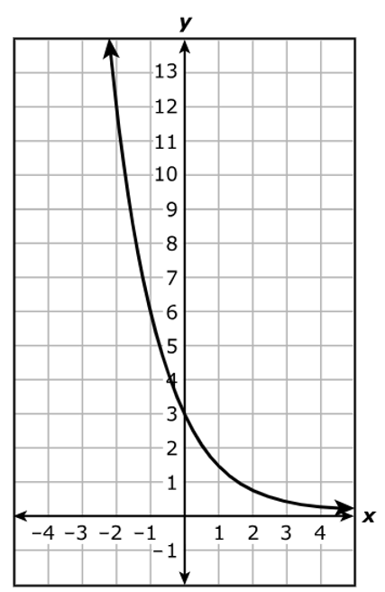
Which statement is best represented by the graph of the function?
A. The equation of the asymptote of the graph is x = 4
B. The function is increasing on the interval x > 0 and decreasing on the interval x < 0
C. The x-intercept of the graph of the function is (8, 0)
D. The y-intercept of the graph of the function is (0, 3)
The y-intercept is the point where the graph intersects the y-axis.
The graph intersects the y-axis at (0, 3)
Hence, the y-intercept is (0, 3)
$ A.\;\; 2\sqrt{5} \\[3ex] B.\;\; 5\sqrt{2} \\[3ex] C.\;\; 12.5 \\[3ex] D.\;\; 25 \\[3ex] $
$ \sqrt{50} \\[3ex] = \sqrt{25 \cdot 2} \\[3ex] = \sqrt{25} \cdot \sqrt{2} \\[3ex] = 5\sqrt{2} $
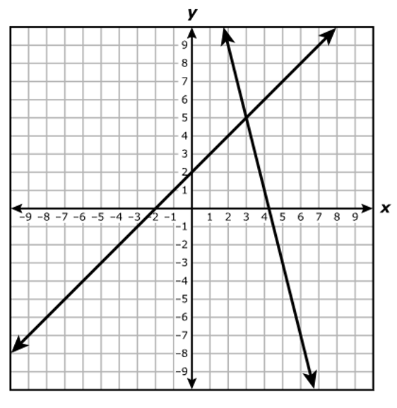
Which system of equations best represents the system shown on the graph?
$ A.\;\; y = x + 2 \\[3ex] \hspace{1.6em} y = -4x + 17 \\[5ex] B.\;\; y = x + 2 \\[3ex] \hspace{1.6em} y = -4x + 15 \\[5ex] C.\;\; x + y = 2 \\[3ex] \hspace{1.6em} 4x + y = 17 \\[5ex] D.\;\; x + y = 2 \\[3ex] \hspace{1.6em} 4x + y = 15 \\[3ex] $
$ m = \text{slope} \\[3ex] b = y-\text{intercept} \\[3ex] y - y_1 = m(x - x_1)...\text{Point–Slope Form} \\[3ex] y = mx + b ...\text{Slope–Intercept Form} \\[5ex] \underline{\text{Line with the positive slope}} \\[3ex] \text{Point 1: } (-2, 0) \\[3ex] x_1 = -2 \\[3ex] y_1 = 0 \\[5ex] \text{Point 2: } (0, 2) \\[3ex] x_2 = 0 \\[3ex] y_2 = 2 \\[5ex] m = \dfrac{y_2 - y_1}{x_2 - x_1} \\[5ex] m = \dfrac{2 - 0}{0 - (-2)} \\[5ex] m = \dfrac{2}{2} \\[5ex] m = 1 \\[5ex] \text{Point–Slope Form} \\[3ex] y - 0 = 1(x - (-2)) \\[5ex] \text{Slope–Intercept Form} \\[3ex] y = x + 2 \\[5ex] \underline{\text{Line with the negative slope}} \\[3ex] \text{Point 1: } (3, 5) \\[3ex] x_1 = 3 \\[3ex] y_1 = 5 \\[5ex] \text{Point 2: } (5, -3) \\[3ex] x_2 = 5 \\[3ex] y_2 = -3 \\[5ex] m = \dfrac{y_2 - y_1}{x_2 - x_1} \\[5ex] m = \dfrac{-3 - 5}{5 - 3} \\[5ex] m = -\dfrac{8}{2} \\[5ex] m = -4 \\[5ex] \text{Point–Slope Form} \\[3ex] y - 5 = -4(x - 3) \\[3ex] y = -4x + 12 + 5 \\[5ex] \text{Slope–Intercept Form} \\[3ex] y = -4x + 17 \\[5ex] \therefore \text{The system of equations shown on the graph is:} \\[3ex] y = x + 2 \\[3ex] y = -4x + 17 $
$ A.\;\; f(x) = -x^2 - 1 \\[3ex] B.\;\; f(x) = x^2 + 4x + 3 \\[3ex] C.\;\; f(x) = (x + 3)^2 + 1 \\[3ex] D.\;\; f(x) = (x + 4)^2 - 17 \\[3ex] $
The functions are quadratic functions.
We can solve the question using at least two approaches.
Use any approach you prefer.
1st Approach: Vertex Method
The y-coordinate of the vertex is the maximum or the minimum value of the function.
This value helps us determine the range of the function.
Another important information we need for this question is the leading coefficient.
If the leading coefficient is negative, the quadratic function has a maximum value.
If the leading coefficient is positive, the quadratic function has a minimum value.
The set of all real numbers greater than or equal to –1 implies that the graph of the function has a minimum value.
The minimum value must be –1
This also means that the leading coefficient is positive.
Let us analyze each option.
$ A.\;\; f(x) = -x^2 - 1 \\[3ex] \text{The leading coefficient is negative} \\[3ex] \text{Discard}. \\[5ex] B.\;\; f(x) = x^2 + 4x + 3 \\[3ex] \text{Compare to the standard form: } ax^2 + bx + c \\[3ex] a = 1 \\[3ex] b = 4 \\[3ex] c = 3 \\[3ex] x-coordinate \text{ of the vertex} = -\dfrac{b}{2a} = -\dfrac{4}{2(1)} = -\dfrac{4}{2} = -2 \\[5ex] y-coordinate \text{ of the vertex} = f(-2) \\[3ex] = (-2)^2 + 4(-2) + 3 \\[3ex] = 4 - 8 + 3 \\[3ex] = -1 \\[3ex] $ This is the correct option.
But, we can try other options to convince you.
$ C.\;\; f(x) = (x + 3)^2 + 1 \\[3ex] \text{Compare to the vertex form: } a(x - h)^2 + k \\[3ex] k = 1 \\[3ex] y-coordinate \text{ of the vertex} = k = 1 \\[3ex] \text{Discard}. \\[5ex] D.\;\; f(x) = (x + 4)^2 - 17 \\[3ex] k = -17 \\[3ex] y-coordinate \text{ of the vertex} = -17 \\[3ex] \text{Discard}. \\[3ex] $ 2nd Approach: Let us analyze each option.
Because of time, it is better to use the process of elimination: eliminate any option that has any output less than –1.
Something important to note in this question is that the square of any integer besides zero is always positive.
The square of zero is zero.
$ \text{Option A} \\[3ex] f(x) = -x^2 - 1 \\[3ex] \text{Assume } x = -1 \\[3ex] f(-1) = -(-1)^2 - 1 \\[3ex] f(-1) = -1 - 1 \\[3ex] f(-1) = -2 \\[3ex] -2 \lt -1 \\[3ex] \text{Discard}. \\[5ex] \text{Option B} \\[3ex] f(x) = x^2 + 4x + 3 \\[3ex] \text{Assume } x \ge 0 \\[3ex] f(x) \text{ must be } \gt -1...okay \\[5ex] \text{Assume } x \lt 0 \\[3ex] \text{Let } x = -1 \\[3ex] f(-1) = (-1)^2 + 4(-1) + 3 \\[3ex] f(-1) = 1 - 4 + 3 \\[3ex] f(-1) = 0 \\[3ex] 0 \gt -1...okay \\[3ex] \text{Let } x = -2 \\[3ex] f(-2) = (-2)^2 + 4(-2) + 3 \\[3ex] f(-2) = 4 - 8 + 3 \\[3ex] f(-2) = -1 \\[3ex] -1 = -1 ...okay \\[3ex] \text{Let } x = -3 \\[3ex] f(-3) = (-3)^2 + 4(-3) + 3 \\[3ex] f(-3) = 9 - 12 + 3 \\[3ex] f(-3) = 0 \\[3ex] 0 \gt -1...okay \\[3ex] \text{Let } x = -4 \\[3ex] f(-4) = (-4)^2 + 4(-4) + 3 \\[3ex] f(-4) = 16 - 16 + 3 \\[3ex] f(-4) = 3 \\[3ex] 3 \gt -1...okay \\[3ex] \text{Let } x = -5 \\[3ex] f(-5) = (-5)^2 + 4(-5) + 3 \\[3ex] f(-5) = 25 - 20 + 3 \\[3ex] f(-5) = 8 \\[3ex] 8 \gt -1...okay \\[3ex] $ This is the correct option.
But, we can try other options to convince you.
$ \text{Option C} \\[3ex] f(x) = (x + 3)^2 + 1 \\[3ex] (x + 3)^2 \text{ must be positive} \\[3ex] (x + 3)^2 + 1 \text{ must be positive} \\[3ex] \text{So } (x + 3)^2 + 1 \gt -1 \\[3ex] \text{This satisfies the condition that the range is } \gt -1 \\[3ex] $ Let us see whether it satisfies the other condition.
Can we find x such that $f(x) = -1$?
$ \text{Assume } f(x) = -1 \\[3ex] (x + 3)^2 + 1 = -1 \\[3ex] (x + 3)^2 = -1 - 1 \\[3ex] (x + 3)^2 = -2 \\[3ex] x + 3 = \pm\sqrt{-2} ...x \text{ is not a real number} \\[3ex] \text{Discard}. \\[5ex] \text{Option D} \\[3ex] f(x) = (x + 4)^2 - 17 \\[3ex] \text{Assume } x = -1 \\[3ex] f(-1) = (-1 + 4)^2 - 17 \\[3ex] f(-1) = 3^2 - 17 \\[3ex] f(-1) = 9 - 17 \\[3ex] f(-1) = -8 \\[3ex] -8 \lt -1 \\[3ex] \text{Discard}. $
| x | f(x) |
|---|---|
| –6 | –10 |
| –2 | –4 |
| 4 | 5 |
| 10 | 14 |
What is the equation of function f in slope–intercept form?
Move the correct answer to each box. Not all answers will be used.
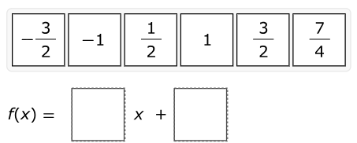
$ \text{Point 1: } (-6, -10) \\[3ex] x_1 = -6 \\[3ex] y_1 = -10 \\[5ex] \text{Point 2: } (10, 14) \\[3ex] x_2 = 10 \\[3ex] y_2 = 14 \\[5ex] \text{Slope, } m = \dfrac{y_2 - y_1}{x_2 - x_1} \\[5ex] m = \dfrac{14 - (-10)}{10 - (-6)} \\[5ex] m = \dfrac{24}{16} \\[5ex] m = \dfrac{3}{2} \\[5ex] \text{Point–Slope Form} \\[3ex] y - y_1 = m(x - x_1) \\[3ex] y - (-10) = \dfrac{3}{2}[x - (-6)] \\[5ex] y + 10 = \dfrac{3}{2}(x + 6) \\[5ex] y + 10 = \dfrac{3}{2}x + 9 \\[5ex] \text{Slope–Intercept Form} \\[3ex] y = mx + b ...\text{where } b \text{ is the y-intercept} \\[3ex] y = \dfrac{3}{2}x + 9 - 10 \\[5ex] y = \dfrac{3}{2}x + (-1) $
The table shows the amount the student had in the account after different numbers of months had passed.
| Number of Months | Remaining Balance (dollars) |
|---|---|
| 2 | 7,592 |
| 8 | 5,931 |
| 12 | 5,683 |
| 17 | 4,428 |
| 23 | 2,854 |
Based on the correlation coefficient for the data, what type of linear association exists between the number of months that had passed and the balance remaining in the account?
A. Strong positive
B. Weak positive
C. Strong negative
D. Weak negative
Observing the data, as the number of months increases (from 2 to 23), the remaining balance decreases (from 7,592 to 2,854).
This consistent downward trend indicates a strong negative correlation between the number of months and the remaining balance.
$ A.\;\; y = -\dfrac{2}{11}x + 9 \\[5ex] B.\;\; y = -\dfrac{2}{11}x + 1 \\[5ex] C.\;\; y = -\dfrac{2}{11}x - 9 \\[5ex] D.\;\; y = -\dfrac{2}{11}x - 1 \\[5ex] $
$ \text{slope, } m = -\dfrac{2}{11} \\[5ex] \text{Point 1: } (22, 5) \\[3ex] x_1 = 22 \\[3ex] y_1 = 5 \\[5ex] \text{Point–Slope Form} \\[3ex] y - y_1 = m(x - x_1) \\[3ex] y - 5 = -\dfrac{2}{11}(x - 22) \\[5ex] y - 5 = -\dfrac{2}{11}x + 4 \\[5ex] \text{Slope–Intercept Form} \\[3ex] y = -\dfrac{2}{11}x + 4 + 5 \\[5ex] y = -\dfrac{2}{11}x + 9 $
A. The zeros are 15 and –21 because $h(15) = 0$ and $h(-21) = 0$.
B. The zeros are –15 and 21 because $h(-15) = 0$ and $h(21) = 0$.
C. The zeros are 5 and –7 because $h(5) = 0$ and $h(-7) = 0$.
D. The zeros are –5 and 7 because $h(-5) = 0$ and $h(7) = 0$.
$ h(x) = 3(x - 5)(x + 7) \\[3ex] \text{zeros of } h(x) \implies \\[3ex] h(x) = 3(x - 5)(x + 7) = 0 \\[3ex] \underline{\text{Zero Product Property}} \\[3ex] 3(x - 5) = 0 \hspace{1em}\text{OR}\hspace{1em} x + 7 = 0 \\[3ex] x = 5 \hspace{1em}\text{OR}\hspace{1em} x = -7 \\[3ex] \implies \\[3ex] h(5) = 0 \hspace{1em}\text{OR}\hspace{1em} h(-7) = 0 \\[3ex] $ C. The zeros are 5 and –7 because $h(5) = 0$ and $h(-7) = 0$.
A.
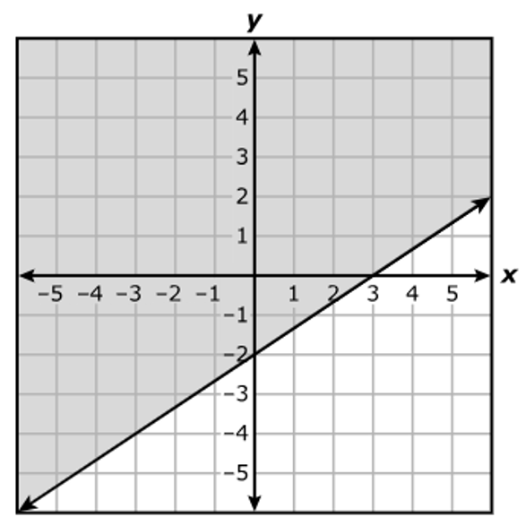
B.
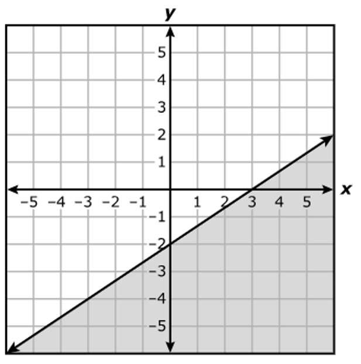
C.
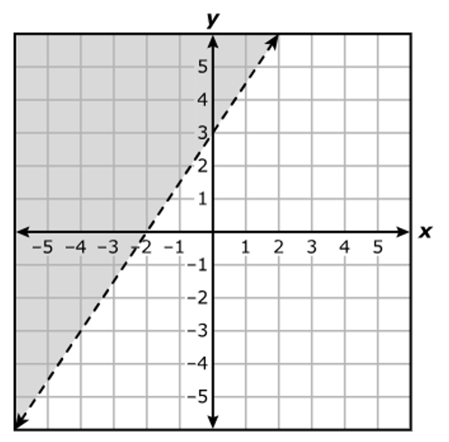
D.
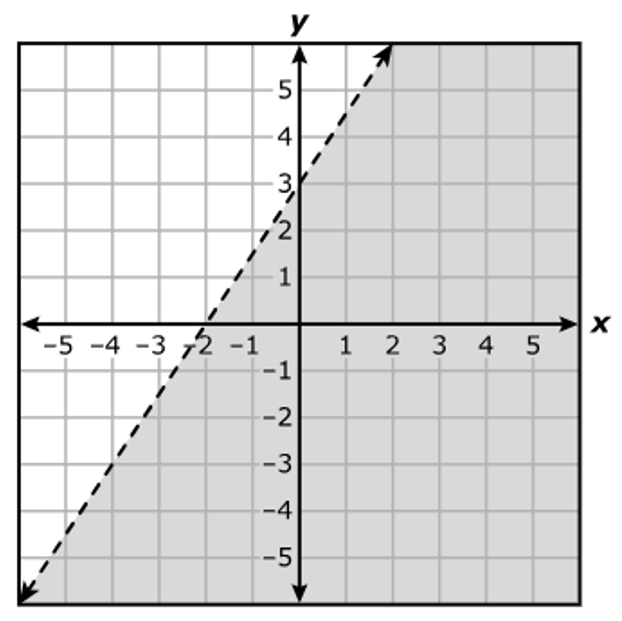
$ 3y - 2x \le -6 \\[5ex] \text{When } x = 0 \\[3ex] 3y - 2(0) \le -6 \\[3ex] 3y \le -6 \\[3ex] y \le -2 ...\text{Mark point } (0, -2) \\[3ex] \text{The shaded area is downwards from } y = -2 \\[5ex] \text{When } y = 0 \\[3ex] 3(0) - 2x \le -6 \\[3ex] -2x \le -6 \\[3ex] x \ge \dfrac{-6}{-2} \\[5ex] x \ge 3 ...\text{Mark point } (3, 0) \\[3ex] \text{The shaded area is to the right of } x = 3 \\[3ex] $ Draw a straight solid line (because of the equal sign) connecting the two points: (0, –2) and (3, 0)
Shade the regions accordingly.
Locate the overlap of the two regions.
The correct answer is Option B.
$ 3x - 5y = 12...eqn.(1) \\[3ex] y = -6x + 2...eqn.(2) \\[3ex] \text{Substitute eqn.(2) into eqn.(1) for } y \\[3ex] 3x - 5(-6x + 2) = 12 \\[3ex] 3x + 30x - 10 = 12 \\[3ex] 33x = 12 + 10 \\[3ex] x = \dfrac{22}{33} \\[5ex] x = \dfrac{2}{3} $
What is the vertex of g?
$ A.\;\; (0, 8.7) \\[3ex] B.\;\; (0, -8.7) \\[3ex] C.\;\; (8.7, 0) \\[3ex] D.\;\; (-8.7, 0) \\[3ex] $
$ f(x) = x^2 \\[3ex] g(x) = f(x + 8.7) = (x + 8.7)^2 \\[3ex] $ Transformation from $f(x)$ to $g(x)$:
Horizontal Shift of f(x) 8.7 units left
This implies that:
$ (0, 0) \rightarrow (0 - 8.7, 0) \\[3ex] \rightarrow (-8.7, 0) $
The rate of change of y with respect to x is the slope of the function.
Let us represent the function in slope–intercept form so that we can determine the slope.
$ x + 7y = -14 \\[3ex] 7y = -x - 14 \\[3ex] y = \dfrac{-x - 14}{7} \\[5ex] y = -\dfrac{x}{7} - \dfrac{14}{7} \\[5ex] \text{Compare to slope–intercept form: } y = mx + b \\[3ex] \text{slope, } m = -\dfrac{1}{7} $
Apples cost $2.50 per pound, and blueberries cost $3.00 per pound.
The baker does not want to spend more than $75.00.
Which inequality represents all possible combinations of x, the number of pounds of apples, and y, the number of pounds of blueberries, that the baker can order?
$ A.\;\; 5.5x + 5.5y \ge 75 \\[3ex] B.\;\; 2.5x + 3y \le 75 \\[3ex] C.\;\; 3x + 2.5y \le 75 \\[3ex] D.\;\; 2.5x + 3y \ge 75 \\[3ex] $
The number of pounds of apples, x @ $2.50 per pound = 2.50 * x = 2.5x
The number of pounds of blueberries, y @ $3.00 per pound = 3.00 * y = 3y
Total cost = 2.5x + 3y
The baker does not want to spend more than $75.00.
This means that the total cost should be less than or equal to $75.00.
$ 2.5x + 3y \le 75 $
Which location best represents the y-intercept of the function?
Select ONE correct answer.
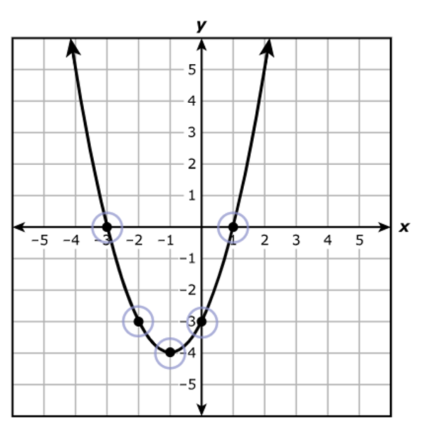
The y-intercept is the point where the graph intersects the y-axis.
The correct location is:
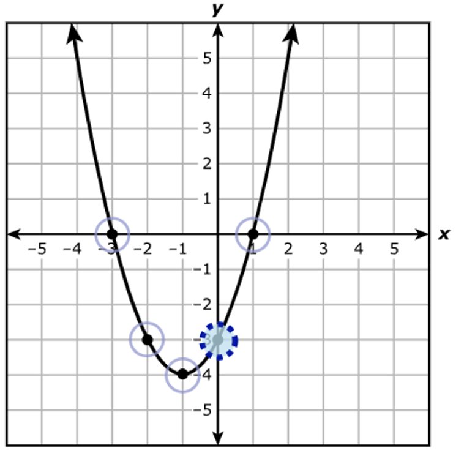
For purchases of at least 1 ticket, the table shows the relationship between p, the number of people in a car, and c, the total cost in dollars.
| Number of People, p | Total Cost, c (dollars) |
|---|---|
| 1 | 64.95 |
| 2 | 109.90 |
| 3 | 154.85 |
| 4 | 199.80 |
The amusement park states that at most 4 tickets can be purchased.
What is the range of the function in this situation?
$ A.\;\; 1 \le p \le 4 \\[3ex] B.\;\; 64.95 \le c \le 199.80 \\[3ex] C.\;\; \{1, 2, 3, 4\} \\[3ex] D.\;\; \{64.95, 109.90, 154.85, 199.80\} \\[3ex] $
The range of a function is the set of all output values that result from applying the function to its input values.
The range of the function is: $\{64.95, 109.90, 154.85, 199.80\}$
Enter your answer in the box provided.
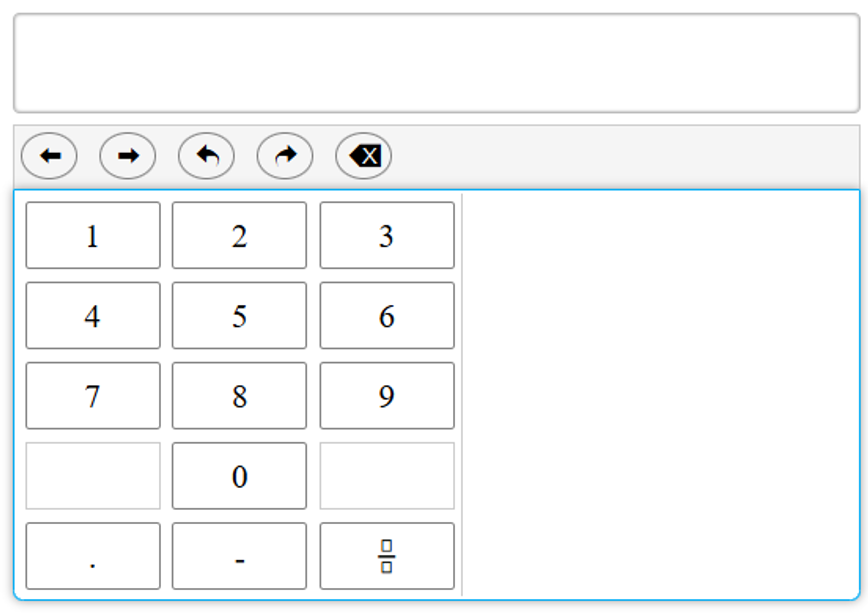
$ f(x) = 3(x - 4)^2 - 7 \\[3ex] f(-1) = 3(-1 - 4)^2 - 7 \\[3ex] = 3(-5)^2 - 7 \\[3ex] = 3(25) - 7 \\[3ex] = 75 - 7 \\[3ex] = 68 $
| x | P(x) |
|---|---|
| –1 | 270 |
| 0 | 90 |
| 1 | 30 |
| 2 | 10 |
Which function represents the relation shown in the table?
$ A.\;\; P(x) = 30\left(\dfrac{1}{3}\right)^x \\[5ex] B.\;\; P(x) = 90(3)^x \\[3ex] C.\;\; P(x) = 90\left(\dfrac{1}{3}\right)^x \\[5ex] D.\;\; P(x) = 30(3)^x \\[3ex] $
$ \underline{\text{Exponential Function}} \\[3ex] y = ab^x \\[3ex] a = \text{initial value} \\[3ex] b = \text{base} \\[5ex] \text{Point 1: } (0, 90) \\[3ex] x = 0 \\[3ex] y = 90 \\[3ex] 90 = a * b^{0} \\[3ex] 90 = a * 1 \\[3ex] a = 90 \\[5ex] \text{Point 2: } (1, 30) \\[3ex] x = 1 \\[3ex] y = 30 \\[3ex] 30 = 90 * b^{1} \\[3ex] 30 = 90 * b \\[3ex] b = \dfrac{30}{90} \\[5ex] b = \dfrac{1}{3} \\[5ex] \implies \\[3ex] y = 90\left(\dfrac{1}{3}\right)^x $
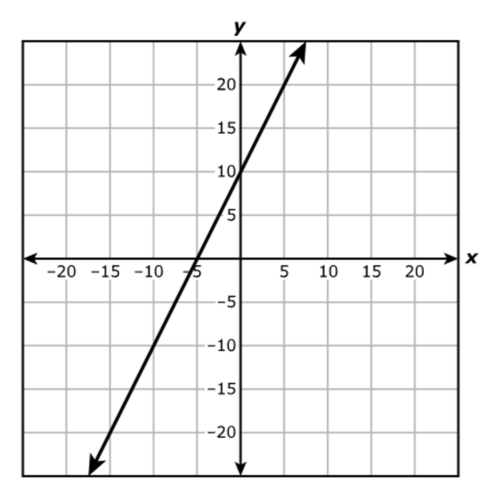
Which value best represents the zero of the function? $ A.\;\; 2 \\[3ex] B.\;\; 10 \\[3ex] C.\;\; -5 \\[3ex] D.\;\; -2 \\[3ex] $
The function is the y
The zero of the function is the value of the x when y = 0
y = 0 when x = –5
Hence, the zero of the function is: x = –5
$ A.\;\; x + 4 \\[3ex] B.\;\; x + 8 \\[3ex] C.\;\; x - 4 \\[3ex] D.\;\; x - 8 \\[3ex] $
$ 5x^2 - 30x - 80 \\[3ex] 5(x^2 - 6x - 16) \\[3ex] 5(x + 2)(x - 8) \\[3ex] $ One of the factors is $x - 8$
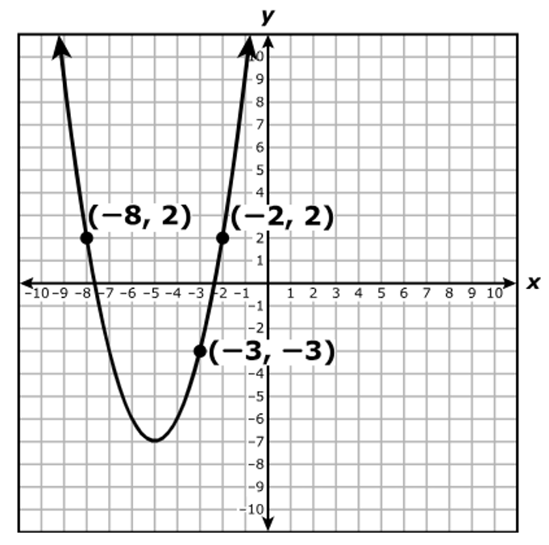
Which equation represents the axis of symmetry of the graph of f? $ A.\;\; x = -5 \\[3ex] B.\;\; x = -3 \\[3ex] C.\;\; y = -7 \\[3ex] D.\;\; y = 2 \\[3ex] $
The axis of symmetry of the graph of f is the vertical line through the vertex
It is the x-coordinate of the vertex
Axis of symmetry is: $x = -5$
Line p is parallel to line n and passes through the point (15, –6)
What is the equation of line p in slope–intercept form?
Move the correct answer to each box.
Each answer may be used more than once.
Not all answers will be used.
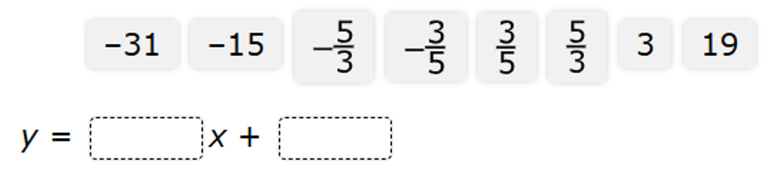
$ \underline{\text{Line }n} \\[3ex] y = -\dfrac{3}{5}x + 6 \\[5ex] \text{Compare to slope–intercept form: } y = mx + b \\[3ex] \text{slope, } m = -\dfrac{3}{5} \\[5ex] \underline{\text{Line }p} \\[3ex] m = -\dfrac{3}{5} ...\text{parallel lines have the same slope} \\[5ex] \text{Passes through Point } (15, -6) \\[3ex] x_1 = 15 \\[3ex] y_1 = -6 \\[3ex] y - y_1 = m(x - x_1) ...\text{Point–Slope Form} \\[3ex] y - (-6) = -\dfrac{3}{5}(x - 15) \\[5ex] y + 6 = -\dfrac{3}{5}x + 9 \\[5ex] y = -\dfrac{3}{5}x + 9 - 6 \\[5ex] y = -\dfrac{3}{5}x + 3 ...\text{Slope–Intercept Form} $
$ A.\;\; 6k^3 + 12m \\[3ex] B.\;\; -2k^3 + 3km \\[3ex] C.\;\; 6k^3 - 8k^2 - 9km + 12m \\[3ex] D.\;\; -2k^2 - 9km - 12m \\[3ex] $
$ (2k^2 - 3m)(3k - 4) \\[3ex] 6k^3 - 8k^2 - 9km + 12m $
A. The system has no solutions.
B. The system has exactly one solution.
C. The system has exactly two solutions.
D. The system has infinitely many solutions.
$ y = -0.5x + 4...eqn.(1) \\[3ex] 3x + 6y = 24...eqn.(2) \\[3ex] \text{From } eqn.(2) \\[3ex] 6y = -3x + 24 \\[3ex] y = -\dfrac{3}{6}x + \dfrac{24}{6} \\[5ex] y = -0.5x + 4 ...\text{modified form of } eqn.(2) \\[3ex] $ We notice that eqn.(1) and eqn.(2) are the same.
So, we are saying the same thing.
Hence, the system has infinitely many solutions.
The table shows the linear relationship between the price of the lunch special in dollars and the number of the lunch specials sold on six different days.
| Price (dollars) | Number Sold |
|---|---|
| 6.50 | 107 |
| 9.50 | 78 |
| 7.25 | 99 |
| 11.00 | 65 |
| 8.75 | 87 |
| 9.35 | 80 |
Based on the line of best fit, which predictions are true?
Select TWO correct answers.
Linear relationship implies that we shall use the equation of a straight line
We shall use the equation of a straight line in point–slope form and slope intercept form.
$ \underline{\text{Linear Relationship}} \\[3ex] \text{Point 1: } (6.50, 107) \\[3ex] x_1 = 6.5 \\[3ex] y_1 = 107 \\[5ex] \text{Point 2: } (11.00, 65) \\[3ex] x_2 = 11 \\[3ex] y_2 = 65 \\[5ex] \text{slope, } m = \dfrac{y_2 - y_1}{x_2 - x_1} \\[5ex] m = \dfrac{65 - 107}{11 - 6.5} \\[5ex] m = -\dfrac{42}{4.5} \\[5ex] m = -9.3\bar{3} \\[5ex] \underline{\text{Point–Slope Form}} \\[3ex] y - y_1 = m(x - x_1) \\[3ex] y - 107 = -9.33\bar{3}(x - 6.5) \\[3ex] y - 107 = -9.3\bar{3}x + 60.6\bar{6} \\[5ex] \underline{\text{Slope–Intercept Form}} \\[3ex] y = -9.3\bar{3}x + 60.6\bar{6} + 107 \\[3ex] y = -9.3\bar{3}x + 167.6\bar{6} \\[5ex] \text{Let us test each option and eliminate incorrect ones} \\[3ex] \text{1st option: } x = \$5.00 \\[3ex] y = -9.3\bar{3}(5) + 167.6\bar{6} \\[3ex] y = 121\text{ lunch specials} \\[3ex] 121 \ne 82 ...\text{Discard} \\[5ex] \text{2nd option: } x = \$6.00 \\[3ex] y = -9.3\bar{3}(6) + 167.6\bar{6} \\[3ex] y = 111.6\bar{6}\text{ lunch specials} \\[3ex] 111.6\bar{6} \approx 111 ...\text{rounded down...Keep} \\[5ex] \text{3rd option: } x = \$7.50 \\[3ex] y = -9.3\bar{3}(7.5) + 167.6\bar{6} \\[3ex] y = 97.6\bar{6}\text{ lunch specials} \\[3ex] 97.6\bar{6} \ne 102 ...\text{Discard} \\[5ex] \text{4th option: } x = \$12.50 \\[3ex] y = -9.3\bar{3}(12.5) + 167.6\bar{6} \\[3ex] y = 51\text{ lunch specials} \\[3ex] 51 \ne 74 ...\text{Discard} \\[5ex] \text{5th option: } x = \$15.00 \\[3ex] y = -9.3\bar{3}(15) + 167.6\bar{6} \\[3ex] y = 27.6\bar{6}\text{ lunch specials} \\[3ex] 27.6\bar{6} \approx 28 ...\text{rounded normal or rounded up...Keep} $
What is the width of the deck in feet?
$ A.\;\; 6\;ft \\[3ex] B.\;\; 4\;ft \\[3ex] C.\;\; 9\;ft \\[3ex] D.\;\; 3\;ft \\[3ex] $
$ x(x + 3) = 108 \\[3ex] x^2 + 3x - 108 = 0 \\[3ex] (x + 12)(x - 9) = 0 \\[3ex] x + 12 = 0 \hspace{1em}\text{OR}\hspace{1em} x - 9 = 0 ...\text{Zero Product Property} \\[3ex] x = -12 ...\text{Discard because the width cannot be negative} \\[3ex] x = 9 ...\text{Keep because the width is positive} \\[3ex] x = 9\;ft $
| x | y |
|---|---|
| –4 | 23 |
| –1 | 15 |
| 2 | 7 |
| 5 | –1 |
What is the slope of the line represented in the table? $ A.\;\; \dfrac{8}{3} \\[5ex] B.\;\; -\dfrac{8}{3} \\[5ex] C.\;\; \dfrac{3}{8} \\[5ex] D.\;\; -\dfrac{3}{8} \\[5ex] $
$ \text{Point 1: } (-4, 23) \\[3ex] x_1 = -4 \\[3ex] y_1 = 23 \\[5ex] \text{Point 2: } (5, -1) \\[3ex] x_2 = 5 \\[3ex] y_2 = -1 \\[5ex] \text{slope, } m = \dfrac{y_2 - y_1}{x_2 - x_1} \\[5ex] m = \dfrac{-1 - 23}{5 - (-4)} \\[5ex] m = -\dfrac{24}{9} \\[5ex] m = -\dfrac{8}{3} $
Move the correct answer to each box.
Each amswer may be used more than once.
Not all answers will be used.
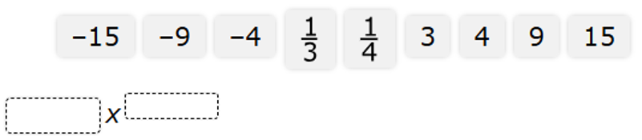
$ \dfrac{2x^{12}}{6x^{-3}} \\[5ex] \dfrac{2}{6} * \dfrac{x^{12}}{x^{-3}} \\[5ex] \dfrac{2}{6} * x^{12 - (-3)}...\text{Law 2 Exp} \\[5ex] \dfrac{1}{3} * x^{12 + 3} \\[5ex] \dfrac{1}{3}x^{15} $
$ A.\;\; \dfrac{3}{2} \\[5ex] B.\;\; -21 \\[3ex] C.\;\; \dfrac{9}{2} \\[5ex] D.\;\; -45 \\[3ex] $
$ \dfrac{4}{3}z + 6 = -4\left(\dfrac{1}{6}z + 9\right) \\[5ex] \dfrac{4z}{3} + 6 = \dfrac{-4z}{6} - 36 \\[5ex] \dfrac{4z}{3} + \dfrac{4z}{6} = -36 - 6 \\[5ex] \dfrac{4z}{3} + \dfrac{2z}{3} = -42 \\[5ex] \dfrac{6z}{3} = -42 \\[5ex] 2z = -42 \\[3ex] z = -\dfrac{42}{2} \\[5ex] z = -21 $
Graph the solution set of the linear inequality in the coordinate plane.
First, select the Graph button to graph the line and choose the line style.
To graph a line, select two points in the coordinate plane. A line will connect the points.
Then, select the Solution Set button to slect the desired region.
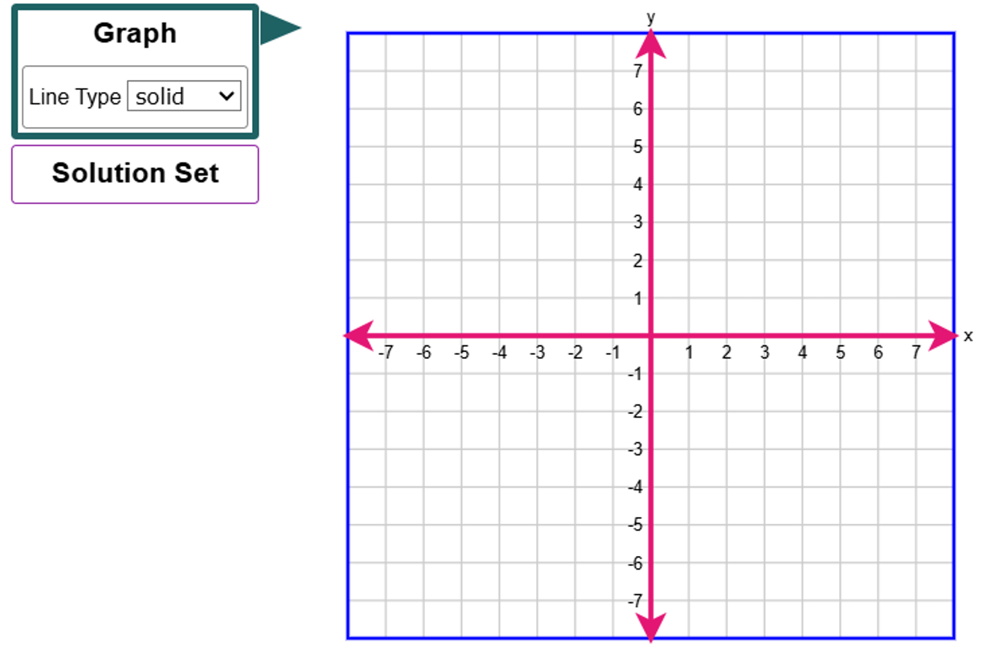
Because the inequality does not contain an equal sign, the line will be a dashed line.
$ y \gt 5x - 3 \\[5ex] \text{When } x = 0 \\[3ex] y \gt 5(0) - 3 \\[3ex] y \gt -3 \\[5ex] \text{When } x = 1 \\[3ex] y \gt 5(1) - 3 \\[3ex] y \gt 5 - 3 \\[3ex] y \gt 2 \\[5ex] $ The graph of the inequality is
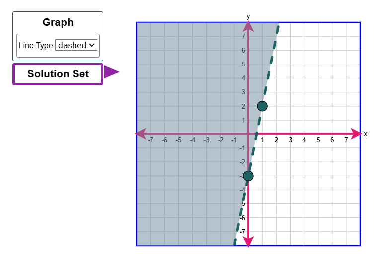
If you want to play with this some more, we can also use another approach.
$ \text{When } y = 2 \\[3ex] 2 \gt 5x - 3 \\[3ex] 5x - 3 \lt 2 \\[3ex] 5x \lt 2 + 3 \\[3ex] 5x \lt 5 \\[3ex] x \lt 1 \\[3ex] $ Student: Mr. C, wait a minute.
Why did you not do when $y = 0$?
Is there any reason for using 2?
Teacher: Good observation.
If we used 0, we would end up with a fraction.
Fractions are not allowed in the graph that we are given.
Hence, it is necessary that we use a value of $y$ that will give an integer value of $x$ within the domain [-7, 7]
What other values could we have used?
Student: 7
–2
Teacher: There you go...
The graph of the inequality is
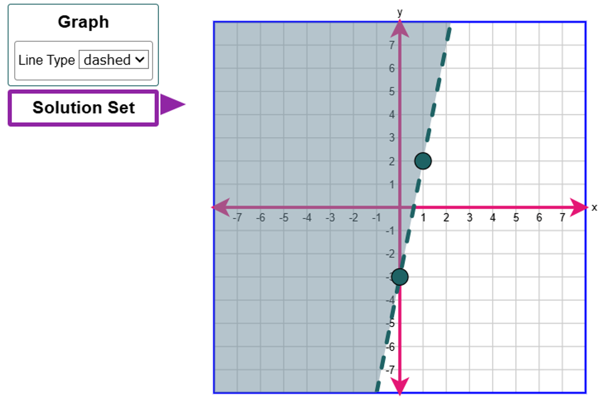
$ A.\;\; y = -\dfrac{8}{5}x - 8 \\[5ex] B.\;\; y = -\dfrac{5}{8}x + 5 \\[5ex] C.\;\; y = \dfrac{8}{5}x + 8 \\[5ex] D.\;\; y = \dfrac{5}{8}x - 5 \\[5ex] $
$ 5x - 8y = 40 \\[3ex] 5x - 40 = 8y \\[3ex] 8y = 5x - 40 \\[3ex] y = \dfrac{5x - 40}{8} \\[5ex] y = \dfrac{5x}{8} - \dfrac{40}{8} \\[5ex] y = \dfrac{5}{8}x - 5 $
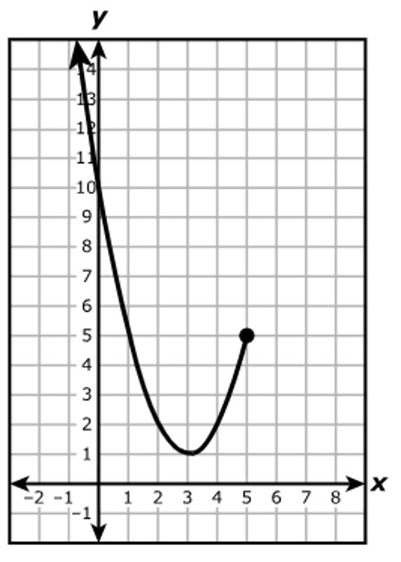
Which statement best represents the domain of the part of the function shown?
A. All real numbers less than or equal to 5
B. All real numbers greater than or equal to 3
C. All real numbers greater than or equal to 1
D. All real numbers
The domain is the set of all the input values, x for which the function has an output.
The closed circle represents a closed interval. It shows that the end point is included.
On the graph, it is on the right hand side at x = 5
The arrow represents infinity
On the graph, it is on the left hand side and represents negative infinity.
So, the interval notation is: $(-\infty, 5]$
This represents all real numbers less than or equal to 5.
Select the type of graph.
Drag the two points and the asymptote, if applicable, to their correct positions.
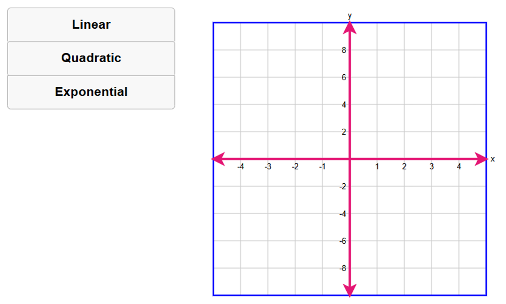
The function is an exponential function because the exponent, x is a variable and the base, $\dfrac{1}{3}$ is a constant.
So, we select the Exponential tool.
$ y = f(x) = 6\left(\dfrac{1}{3}\right)^x \\[5ex] \text{ When } x = 0 \\[3ex] y = 6\left(\dfrac{1}{3}\right)^0 \\[5ex] y = 6 * 1 \\[3ex] y = 6 \\[3ex] \text{Point 1: } (0, 6) \\[5ex] \text{ When } x = 1 \\[3ex] y = 6\left(\dfrac{1}{3}\right)^1 \\[5ex] y = 6 * \dfrac{1}{3} \\[5ex] y = 2 \\[3ex] \text{Point 2: } (1, 2) \\[3ex] $ The graph of the exponential function is:
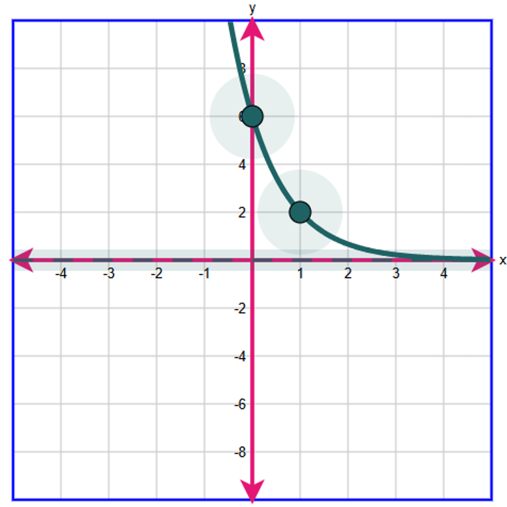
The length of the garden, y, is 6 meters more than twice the width, x.
Which system of equations can be used to find the length and width of the garden in meters?
$ A.\;\; 2x + 2y = 48 \\[3ex] \hspace{1.6em} y = 6x + 2 \\[5ex] B.\;\; x + y = 48 \\[3ex] \hspace{1.6em} y = 2x + 6 \\[5ex] C.\;\; 2x + 2y = 48 \\[3ex] \hspace{1.6em} y = 2x + 6 \\[5ex] D.\;\; x + y = 48 \\[3ex] \hspace{1.6em} y = 6x + 2 \\[3ex] $
$ \text{The perimeter of a rectangular garden is 48 meters.} \\[3ex] Perimeter = 2(length + width) \\[3ex] 2(y + x) = 48 \\[3ex] 2y + 2x = 48 \\[3ex] 2x + 2y = 48 ...eqn.(1) \\[5ex] \text{The length is 6 meters more than twice the width} \\[3ex] y = 6 + 2x \\[3ex] y = 2x + 6 ...eqn.(2) $
A.
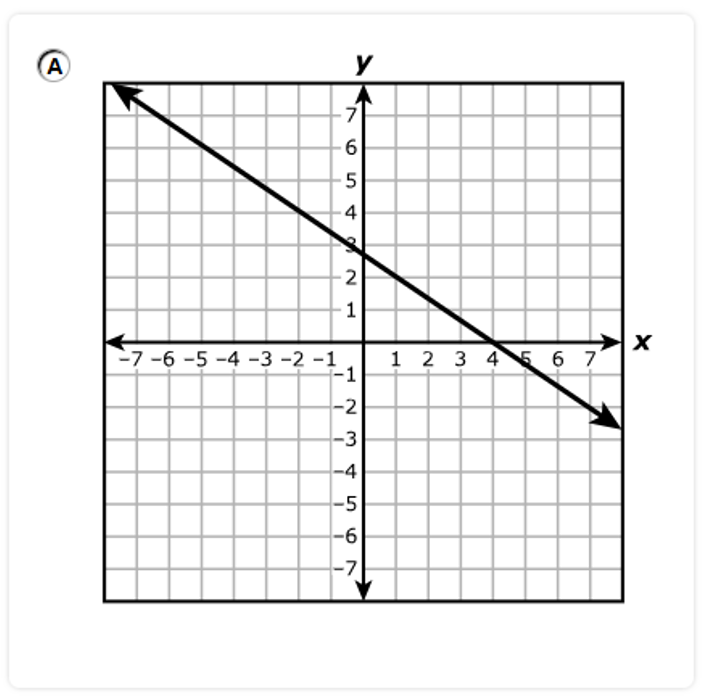
B.
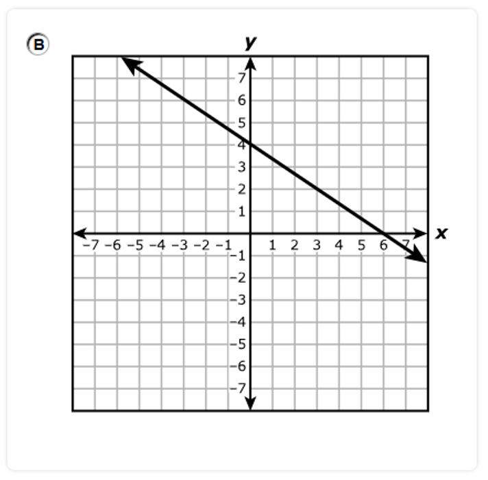
C.
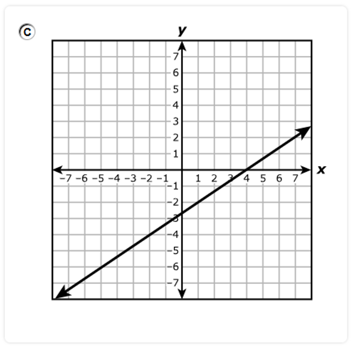
D.
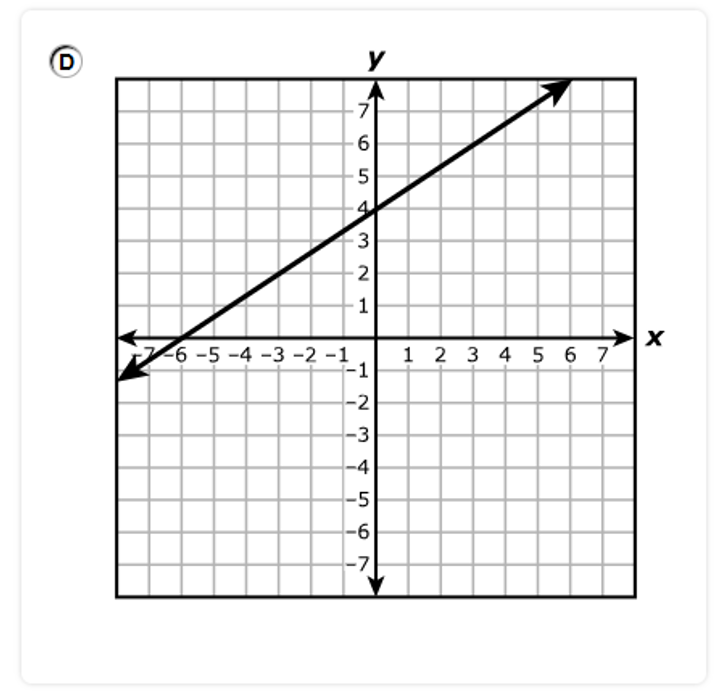
The graph has a positive slope.
So, Options A. and B. are discarded.
The graph has a y-intercept of 4
This implies that the graph intersects the y-axis at 4.
Option C is eliminated.
Option D. is the correct answer.
Move the correct answer to each box.
Not all answers will be used.
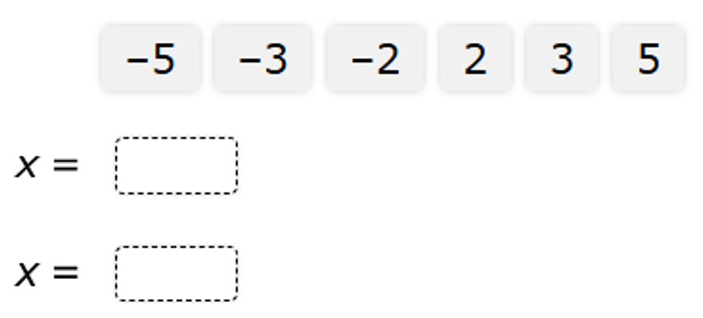
$ (2x + 1)^2 = 25 \\[3ex] 2x + 1 = \pm\sqrt{25} ...\text{Square Root Property} \\[3ex] 2x + 1 = \pm 5 \\[3ex] 2x = -1 \pm 5 \\[3ex] 2x = -1 + 5 \hspace{2em}\text{OR}\hspace{2em} 2x = -1 - 5 \\[3ex] 2x = 4 \hspace{2em}\text{OR}\hspace{2em} 2x = -6 \\[3ex] x = \dfrac{4}{2} \hspace{2em}\text{OR}\hspace{2em} x = -\dfrac{6}{2} \\[5ex] x = 2 \hspace{2em}\text{OR}\hspace{2em} x = -3 $
For accounting purposes the owner idenitifed a constant depreciation on the value of the van.
The graph shows the linear relationship between y, the value in dollars of the delivery van, and x, the time in years.
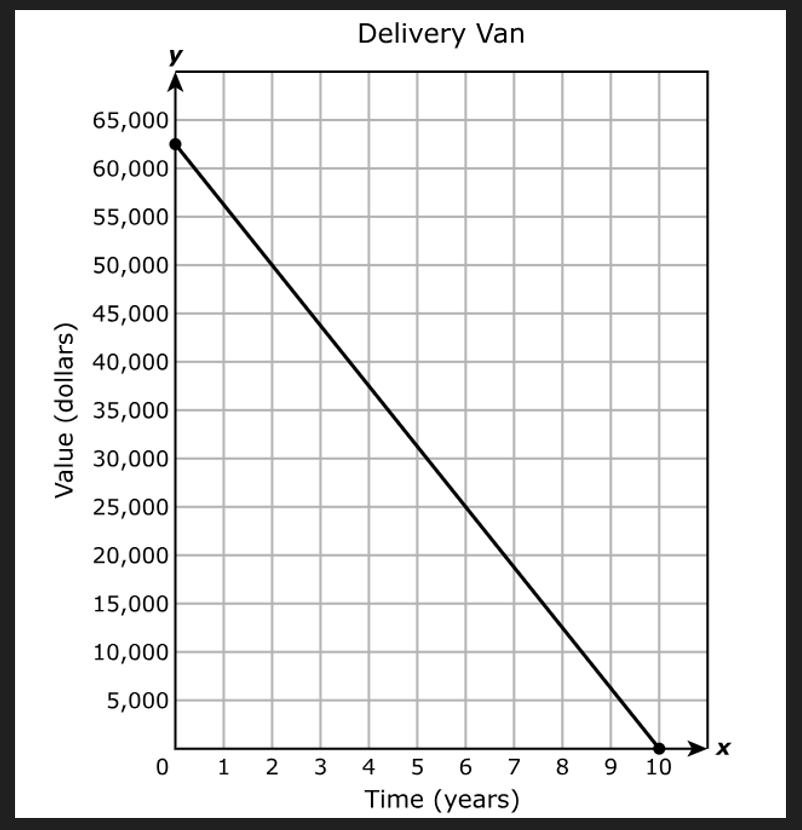
Which inequality best represents the domain of the function for this situation?
$ A.\;\; 0 \le y \le 10 \\[3ex] B.\;\; 0 \le x \le 10 \\[3ex] C.\;\; 0 \le y \le 62,500 \\[3ex] D.\;\; 0 \le x \le 62,500 \\[3ex] $
The domain is the set of all the input values, x for which the function has an output.
The closed circle represents a closed interval. It shows that the endpoint is included.
On the graph:
The closed circle on the left hand side is at x = 0
The closed circle on the right hand side is at x = 10
The interval notation is: [0, 10]
The set notation is: Domain = $\{x: 0 \le x \le 10 \}$

B.
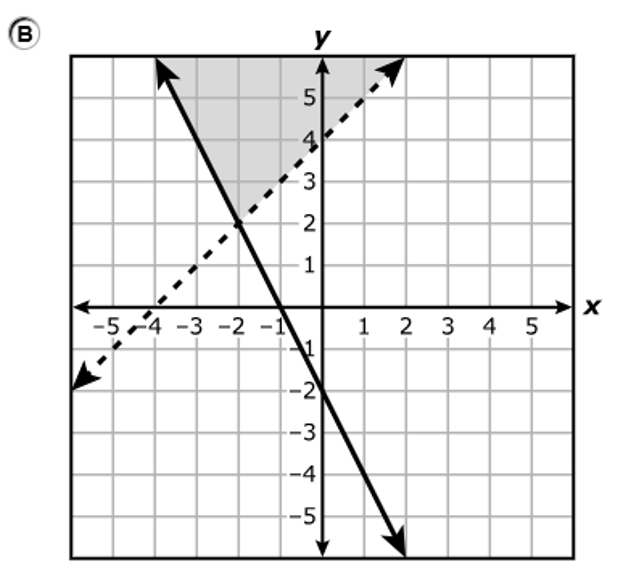
C.
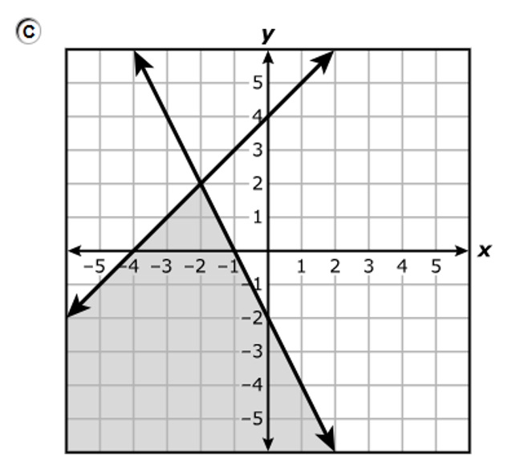
D.
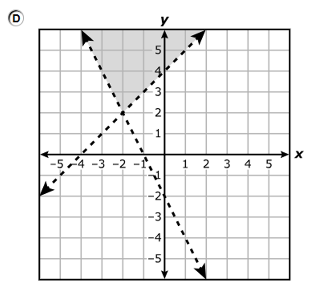
$ \underline{\text{Inequality 1}} \\[3ex] \text{This is a dashed line because of the absence of the equality sign} \\[3ex] y \lt x + 4 \\[3ex] \text{When } x = 0 \\[3ex] y \lt 0 + 4 \\[3ex] y \lt 4 \\[3ex] \text{When } y = 0 \\[3ex] 0 \lt x + 4 \\[3ex] x + 4 \gt 0 \\[3ex] x \gt 0 - 4 \\[3ex] x \gt -4 \\[5ex] \underline{\text{Inequality 2}} \\[3ex] \text{This is a solid line because of the presence of the equality sign} \\[3ex] y \le -2x - 2 \\[3ex] \text{When } x = 0 \\[3ex] y \le -2(0) - 2 \\[3ex] y \le 0 - 2 \\[3ex] y \le -2 \\[3ex] \text{When } y = 0 \\[3ex] 0 \le -2x - 2 \\[3ex] -2x - 2 \ge 0 \\[3ex] -2x \ge 0 + 2 \\[3ex] -2x \ge 2 \\[3ex] x \le \dfrac{2}{-2} \\[5ex] x \le -1 \\[3ex] $ To graph a system of inequalities, each inequality is shaded and the solution is where the shaded regions overlap.
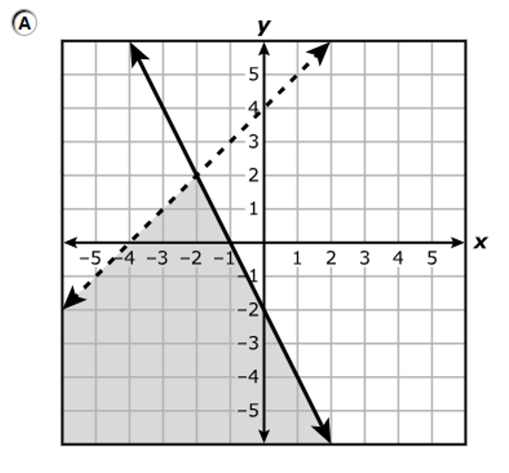
Choose the correct answer from each drop-down menu to complete the sentence.
The graph of f is translated 6 units and 2 units to create the graph of function g.
$ f(x) = x^2 \\[3ex] g(x) = f(x - 6) + 2 \\[3ex] = (x - 6)^2 ...\text{Horizontal Shift 6 units right} \\[3ex] + 2 ...\text{Vertical Shift 2 units up} \\[3ex] $
$ A.\;\; 100 \hspace{2em} 210 \hspace{2em} 441 \hspace{2em} 926.1 \\[3ex] B.\;\; 100 \hspace{2em} 109 \hspace{2em} 118.9 \hspace{2em} 129.79 \\[3ex] C.\;\; 100 \hspace{2em} 101.1 \hspace{2em} 102.2 \hspace{2em} 103.3 \\[3ex] D.\;\; 100 \hspace{2em} 110 \hspace{2em} 121 \hspace{2em} 133.1 \\[3ex] $
$ a_n = 1.1a_{(n - 1)} \\[3ex] a_1 = 100 \\[5ex] a_2 = 1.1 * a_{2 - 1} \\[3ex] a_2 = 1.1 * a_1 \\[3ex] a_2 = 1.1 * 100 \\[3ex] a_2 = 110 \\[3ex] $ We now know the correct answer is Option D.
But if we want to continue, we can.
$ a_3 = 1.1 * a_2 \\[3ex] a_3 = 1.1 * 110 \\[3ex] a_3 = 121 \\[5ex] a_4 = 1.1 * a_3 \\[3ex] a_4 = 1.1 * 121 \\[3ex] a_4 = 133.1 $
What is the equation for f in standard form?
$ A.\;\; f(x) = -4x^2 + 40x - 101 \\[3ex] B.\;\; f(x) = 4x^2 - 40x + 99 \\[3ex] C.\;\; f(x) = -4x^2 - 101 \\[3ex] D.\;\; f(x) = 4x^2 + 99 \\[3ex] $
$ \underline{\text{Equation of a Quadratic Function in Vertex Form}} \\[3ex] f(x) = a(x - h)^2 + k ...\text{where } (h, k) \text{ is the vertex} \\[3ex] (h, k) = (5, -1) \\[3ex] h = 5 \\[3ex] k = -1 \\[3ex] \implies \\[3ex] f(x) = a(x - 5)^2 + (-1) \\[3ex] f(x) = a(x - 5)^2 - 1 \\[3ex] \text{Passes through the point } (3, -17) \\[3ex] x = 3 \\[3ex] y = f(x) = -17 \\[3ex] \implies \\[3ex] -17 = a(3 - 5)^2 - 1 \\[3ex] -17 = a(-2)^2 - 1 \\[3ex] -17 + 1 = 4a \\[3ex] 4a = -16 \\[3ex] a = -\dfrac{16}{4} \\[5ex] a = -4 \\[3ex] \implies \\[3ex] f(x) = -4(x - 5)^2 - 1 \\[5ex] \underline{\text{Equation of a Quadratic Function in Standard Form}} \\[3ex] f(x) = -4(x - 5)(x - 5) - 1 \\[3ex] f(x) = -4(x^2 - 5x - 5x + 25) - 1 \\[3ex] f(x) = -4(x^2 - 10x + 25) - 1 \\[3ex] f(x) = -4x^2 + 40x - 100 - 1 \\[3ex] f(x) = -4x^2 + 40x - 101 $
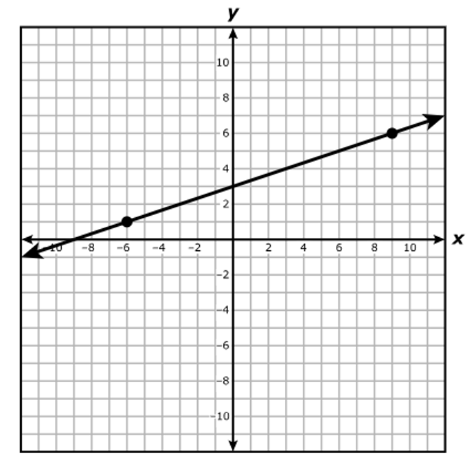
Which equation is best represented by this graph?
$ A.\;\; y = 3(x + 1) \\[3ex] B.\;\; y = 3(x + 3) \\[3ex] C.\;\; y = \dfrac{1}{3}(x + 9) \\[5ex] D.\;\; y = \dfrac{1}{3}(x + 3) \\[5ex] $
$ \text{Point 1: } (-6, 1) \\[3ex] x_1 = -6 \\[3ex] y_1 = 1 \\[5ex] \text{Point 2: } (9, 6) \\[3ex] x_2 = 9 \\[3ex] y_2 = 6 \\[5ex] \text{Slope, } m = \dfrac{y_2 - y_1}{x_2 - x_1} \\[5ex] m = \dfrac{6 - 1}{9 - (-6)} \\[5ex] m = \dfrac{5}{15} \\[5ex] m = \dfrac{1}{3} \\[5ex] \text{Point–Slope Form} \\[3ex] y - y_1 = m(x - x_1) \\[3ex] y - 1 = \dfrac{1}{3}[x - (-6)] \\[5ex] y - 1 = \dfrac{1}{3}(x + 6) \\[5ex] \text{Simplify} \\[3ex] y - 1 = \dfrac{1}{3}x + 2 \\[5ex] y = \dfrac{1}{3}x + 2 + 1 \\[5ex] y = \dfrac{1}{3}x + 3 \\[5ex] y = \dfrac{1}{3}(x + 9) $
The table shows the height of the ball in inches, y, after it has bounced x times.
| Number of Bounces, x | Height of Ball, y (inches) |
|---|---|
| 0 | 72 |
| 1 | 43.2 |
| 2 | 25.9 |
| 3 | 15.6 |
| 4 | 9.3 |
Which exponential function best models the data?
$ A.\;\; y = 72(0.6)^x \\[3ex] B.\;\; y = 43.2(0.6)^x \\[3ex] C.\;\; y = 72(0.4)^x \\[3ex] D.\;\; y = 43.2(0.4)^x \\[3ex] $
$ \underline{\text{Exponential Function}} \\[3ex] y = ab^x \\[3ex] a = \text{initial value} \\[3ex] b = \text{base} \\[5ex] \text{Point 1: } (0, 72) \\[3ex] x = 0 \\[3ex] y = 72 \\[3ex] 72 = a * b^{0} \\[3ex] 72 = a * 1 \\[3ex] a = 72 \\[5ex] \text{Point 2: } (1, 43.2) \\[3ex] x = 1 \\[3ex] y = 43.2 \\[3ex] 43.2 = a * b^{1} \\[3ex] 43.2 = 72 * b \\[3ex] b = \dfrac{43.2}{72} \\[5ex] b = 0.6 \\[5ex] \implies \\[3ex] y = 72(0.6)^x $
Select TWO correct answers.
$ 6x^2 + 3x - 9 \\[3ex] 3(2x^2 + x - 3)...\text{Option 2} \\[3ex] ............................................. \\[3ex] 2x^2 + x - 3 \\[3ex] 2x^2 * - 3 = -6x^2 \\[3ex] \text{Factors are: } 3x \text{ and } -2x \\[3ex] \implies \\[3ex] 2x^2 - 2x + 3x - 3 \\[3ex] 2x(x - 1) + 3(x - 1) \\[3ex] (x - 1)(2x + 3) \\[3ex] ............................................. \\[3ex] 3(2x + 3)(x - 1)...\text{Option 4} $
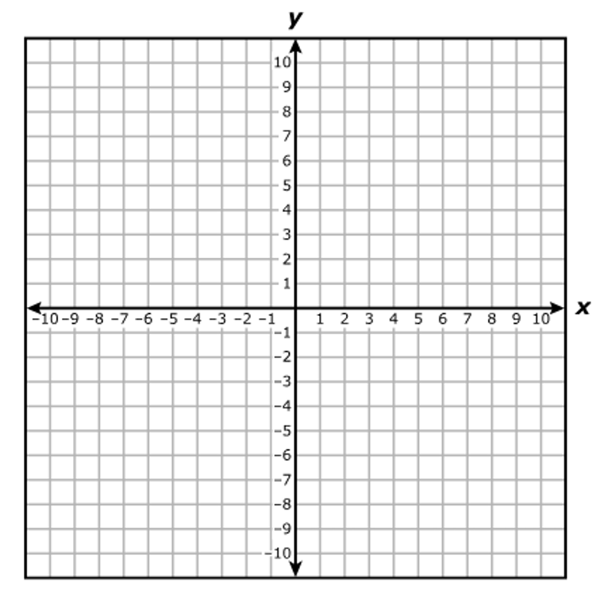
Which statement is true about this system of equations?
A. There are infinitely many solutions.
B. The only solution is (–8, 5).
C. The only solution is (5, –8).
D. There is no solution.
$ x + y = -8...eqn.(1) \\[3ex] 2x + 2y = 10...eqn.(2) \\[3ex] \text{From } eqn.(2) \\[3ex] 2(x + y) = 10 \\[3ex] x + y = \dfrac{10}{2} \\[5ex] x + y = 5 ...\text{modified form of } eqn.(2) \\[3ex] $ We notice that eqn.(1) and eqn.(2) are the same on the Left Hand Side (LHS) but give different results on the Right Hand Side (RHS).
This is an inconsistent system.
Hence, the system has no solution.
$ \dfrac{v - 6}{5} = \dfrac{v + 10}{2} \\[5ex] \text{Cross Multiply} \\[3ex] 2(v - 6) = 5(v + 10) \\[3ex] 2v - 12 = 5v + 50 \\[3ex] -12 - 50 = 5v - 2v \\[3ex] -62 = 3v \\[3ex] 3v = -62 \\[3ex] v = -\dfrac{62}{3} $
Each year the bank will add interest to te account, which will increase the account's value by 0.5%.
Which function can be used to determine the amount, A, in the account after t years?
$ A.\;\; A(t) = 2,500(0.50)^t \\[3ex] B.\;\; A(t) = 2,500(1.005)^t \\[3ex] C.\;\; A(t) = 2,500 + 0.50t \\[3ex] D.\;\; A(t) = 2,500(1.005)t \\[3ex] $
Each year the bank will add interest to te account, which will increase the account's value by 0.5%.
This implies that the interest is being compounded.
We can solve the question using at least three approaches.
Use any approach you prefer.
$ 0.5\% = \dfrac{0.5}{100} = 0.005 \\[5ex] \underline{\text{1st Approach: Exponential Growth Function}} \\[3ex] A = a(1 + r)^t \\[3ex] a = \text{initial value} = \$2500 \\[3ex] r = \text{growth rate} = 0.5\% = 0.005 \\[5ex] \implies \\[3ex] A = 2500(1 + 0.005)^t \\[3ex] A = 2500(1.005)^t \\[5ex] \underline{\text{2nd Approach: Exponential Function}} \\[3ex] A = ab^t \\[3ex] a = \text{initial value} = \$2500 \\[3ex] b = \text{base} \\[5ex] \text{Point 1: } (0, 2500) \\[3ex] t = 0 \\[3ex] A = 2500 \\[3ex] 2500 = a * b^{0} \\[3ex] 2500 = a * 1 \\[3ex] a = 2500 \\[5ex] \text{After 1 year} \\[3ex] \text{Interest, } I = 0.005 * 2500 = 12.5 \\[3ex] A = 2500 + 12.5 = 2512.5 \\[5ex] \text{Point 2: } (1, 2512.5) \\[3ex] t = 1 \\[3ex] A = 2512.5 \\[3ex] 2512.5 = a * b^{1} \\[3ex] 2512.5 = 2500 * b \\[3ex] b = \dfrac{2512.5}{2500} \\[5ex] b = 1.005 \\[5ex] \implies \\[3ex] A = 2500(1.005)^t \\[5ex] \underline{\text{3rd Approach: Compound Interest Formula}} \\[3ex] A = P\left(1 + \dfrac{r}{m}\right)^{mt} \\[5ex] \text{Where} \\[3ex] \text{Principal, } P = \$2500 \\[3ex] \text{Time} = t \\[3ex] \text{Amount} = A \\[3ex] \text{Interest rate, } r = 0.5\% = 0.005 \\[3ex] \text{Number of compounding periods per year, } m = 1 \text{ (Compounded annually)} \\[3ex] A = 2500\left(1 + \dfrac{0.005}{1}\right)^{1 * t} \\[5ex] A = 2500(1 + 0.005)^t \\[3ex] A = 2500(1.005)^t $
$ A.\;\; \dfrac{1}{36y^7} \\[5ex] B.\;\; \dfrac{1}{36y^6} \\[5ex] C.\;\; \dfrac{1}{12y^7} \\[5ex] D.\;\; \dfrac{1}{12y^6} \\[5ex] $
$ \dfrac{(6y^3)^{-2}}{y} \\[5ex] \dfrac{6^{-2} * y^{3 * -2}}{y}...Law\;5 Exp \\[5ex] 6^{-2} * y^{-6} * \dfrac{1}{y} \\[5ex] \dfrac{1}{6^2} * \dfrac{1}{y^6} * \dfrac{1}{y^1} ...Law\;6 Exp \\[5ex] \dfrac{1}{36} * \dfrac{1}{y^{6 + 1}} ...\text{Law 1 Exp} \\[5ex] \dfrac{1}{36 * y^7} \\[5ex] \dfrac{1}{36y^7} $
Choose the correct answer from each drop-down menu to complete the sentences.
The initial population of the town in 2010 was .
The population is at a rate of per year.
$ \underline{\text{Exponential Function}} \\[3ex] y = ab^x \\[3ex] a = \text{initial value} \\[3ex] b = \text{base} \\[5ex] \underline{\text{Exponential Decay Function}} \\[3ex] \text{This is because } 0.85 \lt 1 \\[3ex] y = a(1 - r)^x \\[3ex] r = \text{decay rate} \\[5ex] \underline{\text{Compare}} \\[3ex] P(t) = 26,080(0.85)^t \\[3ex] \text{initial population} = 26080 \text{ people} \\[3ex] 1 - r = 0.85 \\[3ex] 1 - 0.85 = r \\[3ex] r = 0.15 \\[3ex] r = 0.15 * 100 = 15\% \\[3ex] $ The population is decreasing at a rate of 15% per year.
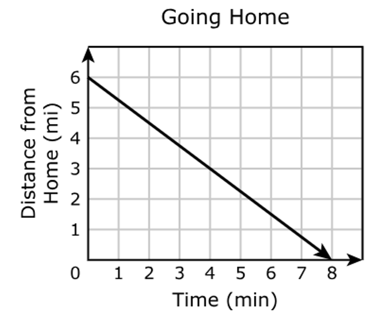
Based on the graph, what is the rate of change of the student's distance from home in miles with respect to the time in minutes?
A. Decrease of $\dfrac{3}{4}$ mi per minute.
B. Decrease of $\dfrac{4}{3}$ mi per minute.
C. Increase of $\dfrac{3}{4}$ mi per minute.
D. Increase of $\dfrac{4}{3}$ mi per minute.
The rate of change of the student's distance from home in miles with respect to the time in minutes is the slope of the graph.
$ \text{Point 1: } (0, 6) \\[3ex] x_1 = 0 \\[3ex] y_1 = 6 \\[5ex] \text{Point 2: } (8, 0) \\[3ex] x_2 = 8 \\[3ex] y_2 = 0 \\[5ex] \text{Slope, } m = \dfrac{y_2 - y_1}{x_2 - x_1} \\[5ex] m = \dfrac{0 - 6}{8 - 0} \\[5ex] m = -\dfrac{6}{8} \\[5ex] m = -\dfrac{3}{4} \\[5ex] $ This is a decrease of $\dfrac{3}{4}$ miles per minute.


$ A.\;\; 12\sqrt{3} \\[3ex] B.\;\; 35\sqrt{3} \\[3ex] C.\;\; 10\sqrt{5} \\[3ex] D.\;\; 21\sqrt{5} \\[3ex] $
$ 7\sqrt{45} \\[3ex] 7 * \sqrt{45} \\[3ex] 7 * \sqrt{ 9 * 5} \\[3ex] 7 * \sqrt{9} * \sqrt{5} \\[3ex] 7 * 3 * \sqrt{5} \\[3ex] 21\sqrt{5} $
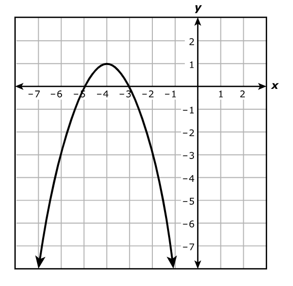
Which function is best represented by the graph of h?
$ A.\;\; h(x) = -x^2 - 8x - 15 \\[3ex] B.\;\; h(x) = -x^2 + 8x - 15 \\[3ex] C.\;\; h(x) = x^2 + 8x + 15 \\[3ex] D.\;\; h(x) = x^2 - 8x + 15 \\[3ex] $
We can solve the question using at least two approaches.
Use any approach you prefer.
$ a = \text{leading coefficient} \\[5ex] \underline{\text{1st Approach: Equation of a Quadratic Function in Factored Form}} \\[3ex] f(x) = a(x - \alpha)(x - \beta) \\[3ex] \alpha, \beta = \text{zeros of the function} \\[3ex] \alpha = -5 \\[3ex] \beta = -3 \\[5ex] \implies \\[3ex] h(x) = a[x - (-5)][x - (-3)] \\[3ex] h(x) = a(x + 5)(x + 3) \\[5ex] \text{Passes through the point (vertex) } (-4, 1) \\[3ex] x = -4 \\[3ex] h(x) = 1 \\[3ex] \implies \\[3ex] 1 = a(-4 + 5)(-4 + 3) \\[3ex] 1 = a(1)(-1) \\[3ex] -a = 1 \\[3ex] a = \dfrac{1}{-1} = -1 \\[5ex] \implies \\[3ex] h(x) = -1(x + 5)(x + 3) \\[3ex] h(x) = -1(x^2 + 3x + 5x + 15) \\[3ex] h(x) = -1(x^2 + 8x + 15) \\[3ex] h(x) = -x^2 - 8x - 15 \\[5ex] \underline{\text{2nd Approach: Equation of a Quadratic Function in Vertex Form}} \\[3ex] h(x) = a(x - h)^2 + k ...\text{where } (h, k) \text{ is the vertex} \\[3ex] (h, k) = (-4, 1) \\[3ex] h = -4 \\[3ex] k = 1 \\[3ex] \implies \\[3ex] h(x) = a[x - (-4)]^2 + 1 \\[3ex] h(x) = a(x + 4)^2 + 1 \\[5ex] \text{Passes through the point: } (-3, 0) \\[3ex] x = -3 \\[3ex] h(x) = 0 \\[3ex] \implies \\[3ex] 0 = a(-3 + 4)^2 + 1 \\[3ex] 0 = a(1)^2 + 1 \\[3ex] 0 = a(1) + 1 \\[3ex] a + 1 = 0 \\[3ex] a = -1 \\[3ex] \implies \\[3ex] h(x) = -1(x + 4)^2 + 1 \\[3ex] h(x) = -1(x + 4)(x + 4) + 1 \\[3ex] h(x) = -1(x^2 + 4x + 4x + 16) + 1 \\[3ex] h(x) = -1(x^2 + 8x + 16) + 1 \\[3ex] h(x) = -x^2 - 8x - 16 + 1 \\[3ex] h(x) = -x^2 - 8x - 15 $
When the value of x is 4, the value of y is –12.
What is the constant of variation when y is a function of x, and what is the value of y when x = –6?
Move the correct answer to each box.
Each answer may be used more than once.
Not all answers will be used.
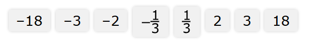
The constant of variation is
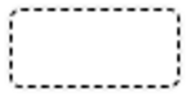
The value of y when x = –6 is
$ y \propto x \\[3ex] y = kx ...k\text{ is the constant of variation} \\[3ex] \text{When } x = 4, y = -12 \\[3ex] k = ? \\[3ex] -12 = k * 4 \\[3ex] 4k = -12 \\[3ex] k = -\dfrac{12}{4} \\[5ex] k = -3 \\[3ex] \implies \\[3ex] y = -3x \\[5ex] \text{When } x = -6, y = ? \\[3ex] y = -3(-6) \\[3ex] y = 18 $
A.
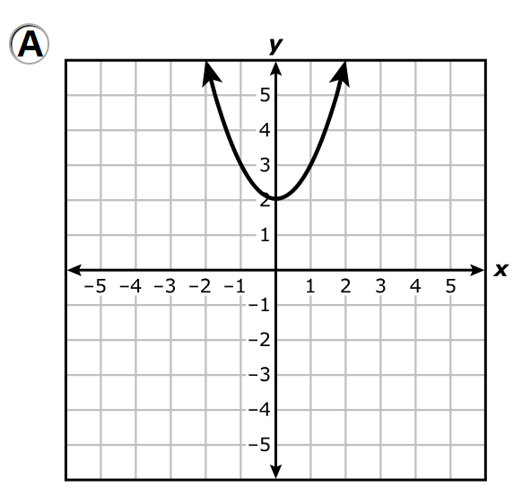
B.
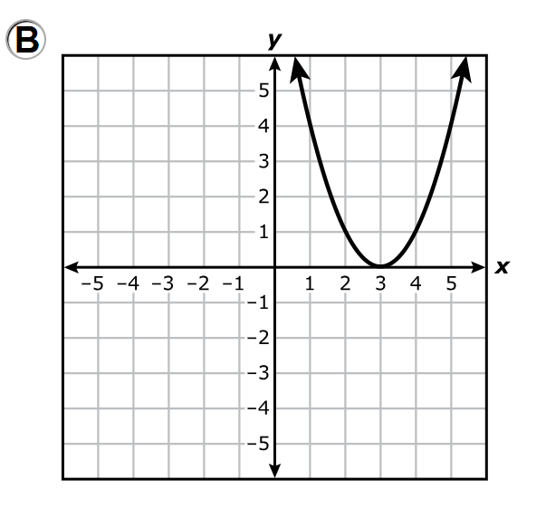
C.
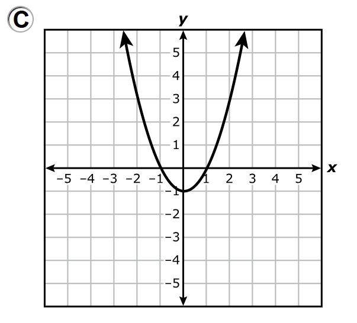
D.
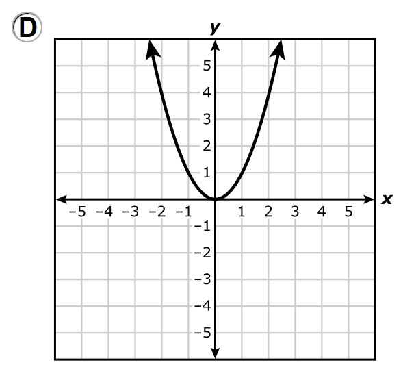
The real zeros of a quadratic function are the x-values where the graph intersects (crosses or touches) the x-axis.
The only graph that does not intersect the x-axis is the graph in Option A.
The function shown models the amount of money in the account in dollars after t years. $$ A(t) = 1,550(1.02)^t $$ Which statement best interprets one value in the function?
A. The initial deposit in the investment account was $1,581
B. The amount of money in the investment account increases 102% each year.
C. The initial deposit in the investment account was $1,550
D. The amount of money in the investment account decreases 2% each year.
$ \underline{\text{Exponential Function}} \\[3ex] A(t) = 1,550(1.02)^t \\[3ex] \text{When } t = 0 \\[3ex] A(0) = 1,550(1.02)^0 \\[3ex] A(0) = 1550 * 1 \\[3ex] A(0) = \$1550 \\[3ex] $ The initial deposit in the investment account was $1,550
The correct answer is Option C.
Student: Mr. C
Could you analyze the other options?
Teacher: Sure, let's do it.
$ \text{When } t = 1 \\[3ex] A(0) = 1,550(1.02)^1 \\[3ex] A(0) = 1550 * 1.02 \\[3ex] A(0) = \$1581 \\[3ex] $ The amount in the investment account after 1 year is $1,581
$ \underline{\text{Exponential Growth Function}} \\[3ex] \text{This is because } 1.02 \gt 1 \\[3ex] A(t) = P(1 + r)^t \\[3ex] P = \text{initial deposit} \\[3ex] r = \text{interest rate or the growth rate} \\[3ex] \text{Compare to } A(t) = 1,550(1.02)^t \\[3ex] 1 + r = 1.02 \\[3ex] r = 1.02 - 1 \\[3ex] r = 0.02 = 2\% \\[3ex] $ The amount of money in the investment account increases by 2% each year.
$ A.\;\; 4x^7y^6 \\[3ex] B.\;\; 24x^7y^6 \\[3ex] C.\;\; 4x^{12}y^8 \\[3ex] D.\;\; 24x^{12}y^8 \\[3ex] $
$ \dfrac{1}{3}(6x^2y)^2(2x^3y^4) \\[5ex] \text{DISSOCIATE} \\[3ex] \dfrac{1}{3} * 6^2 * x^{2 * 2} * y^2 * 2 * x^3 * y^4...\text{Law 5 Exp} \\[5ex] \text{SOLVE} \\[3ex] \dfrac{1}{3} * 36 * x^4 * y^2 * 2 * x^3 * y^4 \\[5ex] \dfrac{1}{3} * 36 * 2 * x^4 * x^3 * y^2 * y^4 \\[5ex] 24 * x^{4 + 3} * y^{2 + 4}...\text{Law 1 Exp} \\[4ex] 24 * x^7 * y^6 \\[4ex] \text{ASSOCIATE} \\[3ex] 24x^7y^6 $
Which value represents the rate of change of y with respect to x for the equation?
$ A.\;\; -\dfrac{8}{5} \\[5ex] B.\;\; -\dfrac{5}{8} \\[5ex] C.\;\; \dfrac{5}{8} \\[5ex] D.\;\; \dfrac{8}{5} \\[5ex] $
The rate of change of y with respect to x for the equation $5x - 8y = 40$ is the slope of the equation.
Express the equation in Slope–Intercept Form
Find the slope.
$ \underline{\text{Slope–Intercept Form of the Equation of a Straight Line}} \\[3ex] y = mx + b ...\text{where } m = slope \\[5ex] 5x - 8y = 40 \\[3ex] 5x - 40 = 8y \\[3ex] 8y = 5x - 40 \\[3ex] y = \dfrac{5x - 40}{8} \\[5ex] y = \dfrac{5}{8}x - \dfrac{40}{8} \\[5ex] m = \dfrac{5}{8} $
Based on this information, create an equation that can be used to find the nth term of the sequence, $a_n$
Move the correct answer to each box.
Each answer may be used more than once.
Not all answers will be used.
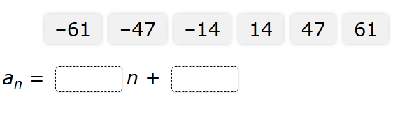
$ 47, 33, 19, 5, -9 \\[3ex] 33 - 47 = -14 \\[3ex] 19 - 33 = -14 \\[3ex] 5 - 19 = -14 \\[3ex] -9 - 5 = -14 \\[3ex] $ This is an Arithmetic Sequence because the common difference is –14
We can solve the question using at least two approaches.
Use any approach you prefer.
$ \underline{\text{1st Approach: nth term of an Arithmetic Sequence}} \\[3ex] AS_n = a + d(n - 1) \\[3ex] AS_n = \text{nth term} = a_n \\[3ex] a = \text{first term} = 47 \\[3ex] d = \text{common difference} = -14 \\[3ex] n = \text{number of terms} \\[3ex] \implies \\[3ex] a_n = 47 + -14(n - 1) \\[3ex] a_n = 47 - 14(n - 1) \\[3ex] a_n = 47 - 14n + 14 \\[3ex] a_n = -14n + 61 \\[3ex] $ For the 2nd Approach, let us represent the information as a linear function.
An Arithmetic Sequence is also known as a Linear Sequence.
| x = $n$ | y = $a_n$ |
|---|---|
| 1 | 47 |
| 2 | 33 |
| 3 | 19 |
| 4 | 5 |
| 5 | –9 |
$ \underline{\text{2nd Approach: Linear Function in Slope–Intercept Form}} \\[3ex] \text{Point 1: } (1, 47) \\[3ex] x_1 = 1 \\[3ex] y_1 = 47 \\[5ex] \text{Point 2: } (2, 33) \\[3ex] x_2 = 2 \\[3ex] y_2 = 33 \\[5ex] \text{Slope, } m = \dfrac{y_2 - y_1}{x_2 - x_1} \\[5ex] m = \dfrac{33 - 47}{2 - 1} \\[5ex] m = \dfrac{-14}{1} \\[5ex] m = -14 \\[5ex] \text{Point–Slope Form} \\[3ex] y - y_1 = m(x - x_1) \\[3ex] y - 47 = -14(x - 1) \\[5ex] \text{Slope–Intercept Form} \\[3ex] y - 47 = -14x + 14 \\[3ex] y = -14x + 14 + 47 \\[3ex] y = -14x + 61 \\[3ex] a_n = -14n + 61 $
A. All real numbers that are greater than or equal to 0 and less than or equal to 30
B. All real numbers that are greater than or equal to 0 and less than or equal to 60
C. All real numbers that are greater than or equal to 900
D. All real numbers that are less than or equal to 900
The function is a quadratic function.
Let us use the Vertex Method.
The y-coordinate of the vertex is the maximum or the minimum value of the function.
This value helps us determine the range of the function.
Another important information we need for this question is the leading coefficient.
If the leading coefficient is negative, the quadratic function has a maximum value. It opens downwards.
If the leading coefficient is positive, the quadratic function has a minimum value. It opens upwards.
$ f(x) = -x^2 + 60x \\[3ex] \text{Compare to the standard form: } ax^2 + bx + c \\[3ex] \text{The leading coefficient, } a = -1 \\[3ex] \text{Parabola opens downwards, it has a maximum value.} \\[3ex] b = 60 \\[3ex] x-coordinate \text{ of the vertex} = -\dfrac{b}{2a} \\[5ex] = -\dfrac{60}{2(-1)} \\[5ex] = \dfrac{-60}{-2} \\[5ex] = 30 \\[5ex] \text{maximum value of } y = y-coordinate \text{ of the vertex} = f(30) \\[3ex] = -(30)^2 + 60(30) \\[3ex] \\[3ex] = -900 + 1800 \\[3ex] = 900 \\[3ex] \implies \\[3ex] \text{Range} = \{y: y \le 900\} \\[3ex] $ The range is all real numbers that are less than or equal to 900.
The counselor then compared the number of hours each student worked and the student's overall grade average.
The table shows the data.
| Hours Worked | Overall Grade Average |
|---|---|
| 15 | 86 |
| 30 | 72 |
| 27 | 77 |
| 25 | 83 |
| 16 | 87 |
| 20 | 90 |
| 12 | 94 |
Based on the correlation coefficient for the data, what type of linear association exists between hours worked and overall grade average?
A. Strong negative
B. Weak negative
C. Weak positive
D. Strong positive
Assume:
y = overall grade average
x = number of hours worked
Just as y depends on x,
The overall grade average depends on the number of hours worked.
The question we should ask ourselves is this:
How does y change when x changes?
How does the overall grade average change when the number of hours worked changes?
Let us observe the pattern by arranging the values of x in ascending order and including the corresponding values of y
The modified table is:
| Hours Worked, x | Overall Grade Average, y |
|---|---|
| 12 | 94 |
| 15 | 86 |
| 16 | 87 |
| 20 | 90 |
| 25 | 83 |
| 27 | 77 |
| 30 | 72 |
As we notice:
As the number of hours worked increases, the overall grade average decreases, then increases slightly, then decreases.
Generally speaking, as the number of hours worked increases, the overall grade average decreases.
This is a Strong Negative association.
We note that these points (16, 87) to (20, 90) is a small increase, however, the overall pattern is strongly negative.
Correlation looks at the overall trend, not whether every single point moves perfectly downward.
One or two slight deviations do not change the overall trend.
A. The y-intercept is (0, 16).
B. The graph is decreasing for all values of x.
C. The x-intercept is (0.5, 0).
D. The graph has a horizontal asymptote at y = 0.
Let us analyze each option to convince you that the correct answer is Option C.
$ \underline{\text{Option A.}} \\[3ex] y = 16(0.5)^x \\[3ex] \text{When } x = 0 \\[3ex] y = 16(0.5)^0 \\[3ex] y = 16(1) \\[3ex] y = 16 \\[3ex] y-intercept = (0, 16) \\[3ex] TRUE \\[5ex] \underline{\text{Option B.}} \\[3ex] y = 16(0.5)^x \\[3ex] \text{Compare to: } y = ab^x \\[3ex] b = 0.5 \\[3ex] $ 0.5 < 1
This implies that the exponential function is an exponential decay function \\[3ex] The graph is decreasing for all values of x.
TRUE
$ \underline{\text{Option C.}} \\[3ex] y = 16(0.5)^x \\[3ex] \text{When } y = 0 \\[3ex] 0 = 16(0.5)^x \\[3ex] 16(0.5)^x = 0 \\[3ex] 0.5^x = \dfrac{0}{16} \\[5ex] 0.5^x = 0 \\[3ex] \log 0.5^x = \log 0 \\[3ex] x\log 0.5 = \log 0 \\[3ex] $ But, $\log 0$ does not exist.
Hence, we cannot find any value of x that will make y to be 0.
There is no x-intercept.
Generally speaking, a basic exponential function does not have an x-intercept.
Unless the function is shifted downward (transformed exponential function), a basic exponential function does not cross the x‑axis.
So, saying that the x-intercept is (0.5, 0) is NOT TRUE.
Option D.
The horizontal asymptote is: y = 0
This is because the graph approaches the x-axis as the input increases without bound.
The function keeps decreasing (approaches but does not touch the x-axis) as the input increases.
TRUE.
Graph the solution set of the linear inequality in the coordinate plane.
First, select the Graph button to graph the line and choose the line style.
To graph a line, select two points in the coordinate plane. A line will connect the points.
Then select the Solution Set button to select the desired region.
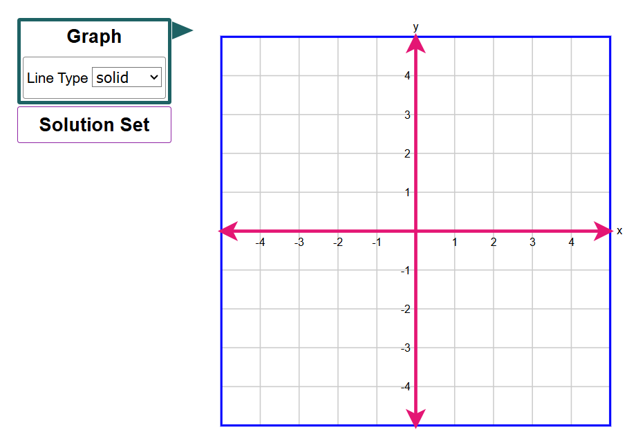
Because the inequality contains an equal sign, the line will be a solid line.
$ y \ge \dfrac{1}{2}x - 2 \\[5ex] \text{When } x = 0 \\[3ex] y \ge \dfrac{1}{2}(0) - 2 \\[5ex] y \ge 0 - 2 \\[3ex] y \ge -2 \\[5ex] \text{When } x = 2 \\[3ex] y \ge \dfrac{1}{2}(2) - 2 \\[5ex] y \ge 1 - 2 \\[3ex] y \ge -1 \\[5ex] $ Student: Mr. C, wait a minute.
Why did you not do when $x = 1$?
Is there any reason for using $x = 2$?
Teacher: Good observation.
If we used 1, we would end up with a fraction.
Fractions are not allowed in the graph that we are given.
Hence, it is necessary that we use a value of $x$ that will give an integer value of $y$ within the domain [-4, 4]
What other values could we have used?
Student: 4, 6, 8, 10, 12, –2, –4
–2
Teacher: There you go...
The graph of the inequality is
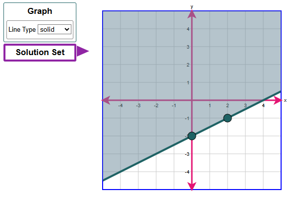
Each cup of coffee costs the same amount, and each doughout costs the same amount.
The first customer paid $4.90 for 1 cup of coffee and 2 doughouts.
The second customer paid $8.60 for 2 cups of coffee and 3 doughouts.
What is the cost of 1 cup of coffee?
$ A.\;\; \$2.50 \\[3ex] B.\;\; \$1.20 \\[3ex] C.\;\; \$4.90 \\[3ex] D.\;\; \$3.70 \\[3ex] $
Let the:
cost of 1 cup of coffee = c
cost of 1 doughout = d
$4.90 for 1 cup of coffee and 2 doughouts implies
c + 2d = $4.90 ...equation (1)
$8.60 for 2 cups of coffee and 3 doughouts implies
2c + 3d = $8.60 ...equation (2)
Based on the question, we only need to find c
Let us use the Elimination Method.
To find c, eliminate d
$ c + 2d = 4.9...eqn.(1) \\[3ex] 2c + 3d = 8.6...eqn.(2) \\[5ex] eqn.(1) * 3 \implies 3(c + 2d) = 3(4.9) \\[3ex] 3c + 6d = 14.7...eqn.(3) \\[5ex] eqn.(2) * 2 \implies 2(2c + 3d) = 2(8.6) \\[3ex] 4c + 6d = 17.2 ...eqn.(4) \\[5ex] eqn.(4) - eqn.(3) \implies \\[3ex] (4c + 6d) - (3c + 6d) = 17.2 - 14.7 \\[3ex] 4c + 6d - 3c - 6d = 2.5 \\[3ex] c = 2.5 \\[3ex] $ The cost of a cup of coffee is $2.50
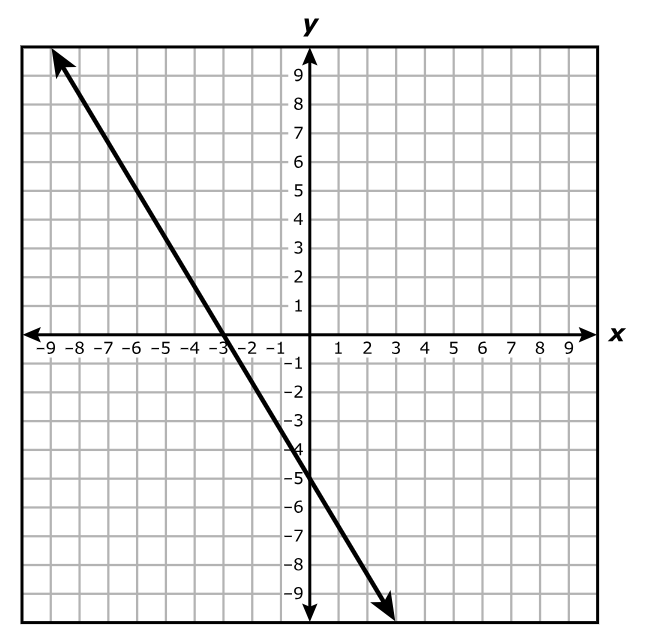
Which function best represents the relationship shown in the graph?
$ A.\;\; y = -\dfrac{3}{5}x - 5 \\[5ex] B.\;\; y = -\dfrac{3}{5}x - 3 \\[5ex] C.\;\; y = -\dfrac{5}{3}x - 5 \\[5ex] D.\;\; y = -\dfrac{5}{3}x - 3 \\[5ex] $
$ \text{Point 1: } (-3, 0) \\[3ex] x_1 = -3 \\[3ex] y_1 = 0 \\[5ex] \text{Point 2: } (0, -5) \\[3ex] x_2 = 0 \\[3ex] y_2 = -5 \\[5ex] \text{Slope, } m = \dfrac{y_2 - y_1}{x_2 - x_1} \\[5ex] m = \dfrac{-5 - 0}{0 - (-3)} \\[5ex] m = -\dfrac{5}{3} \\[5ex] \text{Point–Slope Form} \\[3ex] y - y_1 = m(x - x_1) \\[3ex] y - 0 = -\dfrac{5}{3}[x - (-3)] \\[5ex] y = -\dfrac{5}{3}(x + 3) \\[5ex] \text{Slope–Intercept Form} \\[3ex] y = mx + b ...\text{where } b \text{ is the y-intercept} \\[3ex] y = -\dfrac{5}{3}x - 5 $
The system of equations graphed on the grid represents this situation.
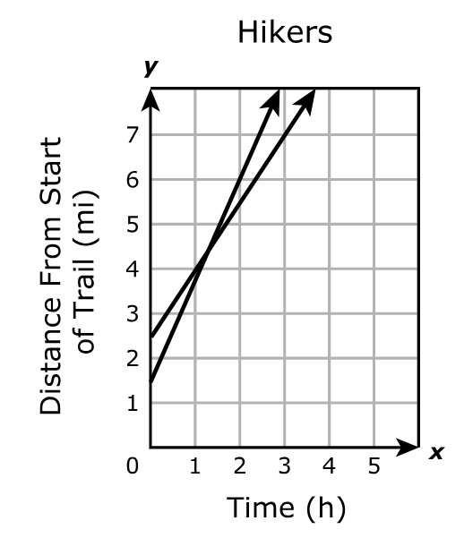
Which value best represents the number of hours the two hikers have been hiking when they are the same distance from the start of the trail?
$ A.\;\; 2.8h \\[3ex] B.\;\; 1.3h \\[3ex] C.\;\; 2.5h \\[3ex] D.\;\; 4.5h \\[3ex] $
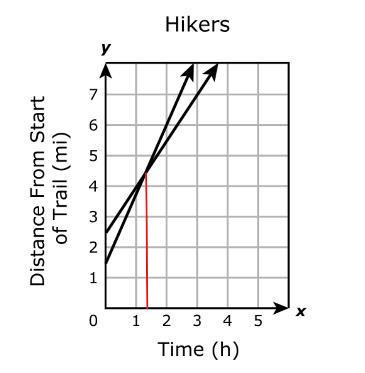
The number of hours the two hikers have been hiking when they are the same distance from the start of the trail is the point of intersection of the two graphs.
As is observed, the point of intersection is between 1 hour and 2 hours.
This is about 1.3 hours.
$ A.\;\; f(x) = (3x - 7)(2x - 3) \\[3ex] B.\;\; f(x) = 3(x - 1)(2x - 7) \\[3ex] C.\;\; f(x) = (6x - 7)(x - 3) \\[3ex] D.\;\; f(x) = 3(x - 7)(2x - 1) \\[3ex] $
$ f(x) = 6x^2 - 23x + 21 \\[3ex] 6x^2 * 21 = 126x^2 \\[3ex] \text{Factors are: } -9x \text{ and } -14x \\[3ex] f(x) = 6x^2 - 9x - 14x + 21 \\[3ex] f(x) = 3x(2x - 3) - 7(2x - 3) \\[3ex] f(x) = (2x - 3)(3x - 7) $
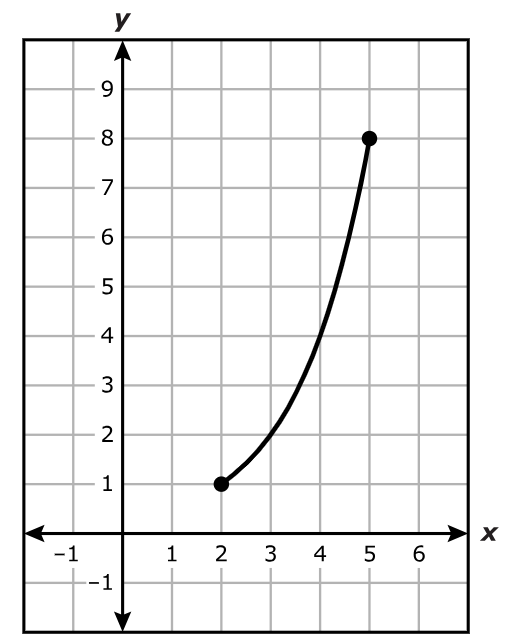
Which statements are true about the domain and range of the part of the function shown.
Select TWO correct answers.
Option 2: The domain is the set of all real numbers greater than or equal to 2 and less than or equal to 5.
Option 4: The range is the set of all real numbers greater than or equal to 1 and less than or equal to 8.
What are the solutions to $g(x) = 0$?
$ A.\;\; x = -1 \text{ and } x = \dfrac{3}{5} \\[5ex] B.\;\; x = -1 \text{ and } x = \dfrac{5}{3} \\[5ex] C.\;\; x = 1 \text{ and } x = -\dfrac{3}{5} \\[5ex] D.\;\; x = 1 \text{ and } x = -\dfrac{5}{3} \\[5ex] $
$ g(x) = 3x^2 - 2x - 5 \\[3ex] g(x) = 0 \\[3ex] \implies \\[3ex] 3x^2 - 2x - 5 = 0 \\[3ex] 3x^2 * -5 = -15x^2 \\[3ex] \text{Factors are: } 3x \text{ and } -5x \\[3ex] 3x^2 + 3x - 5x - 5 = 0 \\[3ex] 3x(x + 1) - 5(x + 1) = 0 \\[3ex] (x + 1)(3x - 5) = 0 \\[3ex] x + 1 = 0 \hspace{1em}OR\hspace{1em} 3x - 5 = 0...\text{Zero Product Property} \\[3ex] x = -1 \hspace{1em}OR\hspace{1em} 3x = 5 \\[3ex] x = -1 \hspace{1em}OR\hspace{1em} x = \dfrac{5}{3} $
| x | g(x) |
|---|---|
| 1 | 48 |
| 2 | 72 |
| 3 | 108 |
| 4 | 162 |
Which function represents the relation shown in the table?
$ A.\;\; g(x) = 32\left(\dfrac{2}{3}\right)^x \\[5ex] B.\;\; g(x) = 48\left(\dfrac{2}{3}\right)^x \\[5ex] C.\;\; g(x) = 32\left(\dfrac{3}{2}\right)^x \\[5ex] D.\;\; g(x) = 48\left(\dfrac{3}{2}\right)^x \\[5ex] $
$ \underline{\text{Exponential Function}} \\[3ex] y = ab^x \\[3ex] y = g(x) \\[3ex] a = \text{initial value} \\[3ex] b = \text{base} \\[5ex] \text{Point 1: } (1, 48) \\[3ex] x = 1 \\[3ex] g(x) = 48 \\[3ex] 48 = a * b^{1} \\[3ex] 48 = ab \\[3ex] ab = 48...eqn.(1) \\[5ex] \text{Point 2: } (2, 72) \\[3ex] x = 2 \\[3ex] g(x) = 72 \\[3ex] 72 = a * b^{2} \\[3ex] 72 = ab^2 \\[3ex] ab^2 = 72...eqn.(2) \\[5ex] eqn.(2) \div eqn.(1) \implies \\[3ex] \dfrac{ab^2}{ab} = \dfrac{72}{48} \\[5ex] b = \dfrac{3}{2} \\[5ex] \text{From } eqn.(1) \\[3ex] a = \dfrac{48}{b} \\[5ex] a = 48 \div \dfrac{3}{2} \\[5ex] a = 48 * \dfrac{2}{3} \\[5ex] a = 32 \\[5ex] \implies \\[3ex] g(x) = 32\left(\dfrac{3}{2}\right)^x $
A. When the number of spectators at a football game increases, the number of wins for the home team increases.
B. When more gallons of water are put into an aquarium, the weight of the aquarium increases.
C. When the amount of time an athlete runs increases, the distance she runs increases.
D. When the charge of a cell phone battery increases, the number of minutes the phone can be used increases.
Let us analyze each option.
A. When the number of spectators at a football game increases, the number of wins for the home team increases.
The number of spectators at a football game does not really cause win for the home team.
What if the majority of the spectators do not want the home team to win?
This is not a causation.
B. When more gallons of water are put into an aquarium, the weight of the aquarium increases.
More gallons of water in an aquarium does increases the weight of the aquarium because of the weight of the weight.
This is a causation.
C. When the amount of time an athlete runs increases, the distance she runs increases.
If I am asked to run for 5 minutes, I shall cover some meters.
If I am asked to run for 10 minutes, I shall cover more meters.
So, the extended time caused more distance to be covered.
This is a causation.
D. When the charge of a cell phone battery increases, the number of minutes the phone can be used increases.
Ceteris paribus:
When a cell phone battery is at 50%, the phone can be used for some number of minutes.
When the cell phone battery is fully charged (at 100%), the phone can be used for an extended number of minutes.
This implies that the percent of charge in a cell phone causes the phone to be used for a certain number of minutes.
This is a causation.
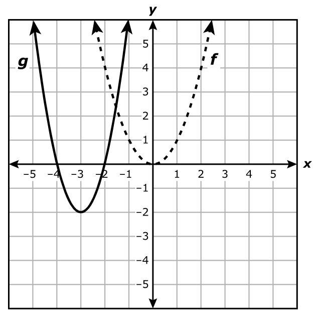
What is the equation for g?
$ A.\;\; g(x) = f(x + 3) - 2 \\[3ex] B.\;\; g(x) = 2f(x + 3) - 2 \\[3ex] C.\;\; g(x) = f(x - 3) + 2 \\[3ex] D.\;\; g(x) = 2f(x - 3) + 2 \\[3ex] $
Observing the two graphs from the graph of $f(x)$ to the graph of $g(x)$, we notice a shift to the left, a stretch, and a shift downwards. $f(x) = x^2$
Vertex of $f(x) = (0, 0)$
Vertex of $g(x) = (-3, -2)$
1st transformation:
Horizontal Shift of 3 units to the left: $(0, 0) \rightarrow (0 - 3, 0) \rightarrow (-3, 0)$
Transformed function: $f(x + 3)$
2nd transformation:
We notice a vertical stretch: a narrowing of $f(x)$ to give $g(x)$
Based on the options, we see that the y-coordinate is multiplied by 2
Vertical Stretch by a factor of 2 units: $(-3, 0) \rightarrow (-3, 0 * 2) \rightarrow (-3, 0)$
Transformed function: $2f(x + 3)$
3rd transformation:
Vertical Shift of 2 units down: $(-3, 0) \rightarrow (-3, 0 - 2) \rightarrow (-3, -2)$
Transformed function: $2f(x + 3) - 2$
$g(x) = 2f(x + 3) - 2$
Select two points on the coordinate grid. A line will connect the points.
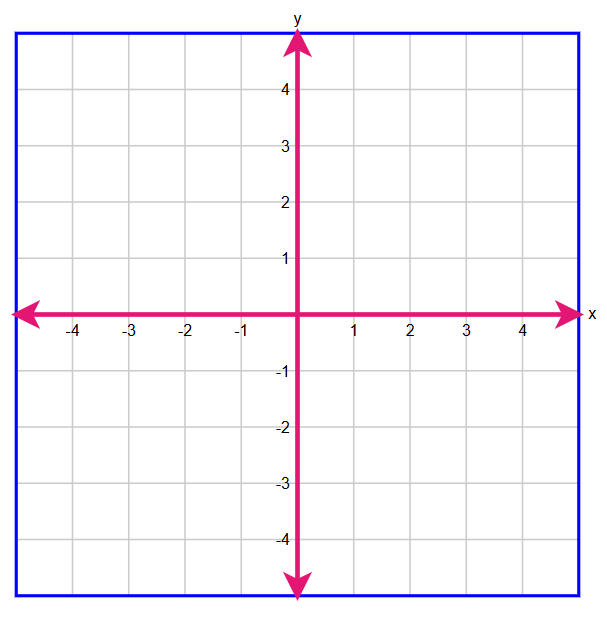
$ 2x + 3y = 6 \\[3ex] 3y = 6 - 2x \\[3ex] y = \dfrac{6 - 2x}{3} \\[5ex] \text{When } x = 0 \\[3ex] y = \dfrac{6 - 2(0)}{3} \\[5ex] y = \dfrac{6 - 0}{3} \\[5ex] y = \dfrac{6}{3} \\[5ex] y = 2 \\[3ex] \text{Point 1: } (0, 2) \\[5ex] \text{When } x = 3 \\[3ex] y = \dfrac{6 - 2(3)}{3} \\[5ex] y = \dfrac{6 - 6}{3} \\[5ex] y = \dfrac{0}{3} \\[5ex] y = 0 \\[3ex] \text{Point 2: } (3, 0) \\[3ex] $ The graph of the equation is:
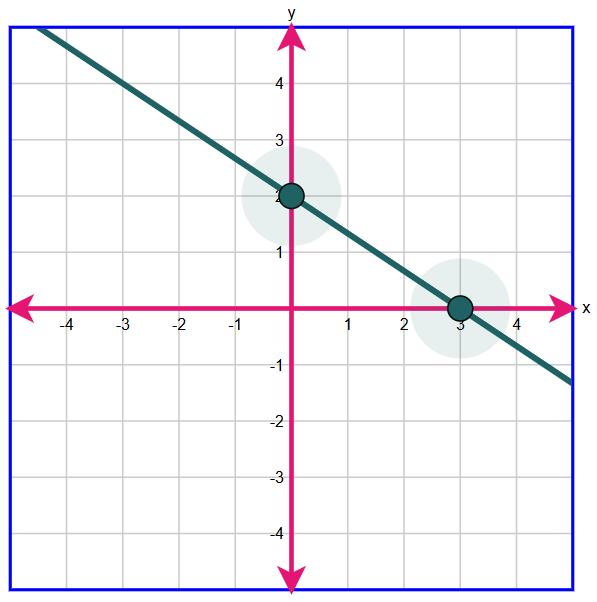
The pool can be rented for either 1 hour or 2 hours.
The cost in dollars to rent the pool is a function of the number of hours the pool is rented.
What are the domain and range of the function for this situation?
A. Domain: {110, 220}
Range: {1, 2}
B. Domain: {1, 2}
Range: {110, 220}
C. Domain: all real numbers
Range: all real numbers
D. Domain: all integers greater than or equal to zero
Range: all integers greater than or equal to zero
The cost in dollars to rent the pool is a function of the number of hours the pool is rented.
This means that the:
cost in dollars to rent the pool is the dependent variable (output) = y
number of hours the pool is rented is the independent variable (input) = x
The pool can be rented for either 1 hour or 2 hours.
It can be rented for $110 per hour.
cost for 1 hour @ $110 per hour = 1(110) = $110
cost for 2 hours @ $110 per hour = 2(110) = $220
B. Domain: {1, 2}
Range: {110, 220}
$ A.\;\; -9 \\[3ex] B.\;\; -3 \\[3ex] C.\;\; -1 \\[3ex] D.\;\; -6 \\[3ex] $
$ \dfrac{2}{3}(m - 9) = \dfrac{1}{3}(m - 27) \\[5ex] \dfrac{2(m - 9)}{3} = \dfrac{1(m - 27)}{3} \\[5ex] $ There is a single term on each side (one term on the Left Hand Side and one term on the Right Hand Side)
The denominators are the same.
So, we just equate the numerators. This is similar to multiplying each term by the denominator.
$ \text{single term on each side, same denominator; equate the numerators} \\[3ex] 2(m - 9) = 1(m - 27) \\[3ex] 2m - 18 = m - 27 \\[3ex] 2m - m = -27 + 18 \\[3ex] m = -9 $
Complete the statement about the quadratic function.
Move the correct answer to each box. Not all answers will be used.
The function has a value of .
The function has a minimum value of –4
One family paid $8.00 for 2 hot dogs and 3 bags of popcorn.
Another family paid $16.50 for 5 hot dogs and 4 bags of popcorn.
Which system of equations can be used to determine the price in dollars of a hot dog, x, and the price in dollars of a bag of popcorn, y?
$ A.\;\; 5x + 4y = 8 \\[3ex] \hspace{1.6em} 2x + 3y = 16.5 \\[5ex] B.\;\; 2x + 3y = 8 \\[3ex] \hspace{1.6em} 5x + 4y = 16.5 \\[5ex] C.\;\; 2x + 5y = 8 \\[3ex] \hspace{1.6em} 3x + 4y = 16.5 \\[5ex] D.\;\; 3x + 2y = 8 \\[3ex] \hspace{1.6em} 4x + 5y = 16.5 \\[3ex] $
One family paid $8.00 for 2 hot dogs and 3 bags of popcorn.
$ 8 = 2x + 3y \\[3ex] 2x + 3y = 8...eqn.(1) \\[3ex] $ Another family paid $16.50 for 5 hot dogs and 4 bags of popcorn.
$ 16.5 = 5x + 4y \\[3ex] 5x + 4y = 16.5...eqn.(2) $
The y-intercept is 2.
The function increases at a rate of 50%.
Which graph best represents this function?
A.
B.
C.
D.
The y-intercept is 2.
This implies that one of the points on the graph is (0, 2)
The graph must pass through (0, 2)
Options A. and B. are eliminated.
Options C. and D. remain.
The function increases at a rate of 50%.
This is an exponential growth function.
Option D. is an exponential decay function. It is eliminated.
Option C. is the correct answer.
Which equation best represents the point-slope form of the line that passes through point W and is parallel to line p?
$ A.\;\; y - 5 = -\dfrac{4}{5}(x - 1) \\[5ex] B.\;\; y - 5 = \dfrac{4}{5}(x - 1) \\[5ex] C.\;\; y - 5 = -\dfrac{5}{4}(x - 1) \\[5ex] D.\;\; y - 5 = \dfrac{5}{4}(x - 1) \\[5ex] $
$ \underline{\text{Line P}} \\[3ex] \text{Point 1: } (-5, -2) \\[3ex] x_1 = -5 \\[3ex] y_1 = -2 \\[5ex] \text{Point 2: } (5, 6) \\[3ex] x_2 = 5 \\[3ex] y_2 = 6 \\[5ex] m = \dfrac{y_2 - y_1}{x_2 - x_1} \\[5ex] m = \dfrac{6 - (-2)}{5 - (-5)} \\[5ex] m = \dfrac{6 + 2}{5 + 5} \\[5ex] m = \dfrac{8}{10} \\[5ex] m = \dfrac{4}{5} \\[5ex] \underline{\text{Line W}} \\[3ex] \text{Line W } || \text{ Line P} \\[3ex] m = \dfrac{4}{5}...\text{parallel lines have the same slope} \\[5ex] \text{Passes through Point } (1, 5) \\[3ex] x_3 = 1 \\[3ex] y_3 = 5 \\[3ex] \text{Point–Slope Form} \\[3ex] y - y_3 = m(x - x_3) \\[3ex] y - 5 = \dfrac{4}{5}(x - 1) $
$ A.\;\; (7.2, 0) \\[3ex] B.\;\; (-7.2, 0) \\[3ex] C.\;\; (0, 7.2) \\[3ex] D.\;\; (0, -7.2) \\[3ex] $
$ f(x) = x^2...\text{parent function} \\[3ex] \text{Vertex} = (0, 0) \\[5ex] g(x) = f(x + 7.2)...\text{child (transformed) function} \\[3ex] g(x) = (x + 7.2)^2 \\[3ex] $ Transformation from $f(x)$ to $g(x)$:
Horizontal Shift of $f(x)$ 7.2 units left
This implies that:
$ (0, 0) \rightarrow (0 - 7.2, 0) \\[3ex] \rightarrow (-7.2, 0) \\[3ex] \text{Vertex} = (-7.2, 0) $
The table shows the linear relationship between y, the altitude of the airplane in feet, and x, the time in minutes.
| Time, x (minutes) | Altitude, y (feet) |
|---|---|
| 1.5 | 25,500 |
| 3.25 | 20,250 |
| 6 | 12,000 |
Complete the statement that describes the rate of change of the altitude of the airplane with respect to time.
Choose the correct answer from each drop-down menu to complete the sentence.
The altitude of the airplane at a rate of feet per minute.
The rate of change of the altitude of the airplane with respect to time is the slope.
Observing the pattern, as the time increases, the altitude decreases.
We should expect a negative slope.
$ \text{Point 1: } (1.5, 25500) \\[3ex] x_1 = 1.5 \\[3ex] y_1 = 25500 \\[5ex] \text{Point 2: } (6, 12000) \\[3ex] x_2 = 6 \\[3ex] y_2 = 12000 \\[5ex] \text{Slope} = \dfrac{y_2 - y_1}{x_2 - x_1} \\[5ex] = \dfrac{12000 - 25500}{6 - 1.5} \\[5ex] = -\dfrac{13500}{4.5} \\[5ex] = -3000 \\[3ex] $ The altitude of the airplane decreases at a rate of 3000 feet per minute.
$ A.\;\; -\dfrac{3}{5} \pm \sqrt{15} \\[5ex] B.\;\; -\dfrac{3}{5} \pm \sqrt{3} \\[5ex] C.\;\; -3 \pm \sqrt{3} \\[3ex] D.\;\; -3 \pm \sqrt{15} \\[3ex] $
$ 5(x + 3)^2 = 75 \\[3ex] (x + 3)^2 = \dfrac{75}{5} \\[5ex] (x + 3)^2 = 15 \\[3ex] \underline{\text{Square Root Property}} \\[3ex] x + 3 = \pm\sqrt{15} \\[3ex] x = -3 \pm \sqrt{15} $
What is the domain of the part of the function shown?
A. All real numbers greater than or equal to –4 and less than or equal to 5
B. All real numbers greater than or equal to –1 and less than or equal to 3
C. All real numbers greater than or equal to –6 and less than or equal to 6
D. All real numbers greater than or equal to –2 and less than or equal to 3
The domain is the set of all the input values, x for which the function has an output.
The closed circle represents a closed interval.
On the graph,
It is on the left hand side at x = –2
It is on the right hand side at x = 3
So, the interval notation is: $[-2, 3]$
This represents all real numbers between –2 and 3 (both ends included).
This means all real numbers greater than or equal to –2 and less than or equal to 3.
$ A.\;\; \dfrac{12k^6}{m^7} \\[5ex] B.\;\; \dfrac{4k^6}{m^7} \\[5ex] C.\;\; \dfrac{12k^3}{m^2} \\[5ex] D.\;\; \dfrac{4k^3}{m^2} \\[5ex] $
$ \dfrac{16k^6m^7}{4k^3m^{14}} \\[5ex] \text{DISSOCIATE} \\[3ex] \dfrac{16 * k^6 * m^7}{4 * k^3 * m^{14}} \\[5ex] \dfrac{16}{4} * \dfrac{k^9}{k^3} * \dfrac{m^7}{m^{14}} \\[5ex] \text{SOLVE} \\[3ex] 4 * k^{9 - 3} * \dfrac{1}{m^{14 - 7}}...\text{Laws 1 and 2 Exp} \\[5ex] 4 * k^6 * \dfrac{1}{m^7} \\[5ex] \text{ASSOCIATE} \\[3ex] \dfrac{4k^6}{m^7} $
What is a possible equation for h in factored form?
Move the correct answer to each box. Not all answers will be used.
$ \underline{\text{Zeros}} \\[3ex] 1st:\;\; x = -\dfrac{3}{2} \\[5ex] 2nd:\;\; x = 5 \\[5ex] \underline{\text{Equate to number zero}} \\[3ex] 1st:\;\; 2x = -3 \\[3ex] 2x + 3 = 0 \\[3ex] 2nd:\;\;x - 5 = 0 \\[5ex] \underline{\text{Factors}} \\[3ex] 1st:\;\; 2x + 3 \\[3ex] 2nd:\;\; x - 5 \\[5ex] \underline{\text{Factored Form}} \\[3ex] (2x + 3)(x - 5) $
Which expression represents the perimeter of the triangle in units?
$ A.\;\; \dfrac{15}{2}x \\[5ex] B.\;\; \dfrac{47}{6}x \\[5ex] C.\;\; \dfrac{13}{2}x + 1 \\[5ex] D.\;\; \dfrac{13}{2}x + \dfrac{4}{3} \\[5ex] $
$ \text{Perimeter} \\[3ex] = \left(\dfrac{3}{2}x + \dfrac{5}{6}\right) + \left(3x - \dfrac{1}{6}\right) + \left(2x + \dfrac{1}{3}\right) \\[5ex] = \dfrac{3}{2}x + \dfrac{5}{6} + 3x - \dfrac{1}{6} + 2x + \dfrac{1}{3} \\[5ex] = \dfrac{3}{2}x + 3x + 2x + \dfrac{5}{6} - \dfrac{1}{6} + \dfrac{1}{3} \\[5ex] = \dfrac{3x}{2} + 5x + \dfrac{4}{6} + \dfrac{1}{3} \\[5ex] = \dfrac{3x + 10x}{2} + \dfrac{4 + 2}{6} \\[5ex] = \dfrac{13x}{2} + \dfrac{6}{6} \\[5ex] = \dfrac{13x}{2} + 1 $
One customer purchased 4 tickets for a total cost of $160.
Another customer purchased 8 tickets for a total cost of $300.
Which linear equation represents the total cost in dollars, y, for x tickets?
$ A.\;\; y = 40x \\[3ex] B.\;\; y = 37.5x \\[3ex] C.\;\; y = 35x + 20 \\[3ex] D.\;\; y = 20x + 35 \\[3ex] $
Let the:
flat fee = p
cost per ticket = c
$ y = p + cx \\[3ex] $ One customer purchased 4 tickets for a total cost of $160.
$ x = 4 \\[3ex] y = 160 \\[3ex] 160 = p + 4c ...eqn.(1) \\[3ex] $ Another customer purchased 8 tickets for a total cost of $300.
$ x = 8 \\[3ex] y = 300 \\[3ex] 300 = p + 8c ...eqn.(2) \\[5ex] eqn.(2) - eqn.(1) \implies \\[3ex] (300 - 160) = (p + 8c) - (p + 4c) \\[3ex] 140 = p + 8c - p - 4c \\[3ex] 4c = 140 \\[3ex] c = \dfrac{140}{4} \\[5ex] c = 35 \\[3ex] \text{Substitute the value of c in eqn.(1)} \\[3ex] 160 = p + 4(35) \\[3ex] p + 140 = 160 \\[3ex] p = 160 - 140 \\[3ex] p = 20 \\[3ex] \implies \\[3ex] y = 20 + 35x \\[3ex] y = 35x + 20 \\[3ex] $ Student: SamDom For Peace
Teacher: That's me.
What's good?
Student: What if we decide to check each option and eliminate the incorrect ones until we get the correct one?
Teacher: Sure, we can do that.
$ \underline{\text{Testing: Trial and Error Approach}} \\[3ex] \text{Option A} \\[3ex] y = 40x \\[3ex] \text{1st Customer} \\[3ex] x = 4 \\[3ex] y = 160 \\[3ex] 160 = 40(4) \checkmark \\[5ex] \text{2nd Customer} \\[3ex] x = 8 \\[3ex] y = 300 \\[3ex] 300 \ne 40(8)...\text{Discard} \\[5ex] \text{NEXT} \\[3ex] \text{Option B} \\[3ex] y = 37.5x \\[3ex] \text{1st Customer} \\[3ex] x = 4 \\[3ex] y = 160 \\[3ex] 160 \ne 37.5(4) ...\text{Discard} \\[5ex] \text{NEXT} \\[3ex] \text{Option C} \\[3ex] y = 35x + 20 \\[3ex] \text{1st Customer} \\[3ex] x = 4 \\[3ex] y = 160 \\[3ex] 160 = 35(4) + 20 \checkmark \\[5ex] \text{2nd Customer} \\[3ex] x = 8 \\[3ex] y = 300 \\[3ex] 300 = 35(8) + 20 \checkmark \\[5ex] \text{STOP} $
$ A.\;\; x + 15 \\[3ex] B.\;\; x - 10 \\[3ex] C.\;\; x + 5 \\[3ex] D.\;\; x - 3 \\[3ex] $
$ x^2 + 7x - 30 \\[3ex] (x + 10)(x - 3) $
Complete the statement to compare the graphs of f and g.
Choose the correct answer from each drop-down menu to complete the sentence.
The graph of g is the graph of f and has a y-intercept that is that of f.
$ f(x) = x \\[3ex] g(x) = \dfrac{1}{2}f(x) + 3 \\[5ex] $ Transformation of $f(x)$ to give $g(x)$
1st: Vertical Compression of $f(x)$ by a factor of $\dfrac{1}{2}$ unit
This makes the graph of $g(x)$ to be less than steep than that of $f(x)$
2nd: Vertical Shift of $f(x)$ 3 units up
This moves up the modified graph of $f(x)$ by 3 units.
In other words, all y-coordinates increase by 3 units.
The graph of g is less steep than the graph of f and has a y-intercept that is greater than that of f.
The table of ordered pairs represents some points on line p
Which system of equations represents line n and line p?
$ A.\;\; 3x - y = 2 \\[3ex] \hspace{1.6em} 2x + y = 4 \\[5ex] B.\;\; 3x + y = -2 \\[3ex] \hspace{1.6em} 2x + y = 4 \\[5ex] C.\;\; 3x - y = 2 \\[3ex] \hspace{1.6em} x + 2y = 4 \\[5ex] D.\;\; 3x + y = -2 \\[3ex] \hspace{1.6em} x + 2y = 4 \\[3ex] $
$ \text{slope} = m \\[3ex] \text{y-intercept} = b \\[5ex] \underline{\text{Line } n} \\[3ex] \text{Point 1: } (0, -2) \\[3ex] x_1 = 0 \\[3ex] y_1 = -2 \\[5ex] \text{Point 2: } (1, 1) \\[3ex] x_2 = 1 \\[3ex] y_2 = 1 \\[5ex] m = \dfrac{y_2 - y_1}{x_2 - x_1} \\[5ex] m = \dfrac{1 - (-2)}{1 - 0} \\[5ex] m = \dfrac{3}{1} \\[5ex] m = 3 \\[5ex] b = -2 \\[5ex] \text{Slope–Intercept Form} \\[3ex] y = mx + b \\[3ex] y = 3x - 2 \\[5ex] \text{Standard Form} \\[3ex] 2 = 3x - y \\[3ex] 3x - y = 2 \\[5ex] \underline{\text{Line } p} \\[3ex] \text{Point 1: } (-1, 6) \\[3ex] x_1 = -1 \\[3ex] y_1 = 6 \\[5ex] \text{Point 2: } (2, 0) \\[3ex] x_2 = 2 \\[3ex] y_2 = 0 \\[5ex] m = \dfrac{y_2 - y_1}{x_2 - x_1} \\[5ex] m = \dfrac{0 - 6}{2 - (-1)} \\[5ex] m = \dfrac{-6}{3} \\[5ex] m = -2 \\[5ex] b = 4 \\[5ex] \text{Slope–Intercept Form} \\[3ex] y = mx + b \\[3ex] y = -2x + 4 \\[5ex] \text{Standard Form} \\[3ex] y + 2x = 4 \\[3ex] 2x + y = 4 $
$ A.\;\; f(x) = 16x^2 - 96x + 149 \\[3ex] B.\;\; f(x) = 4x^2 + 41 \\[3ex] C.\;\; f(x) = 4x^2 - 24x + 41 \\[3ex] D.\;\; f(x) = 16x^2 - 96x + 29 \\[3ex] $
$ f(x) = 4(x - 3)^2 + 5 \\[3ex] .............................................. \\[3ex] (x - 3)^2 \\[3ex] (x - 3)(x - 3) \\[3ex] x^2 - 3x - 3x + 9 \\[3ex] x^2 - 6x + 9 \\[3ex] .............................................. \\[3ex] = 4(x^2 - 6x + 9) + 5 \\[3ex] = 4x^2 - 24x + 36 + 5 \\[3ex] = 4x^2 - 24x + 41 $
A.
B.
C.
D.
$ x + 2y \ge 2 \\[3ex] \text{When } x = 0 \\[3ex] 0 + 2y \ge 2 \\[3ex] 2y \ge 2 \\[3ex] y \ge \dfrac{2}{2} \\[5ex] y \ge 1 ...\text{Mark point } (0, 1) \\[3ex] \text{The shaded area is upwards from } y = 1 \\[5ex] \text{When } y = 0 \\[3ex] x + 2(0) \ge 2 \\[3ex] x + 0 \ge 2 \\[3ex] x \ge 2 ...\text{Mark point } (2, 0) \\[3ex] \text{The shaded area is to the right of } x = 2 \\[3ex] $ Draw a straight solid line (because of the equal sign) connecting the two points: (0, 1) and (2, 0)
Shade the regions accordingly.
Locate the overlap of the two regions.
The correct answer is Option A.
$ 6x - 2y = 10 \\[3ex] y = 3x - 5 \\[3ex] $ Which statement about the system is true?
A. The system has one solution, (–1, –8).
B. The system has one solution, (3, 4).
C. The system has no solutions.
D. The system has infinitely many solutions.
$ 6x - 2y = 10...eqn.(1) \\[3ex] y = 3x - 5...eqn.(2) \\[3ex] \text{Substitute eqn.(2) into eqn.(1) for } y \\[3ex] 6x - 2(3x - 5) = 10 \\[3ex] 6x - 6x + 10 = 10 \\[3ex] 10 = 10 \\[3ex] $ The system has infinitely many solutions.
The number of employees is expected to grow at a rate of 2% each year.
Write an exponential function to model the number of employees in the company, y, after x years.
Enter your answer in the box provided.
$ \underline{\text{Exponential Growth Function}} \\[3ex] y = a(1 + r)^x \\[3ex] a = \text{initial value} = 500 \\[3ex] r = \text{growth rate} = 2\% = \dfrac{2}{100} = 0.02 \\[5ex] y = 500(1 + 0.02)^x \\[3ex] y = 500(1.02)^x \\[3ex] y = 500 \cdot 1.02^x $
A.
B.
C.
D.
A function is a relation in which each input has a unique output.
This means that an input can have only one output, two inputs can have the same output, however, an input cannot have more than one output.
Let us analyze each option and discard the incorrect ones.
Option A.
The input, –2 has two different outputs, –4 and 4.
This is not a function.
Option B.
Vertical Line Test: A vertical line through the graph intersects it at more than one point.
This implies that at least one input, say –3 has two different outputs, 4 and –4
This is not a function.
Option C.
Each input has a different output.
This is a function.
It is a one-to-one (injective) function.
Option D.
Vertical Line Test: A vertical line through the graph intersects it at more than one point.
This implies that at least one input, say –3 has two different outputs, 2 and –2
This is not a function.
The second equation in the system has a different slope than the first equation.
Which statement is true about the solution to the system of equations.
A. The system has no solutions.
B. The system has exactly one solution.
C. The system has exactly two solutions.
D. The system has infinitely many solutions.
Because the second equation has a different slope than the first equation, this implies that the two equations will intersect at a point.
Hence, the system has exactly one solution.
$ A.\;\; w = -\dfrac{26}{9} \\[5ex] B.\;\; w = -\dfrac{10}{9} \\[5ex] C.\;\; w = \dfrac{15}{13} \\[5ex] D.\;\; w = -\dfrac{30}{13} \\[5ex] $
$ 7w - 2(w - 9) = 4 - 8(w + 2) \\[3ex] 7w - 2w + 18 = 4 - 8w - 16 \\[3ex] 7w - 2w + 8w = 4 - 16 - 18 \\[3ex] 13w = -30 \\[3ex] w = -\dfrac{30}{13} $
Move the correct answer to each box. Each answer may be used more than once. Not all answers will be used.
$ 4x^2 - 81 \\[3ex] 2^2x^2 - 9^2 \\[3ex] (2x)^2 - 9^2 \\[3ex] (2x + 9)(2x - 9) ...\text{Difference of Two Squares} $
$ A.\;\; 29 \\[3ex] B.\;\; 17 \\[3ex] C.\;\; 41 \\[3ex] D.\;\; 27 \\[3ex] $
$ f(x) = 3x^2 - 7 \\[3ex] f(4) = 3(4)^2 - 7 \\[3ex] = 3(16) - 7 \\[3ex] = 48 - 7 \\[3ex] = 41 $
The part of the linear function shown represents the distance the athlete ran in yards, y, as a function of the time in seconds, x.
What is the domain of the function for this situation?
$ A.\;\; 0 \le x \le 14 \\[3ex] B.\;\; 0 \le x \le 12 \\[3ex] C.\;\; 0 \le y \le 110 \\[3ex] D.\;\; 0 \le y \le 100 \\[3ex] $
The domain is the set of all the input values, x for which the function has an output.
The closed circle represents a closed interval. It shows that the endpoint is included.
For the graph:
The graph starts from the origin at x = 0
The circle on the right hand side is at x = 12
The interval notation is: [0, 12]
The set notation is: Domain = $\{x: 0 \le x \le 12 \}$
What value best represents the y-intercept of the line?
$ A.\;\; -2 \\[3ex] B.\;\; -\dfrac{3}{2} \\[5ex] C.\;\; \dfrac{2}{3} \\[5ex] D.\;\; 3 \\[3ex] $
The y-intercept is the point where the graph intersects the y-axis.
The graph intersects the y-axis at (0, –2)
Hence, the y-intercept is (0, –2)
| x | y |
|---|---|
| –4 | 10 |
| –2 | 7 |
| 6 | –5 |
Which function represents this relationship?
$ A.\;\; y = -\dfrac{3}{2}x + 4 \\[5ex] B.\;\; y = -\dfrac{3}{2}x - 14 \\[5ex] C.\;\; y = -\dfrac{2}{3}x - 9 \\[5ex] D.\;\; y = -\dfrac{2}{3}x - 1 \\[5ex] $
$ \text{slope} = m \\[3ex] \text{Point 1: } (-4, 10) \\[3ex] x_1 = -4 \\[3ex] y_1 = 10 \\[5ex] \text{Point 2: } (6, -5) \\[3ex] x_2 = 6 \\[3ex] y_2 = -5 \\[5ex] m = \dfrac{y_2 - y_1}{x_2 - x_1} \\[5ex] m = \dfrac{-5 - 10}{6 - (-4)} \\[5ex] m = \dfrac{-15}{10} \\[5ex] m = -\dfrac{3}{2} \\[5ex] \text{Point–Slope Form} \\[3ex] y - y_1 = m(x - x_1) \\[3ex] y - 10 = -\dfrac{3}{2}[x - (-4)] \\[5ex] y = -\dfrac{3}{2}(x + 4) + 10 \\[5ex] y = -\dfrac{3}{2}x - 6 + 10 \\[5ex] \text{Slope–Intercept Form} \\[3ex] y = -\dfrac{3}{2}x + 4 $
The graph shows the relationship between time in hours, x, and the water level in meters, y.
Complete the statement that describes the rate of change of the water level with respect to time.
Move the correct answer to each box. Not all answers will be used.
The water level at a rate of m/h.
The rate of change of tof the water level with respect to time is the slope of the graph.
$ \text{Point 1: } (0, 9) \\[3ex] x_1 = 0 \\[3ex] y_1 = 9 \\[5ex] \text{Point 2: } (4, 8) \\[3ex] x_2 = 4 \\[3ex] y_2 = 8 \\[5ex] \text{Slope, } m = \dfrac{y_2 - y_1}{x_2 - x_1} \\[5ex] m = \dfrac{8 - 9}{4 - 0} \\[5ex] m = -\dfrac{1}{4} \\[5ex] m = -0.25...\text{This is a decrease because of the negative sign.} \\[3ex] $ The water level decreases at a rate of 0.25 m/h.
Which function best represents h?
$ A.\;\; h(x) = x^2 + 2x - 3 \\[3ex] B.\;\; h(x) = x^2 - 2x - 3 \\[3ex] C.\;\; h(x) = x^2 + 4x + 3 \\[3ex] D.\;\; h(x) = x^2 - 4x + 3 \\[3ex] $
Let:
α, β be the zeros of the function
a = leading coefficient
$ \alpha = -3 \\[3ex] \beta = 1 \\[3ex] h(x) = a(x - \alpha)(x - \beta) \\[3ex] h(x) = a[x - (-3)](x - 1) \\[3ex] h(x) = a(x + 3)(x - 1) \\[3ex] \text{Passes through the vertex: } (-1, -4) \\[3ex] x = -1 \\[3ex] h(x) = -4 \\[3ex] \implies \\[3ex] -4 = a(-1 + 3)(-1 - 1) \\[3ex] -4 = a(2)(-2) \\[3ex] -4 = -4a \\[3ex] -4a = -4 \\[3ex] a = \dfrac{-4}{-4} \\[5ex] a = 1 \\[3ex] \implies \\[3ex] h(x) = 1(x + 3)(x - 1) \\[3ex] h(x) = x^2 - x + 3x - 3 \\[3ex] h(x) = x^2 + 2x - 3 $
A triangle has a base of 30 inches and a height of $(4x - 10)$ inches.
The area in square inches of the rectangle is equal to the area in square inches of the triangle.
What is the value of x?
$ A.\;\; 2.5 \\[3ex] B.\;\; 3 \\[3ex] C.\;\; 7.5 \\[3ex] D.\;\; 5 \\[3ex] $
$ \underline{\text{Rectangle}} \\[3ex] Area = Length * Width \\[3ex] = (5 + 2x) * 10 \\[3ex] = 10(5 + 2x)\text{ square inches} \\[5ex] \underline{\text{Triangle}} \\[3ex] Area = \dfrac{1}{2} * base * \perp height \\[5ex] = \dfrac{1}{2} * 30 * (4x - 10) \\[5ex] = 15(4x - 10) \\[3ex] = 15 * 2 * (2x - 5) \\[3ex] = 30 * (2x - 5) \text{ square inches} \\[3ex] $ The area in square inches of the rectangle is equal to the area in square inches of the triangle.
$ 10(5 + 2x) = 30(2x - 5) \\[3ex] \text{Divide both sides by 10} \\[3ex] 5 + 2x = 3(2x - 5) \\[3ex] 5 + 2x = 6x - 15 \\[3ex] 5 + 15 = 6x - 2x \\[3ex] 20 = 4x \\[3ex] 4x = 20 \\[3ex] x = \dfrac{20}{4} \\[5ex] x = 5 $
$ A.\;\; 5x + 4 \\[3ex] B.\;\; 3x - 2 \\[3ex] C.\;\; 5x - 4 \\[3ex] D.\;\; 3x - 4 \\[3ex] $
$ 30x^2 - 4x - 16 \\[3ex] 2(15x^2 - 2x - 8) \\[3ex] ....................................... \\[3ex] 15x^2 - 2x - 8 \\[3ex] 15x^2 * -8 = -120x^2 \\[3ex] \text{Factors are: } 10x \text{ and } -12x \\[3ex] \implies \\[3ex] 15x^2 + 10x - 12x - 8 \\[3ex] 5x(3x + 2) -4(3x + 2) \\[3ex] (3x + 2)(5x - 4) \\[3ex] ....................................... \\[3ex] 2(3x + 2)(5x - 4) $
A linear function can be used to model the data.
| Year | Number of Species Added |
|---|---|
| 2011 | 19 |
| 2012 | 51 |
| 2013 | 89 |
| 2014 | 66 |
| 2015 | 31 |
| 2016 | 74 |
| 2017 | 11 |
Which correlation best describes the strength of the linear association between the number of species added to the United States endangered species list and the year?
A. Weak negative correlation, because r ≈ –0.91
B. Weak negative correlation, because r ≈ –0.09
C. Strong negative correlation, because r ≈ –0.91
D. Strong negative correlation, because r ≈ –0.09
Observing the data, as the year increases (from 2011 to 2017), the number of species added fluctuates: it increases, then decreases, then increase, and finally decrease.
There is no consistent upward or downward trend.
Hence, the association is a Weak Correlation.
A weak negative correlation has a correlation coefficient close to 0, while a strong negative correlation has a correlation coefficient close to –1.
This implies that the association is a weak negative correlation, because r ≈ –0.09.
What is the range of the part of the linear function shown?
Choose the correct answer from each drop-down menu to complete the sentence.
The range is the set of all real numbers and .
The range is the set of all the output values, y produced by the input values of the function.
The closed circle represents a closed interval.
On the graph, the closed circle appears on the left-hand side at y = 2
This value is included.
The open circle represents an open interval.
On the graph, the open circle appears on the right-hand side at y = -4
This value is not included.
So, the interval notation is: $(-4, 2]$
This represents all real numbers between –4 (excluded) and 2 (included).
The range is the set of all real numbers greater than –4 and less than or equal to 2.
A. The zeros are $\dfrac{3}{4}$ and $-27$ because $f(x) = (4x - 3)(x - 27)$
B. The zeros are $-\dfrac{3}{4}$ and $\dfrac{27}{2}$ because $f(x) = (2x + 3)(2x + 27)$
C. The zeros are $\pm \dfrac{9}{2}$ because $f(x) = (2x - 9)(2x + 9)$
D. The only zero is $\dfrac{9}{2}$ because $f(x) = (2x - 9)^2$
$ f(x) = 4x^2 - 36x + 81 \\[3ex] 4x^2 * 81 = 324x^2 \\[3ex] \text{Factors are: } -18x \text{ and } -18x \\[3ex] \implies \\[3ex] f(x) = 4x^2 - 18x - 18x + 81 \\[3ex] f(x) = 2x(2x - 9) - 9(2x - 9) \\[3ex] f(x) = (2x - 9)(2x - 9) \\[3ex] f(x) = (2x - 9)^2 \\[5ex] \underline{\text{Zeros}} \\[3ex] f(x) = (2x - 9)^2 = 0 \\[3ex] 2x - 9 = \pm\sqrt{0} \\[3ex] 2x - 9 = \pm 0 \\[3ex] 2x = 9 \pm 0 \\[3ex] 2x = 9 \\[3ex] x = \dfrac{9}{2} ...\text{twice} \\[5ex] $ The only zero is $\dfrac{9}{2}$ because $f(x) = (2x - 9)^2$
Move the correct answer to each box. Not all answers will be used.
The only asymptote that applies to standard exponential functions is the horizontal asymptote.
A horizontal asymptote is the horizontal line say y = k where the graph/output approaches the specific value, k as the input, x increases or decreases without bound.
$ 0.75 = \dfrac{75}{100} = \dfrac{3}{4} \\[5ex] y = 16(0.75)^x \\[3ex] y = 16\left(\dfrac{3}{4}\right)^x \\[5ex] \text{As } x \to \infty, \\[3ex] y = 16\left(\dfrac{3}{4}\right)^\infty \\[5ex] y = 16(0) \\[3ex] y = 0 \\[5ex] \text{As } x \to -\infty, \\[3ex] y = 16\left(\dfrac{3}{4}\right)^{-\infty} \\[5ex] y = 16\left(\dfrac{4}{3}\right)^\infty ...\text{Law 6 Exp} \\[5ex] y = 16(\infty) \\[3ex] y = \infty \\[3ex] $ Because ∞ is not a value, the horizontal asymptote is: $y = 0$
$ A.\;\; x^{\dfrac{6}{14}} \\[5ex] B.\;\; x^{\dfrac{17}{7}} \\[5ex] C.\;\; x^{\dfrac{6}{7}} \\[5ex] D.\;\; x^{\dfrac{5}{7}} \\[5ex] $
$ \left(x^{\dfrac{3}{7}}\right)^2 \\[5ex] x^{\dfrac{3}{7} * 2} ...\text{Law 5 Exp} \\[5ex] x^{\dfrac{6}{7}} $
A. The domain of the function is $x \ge 2$.
B. The range of the function is $n(x) \ge -8$.
C. The domain of the function is $x \ge 0$.
D. The range of the function is $n(x) \le 12$.
Let us analyze each option and discard the incorrect ones.
For the function: $n(x) = 5x^2 - 20x + 12$,
The domain is all real numbers.
Options A, and C. are discarded.
Now, onto the range.
$ n(x) = 5x^2 - 20x + 12 \\[3ex] \text{Compare to the standard form: } n(x) = ax^2 + bx + c \\[3ex] \implies \\[3ex] \text{leading coefficient} = a = 5 \\[3ex] b = -20 \\[3ex] c = 12 \\[3ex] $ The leading coefficient is 5.
5 is a positive value. It is greater than 0.
Hence, the parabola has a minimum value. It is concave up.
The vertex is the minimum value. No other value is lower than the y-value of the vertex.
Let's find it.
$ \text{x-coordinate of the vertex} = -\dfrac{b}{2a} \\[5ex] = -\dfrac{-20}{2(5)} \\[5ex] = 2 \\[5ex] \text{y-coordinate of the vertex} = n(2) \\[3ex] = 5(2)^2 - 20(2) + 12 \\[3ex] = 20 - 40 + 12 \\[3ex] = -8 \\[3ex] $ The range of the function is $n(x) \ge -8$.
Each hat costs $7, and each T-shirt costs $10.
The customer receives free shipping if the amount of the order is over $100.
Write an inequality that represents all possible combinations of hats, x, and T-shirts, y, in an order that qualifies for free shipping.
Move the correct answer to each box. Not all answers will be used.
Each hat costs $7, and each T-shirt costs $10.
... hats, x, and T-shirts, y
x hats @ $7 per hat = $7x$
y T-shirts @ $10 per T-shirt = $10y$
Total cost = $7x + 10y$
The customer receives free shipping if the amount of the order is over $100.
This implies that:
$7x + 10y \gt 100$
The table displays the data collected.
| Speed, x (miles per hour) | Miles per Gallon, y |
|---|---|
| 20 | 24.9 |
| 30 | 28.3 |
| 35 | 29.1 |
| 40 | 30.1 |
| 50 | 30.0 |
| 60 | 29.1 |
A quadratic function can be used to model the data in the table.
Which value best estimates the miles per gallon when the speed is 65 miles per hour?
$ A.\;\; 27.9 \\[3ex] B.\;\; 31.0 \\[3ex] C.\;\; 40.2 \\[3ex] D.\;\; 24.9 \\[3ex] $
For a quadratic function:
Observing the trend, as x increases,
y increases, reaches the vertex, then begins to decrease;
This is a quadratic function that has a maximum point.
Let's say the vertex hovers around 30 before y-value begins to decrease
When x = 65, y should be lower than 29.1
Options B. and C. are discarded.
For x-values from 30 to 35, there is a gradual increase in the y-values from 28.3 to 29.1
Similarly, for the x-values from 60 to 65, there should be a gradual decrease in the y-value from 29.1
Option D: 24.9 is too distant. Discard it.
Option A.: 27.9 is a reasonable estimate.
The initial estimated population was 48,000.
After the first year, the population of the town was 50,400.
If the population of the town continues to grow at this rate each year, which function can be used to model the population x years after the researchers began their study?
$ A.\;\; p(x) = 48,000\left(\dfrac{50,400}{48,000}\right)^x \\[5ex] B.\;\; p(x) = 50,400\left(\dfrac{50,400}{48,000}\right)^x \\[5ex] C.\;\; p(x) = 50,400\left(\dfrac{1}{48,000}\right)^x \\[5ex] D.\;\; p(x) = 48,000\left(\dfrac{1}{50,400}\right)^x \\[5ex] $
$ \underline{\text{Exponential Function}} \\[3ex] p(x) = ab^x \\[3ex] a = \text{initial value} = 48000 \\[3ex] b = \text{base} \\[3ex] $ After the first year, the population of the town was 50,400.
$ \text{Point: } (1, 50400) \\[3ex] x = 1 \\[3ex] p(x) = 50400 \\[3ex] 50400 = 48000 * b^{1} \\[3ex] 48000 * b = 50400 \\[3ex] b = \dfrac{50400}{48000} \\[5ex] \implies \\[3ex] p(x) = 48,000\left(\dfrac{50,400}{48,000}\right)^x $
Which graph represents f and g?
A.
B.
C.
D.
$ f(x) = x \\[3ex] g(x) = 3f(x) = 3x \\[3ex] \text{This means that when: } x = 1 \\[3ex] f(1) = 1 \\[3ex] g(1) = 3(1) = 3 \\[3ex] $ Let us analyze each option and discard the incorrect ones.
$ \text{When } x = 1 \\[5ex] \text{Option A.} \\[3ex] f(1) = 1 \\[3ex] g(1) = -2 \ne 3 ...\text{Discard} \\[3ex] \text{NEXT} \\[3ex] \text{Option B.} \\[3ex] f(1) = 1 \\[3ex] g(1) = 4 \ne 3 ...\text{Discard} \\[3ex] \text{NEXT} \\[3ex] \text{Option C.} \\[3ex] f(1) = 1 \\[3ex] g(1) \ne 3 ...\text{Discard} \\[3ex] \text{NEXT} \\[3ex] \text{Option D.} \\[3ex] f(1) = 1 \\[3ex] g(1) = 3 ...\text{This is the correct option.} $
$ A.\;\; 4w + 12 \\[3ex] B.\;\; 4w - 12 \\[3ex] C.\;\; w - 3 \\[3ex] D.\;\; w + 3 \\[3ex] $
$ \dfrac{8w^2 - 20w - 12}{2w + 1} \\[5ex] ................................................... \\[3ex] \underline{\text{Numerator}} \\[3ex] 8w^2 - 20w - 12 \\[3ex] 4(2w^2 - 5w - 3) \\[3ex] \text{For } 2w^2 - 5w - 3 \\[3ex] 2w^2 * -3 = -6w^2 \\[3ex] \text{Factors are } w \text{ and } -6w \\[3ex] \implies \\[3ex] 2w^2 + w - 6w - 3 \\[3ex] w(2w + 1) -3(2w + 1) \\[3ex] (w - 3)(2w + 1) \\[3ex] \implies \\[3ex] 4(w - 3)(2w + 1) \\[3ex] ................................................... \\[3ex] \implies \\[3ex] \dfrac{4(w - 3)(2w + 1)}{2w + 1} \\[5ex] 4(w - 3) \\[3ex] 4w - 12 $
$ A.\;\; (5, -4) \\[3ex] B.\;\; (-2, -5) \\[3ex] C.\;\; (9, 1) \\[3ex] D.\;\; (-8, 3) \\[3ex] $
There are at least two approaches to solving this question.
Use any approach you prefer.
1st Approach: Algebraic Solution
This involves checking each option to see the one that satisfies the inequality.
$ y \le \dfrac{3}{5}x - 6 \\[5ex] \text{Option A.} \\[3ex] (5, -4) \\[3ex] x = 5 \\[3ex] y = -4 \\[3ex] -4 \stackrel{?}{\le} \dfrac{3}{5} * 5 - 6 \\[5ex] -4 \stackrel{?}{\le} 3 - 6 \\[3ex] -4 \le -3...\text{Yes, this is the correct answer} \\[5ex] \text{Option B.} \\[3ex] (-2, -5) \\[3ex] x = -2 \\[3ex] y = -5 \\[3ex] -5 \stackrel{?}{\le} \dfrac{3}{5} * -2 - 6 \\[5ex] -5 \stackrel{?}{\le} -\dfrac{6}{5} - \dfrac{30}{5} \\[5ex] -\dfrac{25}{5} \stackrel{?}{\le} -\dfrac{36}{5} \\[5ex] -\dfrac{25}{5} \ge -\dfrac{36}{5} \\[5ex] \text{Discard}. \\[5ex] \text{Option C.} \\[3ex] (9, 1) \\[3ex] x = 9 \\[3ex] y = 1 \\[3ex] 1 \stackrel{?}{\le} \dfrac{3}{5} * 9 - 6 \\[5ex] 1 \stackrel{?}{\le} \dfrac{27}{5} - \dfrac{30}{5} \\[5ex] \dfrac{5}{5} \stackrel{?}{\le} -\dfrac{3}{5} \\[5ex] \dfrac{5}{5} \ge -\dfrac{3}{5} \\[5ex] \text{Discard}. \\[5ex] \text{Option D.} \\[3ex] (-8, 3) \\[3ex] x = -8 \\[3ex] y = 3 \\[3ex] 3 \stackrel{?}{\le} \dfrac{3}{5} * -8 - 6 \\[5ex] 3 \stackrel{?}{\le} -\dfrac{24}{5} - \dfrac{30}{5} \\[5ex] \dfrac{15}{5} \stackrel{?}{\le} -\dfrac{54}{5} \\[5ex] \dfrac{15}{5} \ge -\dfrac{54}{5} \\[5ex] \text{Discard}. \\[3ex] $ 2nd Approach: Graphical Solution
They gave us a graph, so apparently, they want us to graph the inequality and use that graph in determining the solution.
Because the inequality contains an equal sign, the line will be a solid line.
$ y \le \dfrac{3}{5}x - 6 \\[5ex] \text{When } x = 0 \\[3ex] y \le \dfrac{3}{5} * 0 - 6 \\[5ex] y \le 0 - 6 \\[3ex] y \le -6 \\[5ex] \text{When } x = 5 \\[3ex] y \le \dfrac{3}{5} * 5 - 6 \\[5ex] y \le 3(1) - 6 \\[3ex] y \le 3 - 6 \\[3ex] y \le -3 \\[5ex] \text{When } y = 0 \\[3ex] 0 \le \dfrac{3}{5}x - 6 \\[5ex] \dfrac{3}{5}x - 6 \ge 0 \\[5ex] \dfrac{3}{5}x \ge 6 \\[5ex] 3x \ge 5(6) \\[3ex] x \ge \dfrac{5(6)}{3} \\[5ex] x \ge 10 \\[3ex] $ The graph of the inequality is:
An ordered pair in the shaded region is in the solution set of the inequality.
Let us analyze each option.
Option A.
$(5, -4)$ is inside the solution set.
This is the correct answer.
But, let us analyze the remaining options if you wish.
Option B.
$(-2, -5)$ is outside the solution set.
Option C.
$(9, 1)$ is outside the solution set.
Option D.
$(-8, 3)$ is outside the solution set.
A. The domain is all real numbers greater than or equal to 4.
B. The range is all real numbers less than 0.
C. The domain is all real numbers less than or equal to 0.
D. The range is all real numbers.
For $p(x) = -7(4)^x$,
Any real number input for x, will have an output.
Hence, the domain is the set of all real numbers.
4 raised to a positive exponent gives a positive result greater than 1.
4 raised to exponent 0 gives a positive result, 1.
4 raised to a negative exponent gives a positive result less than 1.
So, 4 raised to any input, x gives a positive result.
Any positive result multiplied by –7 gives a negative output.
Therefore, the range is the set of all negative real numbers.
The range is all real numbers less than 0.
Which statement appears to be true?
A. The function has 3 zeros.
B. The maximum value of the function is 3.
C. The vertex of the graph of the function is (4, 1)
D. The equation of the axis of symmetry of the graph of the function is x = 1.
Let us analyze each option.
Option A.
A. The function has 3 zeros.
No, the function has 2 zeros.
B. The maximum value of the function is 3.
No, the maximum value of the function is 4.
C. The vertex of the graph of the function is (4, 1)
No, the vertex of the graph is (1, 4)
D. The equation of the axis of symmetry of the graph of the function is x = 1.
Yes, the equation of the axis of symmetry of the graph of the function is x = 1.
This is the correct answer.
$ A.\;\; 6\sqrt{10} \\[3ex] B.\;\; 10\sqrt{6} \\[3ex] C.\;\; 24\sqrt{25} \\[3ex] D.\;\; 25\sqrt{24} \\[3ex] $
$ \sqrt{600} \\[3ex] \sqrt{100 * 6} \\[3ex] \sqrt{100} * \sqrt{6} \\[3ex] 10 * \sqrt{6} \\[3ex] 10\sqrt{6} $
A. The equation of the line is x = –4, and the slope is undefined.
B. The equation of the line is y = –4, and the slope is equal to –4.
C. The equation of the line is x = –4, and the slope is equal to –4.
D. The equation of the line is y = –4, and the slope is undefined.
The slope of a vertical line is undefined.
Discard Options B. and D.
Options A. and C. remain.
The equation of the line is x = –4
Discard Option C.
The correct answer is Option A.
What is the zero of f?
$ A.\;\; -3 \\[3ex] B.\;\; 3 \\[3ex] C.\;\; 2 \\[3ex] D.\;\; -6 \\[3ex] $
$y = f(x)$
y is a function of x
The zero of the function is the value of x for which the function, y is zero.
$y = 0$ when $x = 2$
Hence, the zero of f is $x = 2$.
$ -3x + 5y = 21 ...eqn.(1) \\[3ex] 6x - y = -15 ...eqn.(2) \\[5ex] \underline{\text{Substitution Method}} \\[3ex] \text{From } eqn.(2) \\[3ex] 6x + 15 = y \\[3ex] y = 6x + 15...eqn.(3) \\[5ex] \text{Substitute for y in eqn.(1)} \\[3ex] -3x + 5(6x + 15) = 21 \\[3ex] -3x + 30x + 75 = 21 \\[3ex] 27x = 21 - 75 \\[3ex] 27x = -54 \\[3ex] x = -\dfrac{54}{27} \\[5ex] x = -2 \\[5ex] \text{Substitute for x in eqn.(3)} \\[3ex] y = 6(-2) + 15 \\[3ex] y = -12 + 15 \\[3ex] y = 3 \\[5ex] \text{Solution set is: } (-2, 3) \\[3ex] $ Check
| LHS | RHS |
|---|---|
|
$
-3x + 5y \\[3ex]
-3(-2) + 5(3) \\[3ex]
6 + 15 \\[3ex]
21
$
$ 6x - y \\[3ex] 6(-2) - 3 \\[3ex] -12 - 3 \\[3ex] -15 $ |
$21$
$-15$ |
Select TWO correct answers.
$ 12x^2 - 48x + 48 \\[3ex] \text{GCF} = 12 \\[3ex] \implies \\[3ex] 12(x^2 - 4x + 4) \\[3ex] \text{Factors are: } -2 \text{ and } -2 \\[3ex] 12(x - 2)(x - 2) \\[3ex] 12(x - 2)^2 $
$ A.\;\; y = 9(x - 3)^2 + 10 \\[3ex] B.\;\; y = 9(x - 1)^2 + 46 \\[3ex] C.\;\; y = -9(x - 3)^2 + 10 \\[3ex] D.\;\; y = -9(x - 1)^2 + 46 \\[3ex] $
$ \underline{\text{Quadratic Function in Vertex Form}} \\[3ex] y = a(x - h)^2 + k \\[3ex] \text{Where} \\[3ex] \text{Leading Coefficient} = a \\[3ex] \text{Vertex} = (h, k) = (1, 46) \\[3ex] h = 1 \\[3ex] k = 46 \\[3ex] \implies \\[3ex] y = a(x - 1)^2 + 46 \\[5ex] \text{Passes through the point } (3, 10) \\[3ex] x = 3 \\[3ex] y = 10 \\[3ex] \implies \\[3ex] 10 = a(3 - 1)^2 + 46 \\[3ex] 10 - 46 = a(2)^2 \\[3ex] -36 = 4a \\[3ex] 4a = -36 \\[3ex] a = -\dfrac{36}{4} \\[5ex] a = -9 \\[5ex] \implies \\[3ex] y = -9(x - 1)^2 + 46 $
| Hours after the sale Began, x | Number of Customers, f(x) |
|---|---|
| 1 | 296 |
| 2 | 256 |
| 3 | 215 |
| 4 | 170 |
| 5 | 133 |
| 5 | 89 |
| 7 | 51 |
Which function best models the data in the table?
$ A.\;\; f(x) = 296 - 41x \\[3ex] B.\;\; f(x) = 337 - 41x \\[3ex] C.\;\; f(x) = 317 - 38x \\[3ex] D.\;\; f(x) = 296 - 38x \\[3ex] $
$ \text{Point 1: } (1, 296) \\[3ex] x_1 = 1 \\[3ex] y_1 = 296 \\[5ex] \text{Point 2: } (7, 51) \\[3ex] x_2 = 7 \\[3ex] y_2 = 51 \\[5ex] \text{Slope, } m = \dfrac{y_2 - y_1}{x_2 - x_1} \\[5ex] m = \dfrac{51 - 296}{7 - 1} \\[5ex] m = \dfrac{-245}{6} \\[5ex] m = -40.8\bar{3} \\[5ex] \text{Point–Slope Form} \\[3ex] y - y_1 = m(x - x_1) \\[3ex] y - 296 = -40.8\bar{3}(x - 1) \\[3ex] y - 296 = -40.8\bar{3}x + 40.8\bar{3} \\[5ex] \text{Slope–Intercept Form} \\[3ex] y = mx + b ...\text{where } b \text{ is the y-intercept} \\[3ex] y = -40.8\bar{3}x + 40.8\bar{3} + 296 \\[3ex] y = -40.8\bar{3}x + 336.8\bar{3} \\[3ex] y \approx 41x + 337 \\[3ex] y \approx 337 - 41x $
What does 1.029 represent in this function?
A. The initial number of whales in the North Atlantic Ocean
B. The decay factor of the number of whales in the North Atlantic Ocean.
C. The number of whales in the North Atlantic Ocean at the end of the firs year.
D. The growth factor of the number of whales in the North Atlantic Ocean.
$ \underline{\text{Exponential Function}} \\[3ex] y = ab^x \\[3ex] a = \text{initial value} \\[3ex] b = \text{base} \\[3ex] $ If b < 1,
The exponential function is an exponential decay function.
The base is a decay factor.
If b > 1,
The exponential function is an exponential growth function.
The base is a growth factor.
$ w(t) = 270(1.029)^t \\[3ex] 1.029 \gt 1 \\[3ex] \text{growth factor} = 1.029 $
What is the slope of the line?
$ A.\;\; -\dfrac{2}{3} \\[5ex] B.\;\; \dfrac{3}{2} \\[5ex] C.\;\; \dfrac{2}{3} \\[5ex] D.\;\; -\dfrac{3}{2} \\[5ex] $
$ \text{slope} = m \\[3ex] \text{Point 1: } (-2, -2) \\[3ex] x_1 = -2 \\[3ex] y_1 = -2 \\[5ex] \text{Point 2: } (4, 2) \\[3ex] x_2 = 4 \\[3ex] y_2 = 2 \\[5ex] m = \dfrac{y_2 - y_1}{x_2 - x_1} \\[5ex] m = \dfrac{2 - (-2)}{4 - (-2)} \\[5ex] m = \dfrac{4}{6} \\[5ex] m = \dfrac{2}{3} $
$ A.\;\; w = \dfrac{5}{2} \\[5ex] B.\;\; w = 8 \\[3ex] C.\;\; w = \dfrac{28}{9} \\[5ex] D.\;\; w = 5 \\[3ex] $
$ 5(2w + 4) = 4(2w + 9) \\[3ex] 10w + 20 = 8w + 36 \\[3ex] 10w - 8w = 36 - 20 \\[3ex] 2w = 16 \\[3ex] w = \dfrac{16}{2} \\[5ex] w = 8 $
The price of a discounted ticket was 80% of the price of a standard ticket.
There were 153 standard tickets sold at the baseball game.
There were 47 discounted tickets sold at the baseball game.
The total amount of ticket sales from the standard and discounted tickets was $2,649.34.
The line graphed on the grid represents the first equation in a system of linear equations for this situation.
If the second equation in the system is $y = 0.80x$, what is the best estimate of the price of a discounted ticket?
$ A.\;\; \$13.95 \\[3ex] B.\;\; \$14.55 \\[3ex] C.\;\; \$13.25 \\[3ex] D.\;\; \$11.15 \\[3ex] $
The price of a discounted ticket was 80% of the price of a standard ticket.
80% = 0.8
If the second equation in the system is $y = 0.80x$
This implies that:
y = price of a discounted ticket
x = price of a standard ticket
There were 153 standard tickets sold at the baseball game.
Total cost for the standard tickets = 153x
There were 47 discounted tickets sold at the baseball game.
Total cost for the discounted tickets = 47y
The total amount of ticket sales from the standard and discounted tickets was $2,649.34.
This implies that:
$153x + 47y = 2649.34$
$ y = 0.8x...eqn.(1) \\[3ex] 153x + 47y = 2649.34...eqn.(2) \\[5ex] \underline{\text{Substitution Method}} \\[3ex] \text{Substitute for y in eqn.(2)} \\[3ex] 153x + 47(0.8x) = 2649.34 \\[3ex] 153x + 37.6x = 2649.34 \\[3ex] 190.6x = 2649.34 \\[3ex] x = \dfrac{2649.34}{190.6} \\[5ex] x = 13.9 \\[5ex] \text{Substitute for x in eqn.(1)} \\[3ex] y = 0.8(13.9) \\[3ex] y = 11.12 \\[3ex] $ The price of a discounted ticket is $11.12
The best estimate of the price of a discounted ticket is $11.15
What are the first four terms of the sequence?
$ A.\;\; 27, 9, 3, 1 \\[3ex] B.\;\; 27, 61, 243, 729 \\[3ex] C.\;\; \dfrac{1}{3}, \dfrac{28}{3}, \dfrac{55}{3}, \dfrac{82}{3} \\[5ex] D.\;\; \dfrac{1}{3}, \dfrac{1}{81}, \dfrac{1}{2,187}, \dfrac{1}{59,049} \\[5ex] $
The first term, $f(1) = 27$.
Options C. and D. are discarded.
Options A. and B. remain.
$ f(1) = 27 \\[3ex] f(n) = \dfrac{1}{3}f(n - 1) \\[5ex] f(2) = \dfrac{1}{3} * f(2 - 1) \\[5ex] f(2) = \dfrac{1}{3} * f(1) \\[5ex] f(2) = \dfrac{1}{3} * 27 \\[5ex] f(2) = 9 \\[3ex] $ Option B. is discarded.
Option A. is the answer.
But, if you would like us to find the remaining terms:
$ f(3) = \dfrac{1}{3} * 9 \\[5ex] f(3) = 3 \\[5ex] f(4) = \dfrac{1}{3} * 3 \\[5ex] f(4) = 1 $
| x | $\dfrac{1}{2}$ | $1$ | $\dfrac{3}{2}$ | $2$ | $\dfrac{5}{2}$ | $3$ |
| g(x) | $\dfrac{7}{4}$ | $4$ | $\dfrac{19}{4}$ | $4$ | $\dfrac{7}{4}$ | $-2$ |
What is the range of g?
A. All real numbers less than or equal to $\dfrac{3}{2}$
B. All real numbers less than or equal to $\dfrac{19}{4}$
C. All real numbers greater than or equal to $\dfrac{3}{2}$
D. All real numbers greater than or equal to $\dfrac{19}{4}$
The question basically wants us to compare fractions.
In that regard, let us modify the table:
| g(x) | $\dfrac{7}{4}$ | $4$ | $\dfrac{19}{4}$ | $4$ | $\dfrac{7}{4}$ | $-2$ |
| g(x) | $\dfrac{7}{4}$ | $\dfrac{16}{4}$ | $\dfrac{19}{4}$ | $\dfrac{16}{4}$ | $\dfrac{7}{4}$ | $-\dfrac{8}{4}$ |
$\dfrac{19}{4}$ is the maximum value of the range.
This implies that the range is: All real numbers less than or equal to $\dfrac{19}{4}$
$ A.\;\; 17a - 10 \\[3ex] B.\;\; 6a^2 - 10 \\[3ex] C.\;\; 6a^2 + 11a - 10 \\[3ex] D.\;\; 6a^2 + 19a + 10 \\[3ex] $
$ (2a + 5)(3a - 2) \\[3ex] 6a^2 - 4a + 15a - 10 \\[3ex] 6a^2 + 11a - 10 $
The company that sells the ink cartridges charges a flat rate shipping fee of $7.95, no matter the number of cartridges purchased in a single order.
Which linear function models the total cost, t, for a single order of c cartridges?
$ A.\;\; c = 26.94t \\[3ex] B.\;\; c = 18.99t + 7.95 \\[3ex] C.\;\; t = 26.94c \\[3ex] D.\;\; t = 18.99c + 7.95 \\[3ex] $
Printer ink costs $18.99 per cartridge.
For c cartridges
This implies: Total cost of printer ink = $18.99c
A flat rate shipping fee of $7.95, no matter the number of cartridges purchased in a single order.
This implies: $7.95
∴ The total cost, t, for a single order of c cartridges is: $t = 18.99c + 7.95$
Choose the correct value of the exponent for each term.
Move the correct answer to each box. Each answer may be used more than once. Not all answers will be used.
$ x^6y^3 \div \left(\dfrac{x^2}{y}\right) \\[5ex] x^6y^3 \cdot \left(\dfrac{y}{x^2}\right) \\[5ex] \text{DISSOCIATE} \\[3ex] x^6 \cdot y^3 \cdot y \cdot \dfrac{1}{x^2} \\[5ex] \dfrac{x^6}{x^2} \cdot y^3 \cdot y \\[5ex] \text{SOLVE} \\[3ex] x^{6 - 2} * y^{3 + 1} ...\text{Laws 1 and 2 Exp} \\[3ex] x^4 \cdot y^4 \\[3ex] \text{ASSOCIATE} \\[3ex] x^4y^4 $
Each year the number of students who participate in sports increases by 4%.
Which function can be used to model the number of students participating in sports after x years?
$ A.\;\; f(x) = 317(4)^x \\[3ex] B.\;\; f(x) = 4x + 317 \\[3ex] C.\;\; f(x) = 317(1.04)^x \\[3ex] D.\;\; f(x) = 1.04x + 317 \\[3ex] $
$ \underline{\text{Exponential Growth Function}} \\[3ex] f(x) = a(1 + r)^x \\[3ex] a = \text{initial value} = \$317 \\[3ex] r = \text{growth rate} = 4\% = \dfrac{4}{100} = 0.04 \\[5ex] \implies \\[3ex] f(x) = 2500(1 + 0.04)^x \\[3ex] f(x) = 317(1.04)^x $
| x | $-11$ | $-6$ | $-1$ | $4$ |
| y | $81$ | $51$ | $21$ | $-9$ |
| x | $-9$ | $-4$ | $1$ | $6$ |
| y | $18$ | $3$ | $-12$ | $-27$ |
Which system of equations represents the graph of these two lines?
$ A.\;\; x - 6y = -90 \\[3ex] \hspace{1.6em} x - 3y = 27 \\[5ex] B.\;\; x + 6y = 90 \\[3ex] \hspace{1.6em} x + 3y = -27 \\[5ex] C.\;\; 6x - y = -15 \\[3ex] \hspace{1.6em} 3x - y = 9 \\[5ex] D.\;\; 6x + y = 15 \\[3ex] \hspace{1.6em} 3x + y = -9 \\[3ex] $
$ \text{slope} = m \\[3ex] \text{y-intercept} = b \\[3ex] \text{constants} = A, B, C \\[3ex] A \gt 0 \\[5ex] \underline{\text{Line a}} \\[3ex] \text{Point 1: } (-11, 81) \\[3ex] x_1 = -11 \\[3ex] y_1 = 81 \\[5ex] \text{Point 2: } (4, -9) \\[3ex] x_2 = 4 \\[3ex] y_2 = -9 \\[5ex] m = \dfrac{y_2 - y_1}{x_2 - x_1} \\[5ex] m = \dfrac{-9 - 81}{4 - (-11)} \\[5ex] m = \dfrac{-90}{15} \\[5ex] m = -6 \\[5ex] \text{Point–Slope Form} \\[3ex] y - y_1 = m(x - x_1) \\[3ex] y - 81 = -6(x - (-11)) \\[3ex] y - 81 = -6(x + 11) \\[5ex] \text{Slope–Intercept Form} \\[3ex] y = mx + b \\[3ex] y = -6x - 66 + 81 \\[3ex] y = -6x + 15 \\[5ex] \text{Standard Form} \\[3ex] Ax + By = C \\[3ex] y + 6x = 15 \\[3ex] 6x + y = 15 ...eqn.(1) \\[5ex] \underline{\text{Line b}} \\[3ex] \text{Point 1: } (-9, 18) \\[3ex] x_1 = -9 \\[3ex] y_1 = 18 \\[5ex] \text{Point 2: } (6, -27) \\[3ex] x_2 = 6 \\[3ex] y_2 = -27 \\[5ex] m = \dfrac{y_2 - y_1}{x_2 - x_1} \\[5ex] m = \dfrac{-27 - 18}{6 - (-9)} \\[5ex] m = \dfrac{-45}{15} \\[5ex] m = -3 \\[5ex] \text{Point–Slope Form} \\[3ex] y - y_1 = m(x - x_1) \\[3ex] y - 18 = -3(x - (-9)) \\[3ex] y - 18 = -3(x + 9) \\[5ex] \text{Slope–Intercept Form} \\[3ex] y = mx + b \\[3ex] y = -3x - 27 + 18 \\[3ex] y = -3x - 9 \\[5ex] \text{Standard Form} \\[3ex] Ax + By = C \\[3ex] y + 3x = -9 \\[3ex] 3x + y = -9 ...eqn.(2) \\[5ex] \therefore \text{The system of equations that represents the graph of the two lines is:} \\[3ex] 6x + y = 15 \\[3ex] 3x + y = -9 $
What are the coordinates of the vertex of the graph of g?
Move the correct answer to each box. Not all answeres will be used.
Parent Function: $f(x) = x^2$
Vertex = (0, 0)
Child Function: $g(x) = f(x - 3) - 9$
1st Transformation: Horizontal Shift 3 units to the right
$ (0, 0) \rightarrow (0 + 3, 0) \\[3ex] \hspace{2em} \rightarrow (3, 0) \\[3ex] $ 2nd Transformation: Vertical Shift 9 units down
$ (3, 0) \rightarrow (3, 0 - 9) \\[3ex] \hspace{2em} \rightarrow (3, -9) $
$ A.\;\; 6g(4h - 12g + 18) \\[3ex] B.\;\; 12g(2h - 12g + 18) \\[3ex] C.\;\; 6g(4h - 2g + 3) \\[3ex] D.\;\; 12g(2h - g + 3) \\[3ex] $
$ 24gh - 12g^2 + 18g \\[3ex] \text{GCF} = 6g \\[3ex] \implies \\[3ex] 6g(4h - 2g + 3) $
Each website charges a different amount based on the number of clicks on the advertisement.
The table shows the number of clicks on each website and the total cost for each of two days.
| Day | Number of Clicks on Website 1 | Number of Clicks on Website 2 | Total Cost (dollars) |
|---|---|---|---|
| Monday | 15 | 29 | 94.15 |
| Tuesday | 25 | 29 | 121.15 |
What is the cost per click on Website 1?
$ A.\;\; \$1.85 \\[3ex] B.\;\; \$5.38 \\[3ex] C.\;\; \$2.20 \\[3ex] D.\;\; \$2.70 \\[3ex] $
Let the:
cost per click on Website 1 = c
cost per click on Website 2 = d
$ \underline{\text{Monday}} \\[3ex] 15c + 29d = 94.15 \\[3ex] 29d = 94.15 - 15c...eqn.(1) \\[5ex] \underline{\text{Tuesday}} \\[3ex] 25c + 29d = 121.15 \\[3ex] 29d = 121.15 - 25c...eqn.(2) \\[5ex] 29d = 29d \implies \\[3ex] eqn.(1) = eqn.(2) \\[3ex] 94.15 - 15c = 121.15 - 25c \\[3ex] 25c - 15c = 121.15 - 94.15 \\[3ex] 10c = 27 \\[3ex] c = \dfrac{27}{10} \\[5ex] c = \$2.70 $
What are the solutions to $k(x) = 0$?
$ A.\;\; x = -16 + 2\sqrt{2} \text{ and } x = -16 - 2\sqrt{2} \\[3ex] B.\;\; x = 16 + 2\sqrt{2} \text{ and } x = 16 - 2\sqrt{2} \\[3ex] C.\;\; x = -32 + 4\sqrt{2} \text{ and } x = -32 - 4\sqrt{2} \\[3ex] D.\;\; x = 32 + 4\sqrt{2} \text{ and } x = 32 - 4\sqrt{2} \\[3ex] $
$ k(x) = x^2 + 32x + 248 \\[3ex] \text{Compare to the standard form: } k(x) = ax^2 + bx + c \\[3ex] a = 1 \\[3ex] b = 32 \\[3ex] c = 248 \\[5ex] \underline{\text{Quadratic Formula}} \\[3ex] x = \dfrac{-b \pm \sqrt{b^2 - 4ac}}{2a} \\[5ex] x = \dfrac{-32 \pm \sqrt{32^2 - 4(1)(248)}}{2(1)} \\[5ex] x = \dfrac{-32 \pm \sqrt{1024 - 992}}{2} \\[5ex] x = \dfrac{-32 \pm \sqrt{32}}{2} \\[5ex] x = \dfrac{-32 \pm \sqrt{16 \cdot 2}}{2} \\[5ex] x = \dfrac{-32 \pm (\sqrt{16} * \sqrt{2})}{2} \\[5ex] x = \dfrac{-32 \pm 4\sqrt{2}}{2} \\[5ex] x = \dfrac{4(-8 \pm \sqrt{2})}{2} \\[5ex] x = 2(-8 \pm \sqrt{2}) \\[3ex] OR \\[3ex] x = -16 \pm 2\sqrt{2} $
Each year the value of the electronic device decreases by 30%.
Which statement is true about the graph that represents the relationship between the value of the device in dollars, y, and the number of years, x, since the device was purchased?
A. The y-intercept of the graph is 650.
B. The y-intercept of the graph is 455.
C. The graph has a vertical asymptote at x = 0.
D. The graph has a horizontal asymptote at y = 30.
The question is an exponential decay function.
$ \underline{\text{Exponential Decay Function}} \\[3ex] y = a(1 - r)^x \\[3ex] a = \text{initial value} = \$650 \\[3ex] r = \text{decay rate} = 30\% = \dfrac{30}{100} = 0.3 \\[5ex] \implies \\[3ex] y = 650(1 - 0.3)^x \\[3ex] y = 650(0.7)^x \\[5ex] \text{When } x = 0 \\[3ex] y = 650(0.7)^0 \\[3ex] y = 650(1) \\[3ex] y = 650 \\[3ex] $ The y-intercept of the graph is $650.
Option A. is the correct answer.
Student: Could you please give explanations for the other options?
Teacher: Sure, let's do it.
Option B. is incorrect because the y-intercept is 650.
The only asymptote that applies to standard exponential functions is the horizontal asymptote.
Option C. is incorrect.
A horizontal asymptote is the horizontal line say y = k where the graph/output approaches the specific value, k as the input, x increases or decreases without bound.
$ y = 650(0.7)^x \\[3ex] y = 650\left(\dfrac{7}{10}\right)^x \\[5ex] \text{As } x \to \infty, \\[3ex] y = 650\left(\dfrac{7}{10}\right)^\infty \\[5ex] y = 650(0) \\[3ex] y = 0 \\[5ex] \text{As } x \to -\infty, \\[3ex] y = 650\left(\dfrac{7}{10}\right)^{-\infty} \\[5ex] y = 650\left(\dfrac{10}{7}\right)^\infty ...\text{Law 6 Exp} \\[5ex] y = 650(\infty) \\[3ex] y = \infty \\[3ex] $ Because ∞ is not a value, the horizontal asymptote is: $y = 0$
Option D. is incorrect.
Graph the solution set of the linear inequality in the coordinate plane.
First, select the Graph button to graph the line and choose the line style.
To graph a line, select two points in the coordinate plane. A line will connect the points.
Then, select the Solution Set button to slect the desired region.
Because the inequality contains an equal sign, the line will be a solid line.
$ y \ge -x + 2 \\[5ex] \text{When } x = 0 \\[3ex] y \ge -0 + 2 \\[3ex] y \ge 2 \\[5ex] \text{When } x = 1 \\[3ex] y \ge -1 + 2 \\[3ex] y \ge 1 \\[3ex] $ The graph of the inequality is
Which equation best represents the slope-intercept form of the line that passes through point P and is parallel to line m?
$ A.\;\; y = \dfrac{3}{2}x - 5 \\[5ex] B.\;\; y = -\dfrac{2}{3}x + \dfrac{2}{3} \\[5ex] C.\;\; y = \dfrac{3}{2}x + 5 \\[5ex] D.\;\; y = -\dfrac{2}{3}x - \dfrac{2}{3} \\[5ex] $
$ \underline{\text{Line m}} \\[3ex] \text{Point 1: } (0, -3) \\[3ex] x_1 = 0 \\[3ex] y_1 = -3 \\[5ex] \text{Point 2: } (2, 0) \\[3ex] x_2 = 2 \\[3ex] y_2 = 0 \\[5ex] m = \dfrac{y_2 - y_1}{x_2 - x_1} \\[5ex] m = \dfrac{0 - (-3)}{2 - 0} \\[5ex] m = \dfrac{3}{2} \\[5ex] \underline{\text{Line P}} \\[3ex] \text{Line P } || \text{ Line m} \\[3ex] m = \dfrac{3}{2}...\text{parallel lines have the same slope} \\[5ex] \text{Passes through Point } (-2, 2) \\[3ex] x_3 = -2 \\[3ex] y_3 = 2 \\[3ex] \text{Point–Slope Form} \\[3ex] y - y_3 = m(x - x_3) \\[3ex] y - 2 = \dfrac{3}{2}[x - (-2)] \\[5ex] y - 2 = \dfrac{3}{2}(x + 2) \\[5ex] \text{Slope–Intercept Form} \\[3ex] y = \dfrac{3}{2}(x + 2) + 2 \\[5ex] y = \dfrac{3}{2}x + 3 + 2 \\[5ex] y = \dfrac{3}{2}x + 5 $
$ A.\;\; B = \dfrac{S - Ph}{2} \\[5ex] B.\;\; B = \dfrac{2S}{Ph} \\[5ex] C.\;\; B = \dfrac{SPh}{2} \\[5ex] D.\;\; B = \dfrac{S - 2}{Ph} \\[5ex] $
$ \underline{\text{Literal Equation}} \\[3ex] S = Ph + 2B \\[3ex] Ph + 2B = S \\[3ex] 2B = S - Ph \\[3ex] B = \dfrac{S - Ph}{2} $
A.
B.
C.
D.
Let us analyze each option, and discard the incorrect ones.
$ \underline{\text{Option A.}} \\[3ex] x \lt 5 \\[3ex] y \gt \approx 3.2 \\[3ex] \text{Incorrect option} \\[5ex] \underline{\text{Option B.}} \\[3ex] x \gt 5 \\[3ex] y \lt 2 \\[3ex] \text{Correct option} \\[5ex] \underline{\text{Option C.}} \\[3ex] x \lt 5 \\[3ex] y \lt 2 \\[3ex] \text{Incorrect option} \\[5ex] \underline{\text{Option D.}} \\[3ex] x \gt 5 \\[3ex] y \gt 2 \\[3ex] \text{Incorrect option} $
$ g(x) = 6(2x + 7) \\[3ex] $ What is the value of $g(20)$?
$ A.\;\; 167 \\[3ex] B.\;\; 282 \\[3ex] C.\;\; 324 \\[3ex] D.\;\; 247 \\[3ex] $
$ g(x) = 6(2x + 7) \\[3ex] g(20) = 6[2(20) + 7] \\[3ex] = 6(40 + 7) \\[3ex] = 6(47) \\[3ex] = 282 $
What are the x-intercept and the y-intercept of the line?
$ A.\;\; x-\text{intercept: } (8, 0) \\[3ex] \hspace{1.6em} y-\text{intercept: } (0, -2) \\[5ex] B.\;\; x-\text{intercept: } (-2, 0) \\[3ex] \hspace{1.6em} y-\text{intercept: } (0, 4) \\[5ex] C.\;\; x-\text{intercept: } (-2, 0) \\[3ex] \hspace{1.6em} y-\text{intercept: } (0, 8) \\[5ex] D.\;\; x-\text{intercept: } (4, 0) \\[3ex] \hspace{1.6em} y-\text{intercept: } (0, 8) \\[3ex] $
The x-intercept of the line is $(-2, 0)$
The y-intercept of the line is $(0, 8)$
Which values best represent the zeros of the function?
Select TWO correct answers.
The zeros of the function are the x-values where y is zero.
The zeros of the function are: $x = -1$ and $x = 3$
The table shows the linear relationship between the height off the ground in inches and the number of steps.
| Number of Steps | Height (inches) |
|---|---|
| 3 | 21 |
| 5 | 35 |
| 7 | 49 |
| 9 | 63 |
| 11 | 77 |
What is the rate of change of height off the ground with respect to the number of steps?
$ A.\;\; 14 \text{ in. per step} \\[3ex] B.\;\; \dfrac{1}{7} \text{ in. per step} \\[5ex] C.\;\; 7 \text{ in. per step} \\[3ex] D.\;\; \dfrac{1}{14} \text{ in. per step} \\[5ex] $
The rate of change of height off the ground with respect to the number of steps is the slope of the linear function.
$ \text{Point 1: } (3, 21) \\[3ex] x_1 = 3 \\[3ex] y_1 = 21 \\[5ex] \text{Point 2: } (11, 77) \\[3ex] x_2 = 11 \\[3ex] y_2 = 77 \\[5ex] \text{Slope, } m = \dfrac{y_2 - y_1}{x_2 - x_1} \\[5ex] m = \dfrac{77 - 21}{11 - 3} \\[5ex] m = \dfrac{56}{8} \\[5ex] m = 7 \\[3ex] $ The rate of change of height off the ground with respect to the number of steps is 7 inches per step.
Whihc answer choice best represents the intercepts of the graph of r?
A. x-intercept: (5, 0)
y-intercepts: (0, 10) and (0, –2)
B. x-intercepts: (0, –10) and (0, 2)
y-intercept: (–5, 0)
C. x-intercept: (0, 5)
y-intercepts: (10, 0) and (–2, 0)
D. x-intercepts: (–10, 0) and (2, 0)
y-intercept: (0, –5)
The x-intercept is the point where the graph intersects the x-axis.
The graph intersects the x-axis at (–10, 0) and (2, 0)
Hence, the x-intercepts are (–10, 0) and (2, 0)
The y-intercept is the point where the graph intersects the y-axis.
The graph intersects the y-axis at (0, –5)
Hence, the y-intercept is (0, –5)
The table shows the linear relationship between the number of items the worker has packed in boxes afer different amounts of time.
| Number of Minutes | Number of Items Packed |
|---|---|
| 5 | 20 |
| 7 | 28 |
| 11 | 44 |
| 14 | 56 |
Which statement describes the rate of change of the number of items the worker packed in boxes with respect to the number of minutes the worker has been packing items in boxes?
A. The worker packed 8 items in boxes per minute.
B. The worker packed 37 items in boxes per minute.
C. The worker packed 4 items in boxes per minute.
D. The worker packed 15 items in boxes per minute.
The rate of change of the number of items the worker packed in boxes with respect to the number of minutes the worker has been packing items in boxes is the slope
y = Number of items packed
x = Number of minutes
$ \text{Point 1: } (5, 20) \\[3ex] x_1 = 5 \\[3ex] y_1 = 20 \\[5ex] \text{Point 2: } (14, 56) \\[3ex] x_2 = 14 \\[3ex] y_2 = 56 \\[5ex] \text{Slope, } m = \dfrac{y_2 - y_1}{x_2 - x_1} \\[5ex] m = \dfrac{56 - 20}{14 - 5} \\[5ex] m = \dfrac{36}{9} \\[5ex] m = 4 \\[3ex] $ The rate of change of the number of items the worker packed in boxes with respect to the number of minutes the worker has been packing items in boxes is 4 items in boxes per minute.
Which system of equations is best represented by the graph?
$ A.\;\; y = \dfrac{2}{5}x - 8 \\[5ex] \hspace{1.6em} y = -\dfrac{3}{5}x - 3 \\[5ex] B.\;\; y = \dfrac{2}{5}x - 3 \\[5ex] \hspace{1.6em} y = -\dfrac{3}{5}x - 8 \\[5ex] C.\;\; y = \dfrac{5}{2}x - 8 \\[5ex] \hspace{1.6em} y = -\dfrac{5}{3}x - 3 \\[5ex] D.\;\; y = \dfrac{5}{2}x - 3 \\[5ex] \hspace{1.6em} y = -\dfrac{5}{3}x - 8 \\[5ex] $
$ \text{slope} = m \\[3ex] \text{y-intercept} = b \\[5ex] \underline{\text{Line with the positive slope}} \\[3ex] \text{Point 1: } (0, -3) \\[3ex] x_1 = 0 \\[3ex] y_1 = -3 \\[5ex] \text{Point 2: } (5, -1) \\[3ex] x_2 = 5 \\[3ex] y_2 = -1 \\[5ex] m = \dfrac{y_2 - y_1}{x_2 - x_1} \\[5ex] m = \dfrac{-1 - (-3)}{5 - 0} \\[5ex] m = \dfrac{-1 + 3}{5} \\[5ex] m = \dfrac{2}{5} \\[5ex] \text{Slope–Intercept Form} \\[3ex] y = mx + b \\[3ex] b = -3 \\[3ex] \implies \\[3ex] y = \dfrac{2}{5}x - 3...eqn.(1) \\[5ex] \underline{\text{Line with the negative slope}} \\[3ex] \text{Point 1: } (-5, -5) \\[3ex] x_1 = -5 \\[3ex] y_1 = -5 \\[5ex] \text{Point 2: } (0, -8) \\[3ex] x_2 = 0 \\[3ex] y_2 = -8 \\[5ex] m = \dfrac{y_2 - y_1}{x_2 - x_1} \\[5ex] m = \dfrac{-8 - (-5)}{0 - (-5)} \\[5ex] m = \dfrac{-8 + 5}{0 + 5} \\[5ex] m = -\dfrac{3}{5} \\[5ex] \text{Slope–Intercept Form} \\[3ex] y = mx + b \\[3ex] b = -8 \\[3ex] \implies \\[3ex] y = -\dfrac{3}{5}x - 8...eqn.(2) \\[5ex] $ The system of equations best represented by the graph is:
$ B.\;\; y = \dfrac{2}{5}x - 3 \\[5ex] \hspace{1.6em} y = -\dfrac{3}{5}x - 8 $
A.
B.
C.
D.
The Vertical Line test states that if a vertical line is used to cut through the graph of a relation; the relation is a function if the vertical line intersects the graph at only one point, and the relation is not a function if the vertical line intersects the graph at more than one point.
Using the Vertical Line Test:
The only graph that passes the Vertical Line Test is the graph in Option D.
Option D. is the correct answer.
B. (15, 17.5)
C. There is no solution.
D. There are an infinite number of solutions.
$ 2x + y = 40...eqn.(1) \\[3ex] x - 2y = -20...eqn.(2) \\[3ex] \underline{\text{Substitution Method}} \\[3ex] \text{From } eqn.(2) \\[3ex] x = -20 + 2y...eqn.(3) \\[3ex] \text{Substitute for } x \text{ in } eqn.(1) \\[3ex] 2(-20 + 2y) + y = 40 \\[3ex] -40 + 4y + y = 40 \\[3ex] 5y = 40 + 40 \\[3ex] 5y = 80 \\[3ex] y = \dfrac{80}{5} \\[5ex] y = 16 \\[3ex] \text{Substitute for } y \text{ in } eqn.(3) \\[3ex] x = -20 + 2(16) \\[3ex] x = -20 + 32 \\[3ex] x = 12 \\[3ex] (x , y) = (12, 16) $
A.
B.
C.
D.
Let us analyze each option.
Option A.
The range is the set of all real numbers less than or equal to –3
Incorrect answer.
Option B.
The range is the set of all real numbers less than or equal to 3
Incorrect answer.
Option C.
The range is the set of all real numbers greater than or equal to –3
Incorrect answer.
Option D.
The range is the set of all real numbers greater than or equal to 3
Correct answer.
When x = 512, y = 128.
What is the value of y when x = 64?
$ A.\;\; 256 \\[3ex] B.\;\; 32 \\[3ex] C.\;\; 16 \\[3ex] D.\;\; 8 \\[3ex] $
$ y \propto x...\text{Direct Proportion} \\[3ex] y = kx ...k\text{ is the proportionality constant} \\[3ex] \text{When } x = 512, y = 128 \\[3ex] k = ? \\[3ex] 128 = k * 512 \\[3ex] k = \dfrac{128}{512} \\[5ex] k = \dfrac{1}{4} \\[5ex] \implies \\[3ex] y = \dfrac{1}{4}x \\[5ex] \text{When } x = 64, y = ? \\[3ex] y = \dfrac{1}{4} * 64 \\[5ex] y = 16 $
Each bath towel costs $8, and each hand towel costs $5.
The inequality $8x + 5y \le 100$ represents all possible combinations of x, the number of bath towels, and y, the number of hand towels the customer can buy.
Which graph best represents the solution set for this inequality?
A.
B.
C.
D.
$ 8x + 5y \le 100 \\[3ex] \text{When } x = 0 \\[3ex] 8(0) + 5y \le 100 \\[3ex] 5y \le 100 \\[3ex] y \le \dfrac{100}{5} \\[5ex] y \le 20 ...\text{Mark point } (0, 20) \\[3ex] \text{The shaded area is downwards from } y = 20 \\[5ex] \text{When } y = 0 \\[3ex] 8x + 5(0) \le 100 \\[3ex] 8x \le 100 \\[3ex] x \le \dfrac{100}{8} \\[5ex] x \le 12.5 ...\text{Mark point } (12.5, 0) \\[3ex] \text{The shaded area is to the left of } x = 12.5 \\[3ex] $ Draw a straight solid line (because of the equal sign) connecting the two points: (0, 20) and (12.5, 0)
Shade the regions accordingly.
Locate the overlap of the two regions.
The correct answer is Option B.
Which function is best represented by the graph?
$ A.\;\; p(x) = (0.25)^x \\[3ex] B.\;\; p(x) = 2(0.5)^x \\[3ex] C.\;\; p(x) = (1.25)^x \\[3ex] D.\;\; p(x) = (25)^x \\[3ex] $
$ \underline{\text{Exponential Function}} \\[3ex] y = ab^x \\[3ex] a = \text{initial value} = \text{y-intercept} = 1 \\[3ex] b = \text{base} \\[3ex] \implies \\[3ex] y = b^x \\[5ex] \text{Passes through the point } (-2, 16) \\[3ex] y = 16 \\[3ex] x = -2 \\[3ex] 16 = b^{-2} \\[3ex] b^{-2 * -\dfrac{1}{2}} = 16^{-\dfrac{1}{2}} \\[7ex] b = \dfrac{1}{16^{\dfrac{1}{2}}}...\text{Law 6 Exp} \\[9ex] b = \dfrac{1}{\sqrt{16}} ...\text{Law 7 Exp} \\[5ex] b = \dfrac{1}{4} \\[5ex] b = 0.25 \\[3ex] \implies \\[3ex] y = (0.25)^x $
$ A.\;\; 3n + 3 \\[3ex] B.\;\; n - 28 \\[3ex] C.\;\; 2n^2 - 15n - 28 \\[3ex] D.\;\; 2n^2 - n - 28 \\[3ex] $
$ (n - 4)(2n + 7) \\[3ex] 2n^2 + 7n - 8n - 28 \\[3ex] 2n^2 - n - 28 $
A. When the number of people in a bus increases, the number of animals in a zoo also increases.
B. When the number of hours worked each week by an hourly employee decreases, the amount of money earned by the employee also decreases.
C. When the amount of discount for a sale increases, the number of items sold during the sale decreases.
D. When the number of bike trails in a city decreases, the amount of rainfall in the city increases.
The correct answer is Option B.
B. When the number of hours worked each week by an hourly employee decreases, the amount of money earned by the employee also decreases.
This is because an hourly employee’s weekly pay depends directly on the number of hours worked.
If the employee works more hours, they earn more pay.
If they work fewer hours, they earn less pay.
In this case, the number of hours worked each week causes the change in weekly pay.
If we analyze the other options:
Options A and D show no meaningful relationship between the events.
There is no association and therefore no causation.
For Option C.,
When the discount offered during a sale increases, we would generally expect the number of items sold to increase, not decrease.
A larger discount means a lower price, which typically leads to higher sales.
Therefore, Option C is incorrect.
A table representing some points on line h and the graph of line j are shown.
| x | –16 | –8 | –4 | 12 |
| y | 7 | 1 | –2 | –14 |
Which system of equations is best represented by lines h and j?
$ A.\;\; y = \dfrac{4}{3}x - 5 \\[5ex] \hspace{1.6em} y = \dfrac{4}{5}x + 1 \\[5ex] B.\;\; y = \dfrac{3}{4}x - 5 \\[5ex] \hspace{1.6em} y = \dfrac{5}{4}x + 1 \\[5ex] C.\;\; y = -\dfrac{4}{3}x - 5 \\[5ex] \hspace{1.6em} y = -\dfrac{4}{5}x + 1 \\[5ex] D.\;\; y = -\dfrac{3}{4}x - 5 \\[5ex] \hspace{1.6em} y = -\dfrac{5}{4}x + 1 \\[5ex] $
$ \text{slope} = m \\[3ex] \text{y-intercept} = b \\[5ex] \underline{\text{Table}} \\[3ex] \text{Point 1: } (-16, 7) \\[3ex] x_1 = -16 \\[3ex] y_1 = 7 \\[5ex] \text{Point 2: } (12, -14) \\[3ex] x_2 = 12 \\[3ex] y_2 = -14 \\[5ex] m = \dfrac{y_2 - y_1}{x_2 - x_1} \\[5ex] m = \dfrac{-14 - 7}{12 - (-16)} \\[5ex] m = \dfrac{-21}{28} \\[5ex] m = -\dfrac{3}{4} \\[5ex] \text{Point – Slope Form} \\[3ex] y - y_1 = m(x - x_1) \\[3ex] y - 7 = -\dfrac{3}{4}[x - (-16)] \\[5ex] y - 7 = -\dfrac{3}{4}(x + 16) \\[5ex] \text{Slope–Intercept Form} \\[3ex] y = -\dfrac{3}{4}(x + 16) + 7 \\[5ex] y = -\dfrac{3}{4}x - 12 + 7 \\[5ex] y = -\dfrac{3}{4}x - 5...eqn.(1) \\[5ex] \underline{\text{Graph}} \\[3ex] \text{Point 1: } (-4, 6) \\[3ex] x_1 = -4 \\[3ex] y_1 = 6 \\[5ex] \text{Point 2: } (4, -4) \\[3ex] x_2 = 4 \\[3ex] y_2 = -4 \\[5ex] m = \dfrac{y_2 - y_1}{x_2 - x_1} \\[5ex] m = \dfrac{-4 - 6}{4 - (-4)} \\[5ex] m = \dfrac{-10}{8} \\[5ex] m = -\dfrac{5}{4} \\[5ex] \text{Slope – Intercept Form} \\[3ex] y = mx + b \\[3ex] b = 1 \\[3ex] \implies \\[3ex] y = -\dfrac{5}{4}x + 1...eqn.(2) \\[5ex] $ The system of equations best represented by the graph is:
$ D.\;\; y = -\dfrac{3}{4}x - 5 \\[5ex] \hspace{1.6em} y = -\dfrac{5}{4}x + 1 $
A. A vertical shift up
B. A horizontal shift to the left
C. A vertical shift down
D. A horizontal shift to the right
Parent Function
$f(x) = x^2$
Child Function
$n(x) = x^2 - 1$
Transformation done to Parent to Give Child
Vertical Shift 1 unit down.
What is the value of k?
Record your answer in the boxes below.
$ d^2 - d - 6 \\[3ex] \text{Factors are: } 2 \text{ and } -3 \\[3ex] (d + 2)(d - 3) \\[3ex] \implies \\[3ex] k = -3 $
Which equation is best represented by this graph?
$ A.\;\; y = -\dfrac{7}{4}x + 4 \\[5ex] B.\;\; y = -\dfrac{7}{4}x + 7 \\[5ex] C.\;\; y = -\dfrac{4}{7}x + 4 \\[5ex] D.\;\; y = -\dfrac{4}{7}x + 7 \\[5ex] $
$ \text{slope} = m \\[3ex] \text{y-intercept} = b \\[5ex] \text{Point 1: } (4, 0) \\[3ex] x_1 = 4 \\[3ex] y_1 = 0 \\[5ex] \text{Point 2: } (8, -7) \\[3ex] x_2 = 8 \\[3ex] y_2 = -7 \\[5ex] m = \dfrac{y_2 - y_1}{x_2 - x_1} \\[5ex] m = \dfrac{-7 - 0}{8 - 4} \\[5ex] m = -\dfrac{7}{4} \\[5ex] b = 7 \\[5ex] \text{Slope–Intercept Form} \\[3ex] y = mx + b \\[3ex] y = -\dfrac{7}{4}x + 7 $
$ A.\;\; c^4d^9 \\[3ex] B.\;\; c^4d^{18} \\[3ex] C.\;\; c^6d^9 \\[3ex] D.\;\; c^6d^{18} \\[3ex] $
$ \dfrac{c^8(d^6)^3}{c^2} \\[5ex] \dfrac{c^8 \cdot d^{6 \cdot 3}}{c^2} ...\text{Law 5 Exp} \\[5ex] c^{8 - 2} \cdot d^{18} ...\text{Law 2 Exp} \\[5ex] c^6 \cdot d^{18} \\[3ex] c^6d^{18} $
$ 5x^2 = 30x - 45 \\[3ex] 5x^2 - 30x + 45 = 0 \\[3ex] 5(x^2 - 6x + 9) = 0 \\[3ex] x^2 - 6x + 9 = \dfrac{0}{5} \\[5ex] x^2 - 6x + 9 = 0 \\[3ex] \text{Factors are } -3 \text{ and } -3 \\[3ex] (x - 3)(x - 3) = 0 \\[3ex] x - 3 = 0 ...\text{twice}...\text{Zero Product Property} \\[3ex] x = 3 ...\text{twice} $
Each bouquet will have 9 flowers.
The graph shows the linear relationship between y, the number of flowers used, and x, the number of bouquets.
The florist will use no more than 8 bouquets for the wedding.
Which set best represents the domain of the function for this situation?
$ A.\;\; \{0, 2, 4, 6, 8, 10\} \\[3ex] B.\;\; \{0, 1, 2, 3, 4, 5, 6, 7, 8\} \\[3ex] C.\;\; \{0, 18, 36, 54, 72, 90\} \\[3ex] D.\;\; \{0, 9, 18, 27, 36, 45, 54, 63, 72\} \\[3ex] $
The domain is the set of all the input values, x for which the function has an output.
Based on the graph, the domain is: $\{0, 1, 2, 3, 4, 5, 6, 7, 8\}$
The coordinates of both points indicated on the graph of the line are integers.
What is the rate of change of y with respect to x for this line?
$ A.\;\; \dfrac{5}{2} \\[5ex] B.\;\; -\dfrac{6}{5} \\[5ex] C.\;\; \dfrac{2}{3} \\[5ex] D.\;\; -\dfrac{5}{6} \\[5ex] $
The rate of change of y with respect to x for this line is the slope of the line.
$ \text{Point 1: } (-3, 5) \\[3ex] x_1 = -3 \\[3ex] y_1 = 5 \\[5ex] \text{Point 2: } (9, -5) \\[3ex] x_2 = 9 \\[3ex] y_2 = -5 \\[5ex] \text{Slope, } m = \dfrac{y_2 - y_1}{x_2 - x_1} \\[5ex] m = \dfrac{-5 - 5}{9 - (-3)} \\[5ex] m = \dfrac{-10}{12} \\[5ex] m = -\dfrac{5}{6} $
Record your answer in the boxes below.
$ h(x) = 12.3(4.9)^x \\[3ex] y-\text{intercept} = h(0) \\[3ex] h(0) = 12.3(4.9)^0 \\[3ex] h(0) = 12.3(1)...\text{Law 3 Exp} \\[3ex] h(0) = 12.3 $
$ A.\;\; 4 \times 10^{12} \\[4ex] B.\;\; 4 \times 10^6 \\[4ex] C.\;\; 4 \times 10^{-3} \\[4ex] D.\;\; 4 \times 10^{-6} \\[4ex] $
$ \dfrac{8.8 \times 10^9}{2.2 \times 10^{-3}} \\[5ex] \dfrac{8.8}{2.2} \times 10^{9 - (-3)}...\text{Law 2 Exp} \\[5ex] 4 \times 10^{9 + 3} \\[4ex] 4 \times 10^{12} $
The table shows the depth in feet of the person from the surface of the water after x seconds.
The data can be modeled by a quadratic function.
| Time, x (seconds) | Depth of Person from Surface of Water, d(x) (feet) |
|---|---|
| 1 | –2.85 |
| 4 | –8.28 |
| 6 | –9.3 |
| 8.5 | –7.65 |
| 10 | –5.1 |
| 11.5 | –1.38 |
Which function best models the data?
$ A.\;\; d(x) = 0.05x^2 + 0.74x \\[3ex] B.\;\; d(x) = 0.05x^2 + 0.74x + 9.17 \\[3ex] C.\;\; d(x) = 0.26x^2 - 3.11x \\[3ex] D.\;\; d(x) = 0.26x^2 - 3.11x + 1 \\[3ex] $
There are at least two approaches to solve the question.
We can find the answer by analyzing the options.
We can also write a 3 by 3 linear system using the information given to us.
I recommend that we analyze the options to get the answer, rather than solving a 3 by 3 linear system to get the function.
Analyzing the options:
$ \text{Option A.} \\[3ex] d(x) = 0.05x^2 + 0.74x \\[3ex] d(1) = 0.05(1)^2 + 0.74(1) \ne -2.85 \\[3ex] \text{Discard} \\[5ex] \text{Option B.} \\[3ex] d(x) = 0.05x^2 + 0.74x + 9.17 \\[3ex] d(1) = 0.05(1)^2 + 0.74(1) + 9.17 \ne -2.85 \\[3ex] \text{Discard} \\[5ex] \text{Option C.} \\[3ex] d(x) = 0.26x^2 - 3.11x \\[3ex] d(1) = 0.26(1)^2 - 3.11(1) = -2.85 \\[3ex] \text{Before concluding, test the final option} \\[5ex] \text{Option D.} \\[3ex] d(x) = 0.26x^2 - 3.11x + 1 \\[3ex] d(1) = 0.26(1)^2 - 3.11(1) + 1 \ne -2.85 \\[3ex] \text{Discard} \\[5ex] \text{Just to confirm, test another value for Option C.} \\[3ex] d(11.5) = 0.26(11.5)^2 - 3.11(11.5) = -1.38 \\[3ex] \text{Option C. is the correct answer} $
$ A.\;\; 11rt + rw - 10tw \\[3ex] B.\;\; 11rt - 7rw - 6tw \\[3ex] C.\;\; 11rt + rw - 6tw \\[3ex] D.\;\; 11rt - 7rw - 10tw \\[3ex] $
$ (5rt - 3rw - 8tw) + (6rt - 4rw + 2tw) \\[3ex] 5rt - 3rw - 8tw + 6rt - 4rw + 2tw \\[3ex] 5rt + 6rt - 3rw - 4rw - 8tw + 2tw \\[3ex] 11rt - 7rw - 6tw $
Which quadratic function could represent p?
$ A.\;\; p(x) = x^2 - 49 \\[3ex] B.\;\; p(x) = x^2 + 49 \\[3ex] C.\;\; p(x) = x^2 - 14 \\[3ex] D.\;\; p(x) = x^2 + 14 \\[3ex] $
$ \underline{\text{Zeros and Factors}} \\[3ex] x = -7 \implies x + 7 \\[3ex] x = 7 \implies x - 7 \\[5ex] \underline{\text{Factored Form}} \\[3ex] p(x) = (x + 7)(x - 7) \\[5ex] \underline{\text{Standard Form}} \\[3ex] p(x) = x^2 - 49 ...\text{Difference of Two Squares} $
Which equation in slope-intercept form best represents the line that passes through these two points?
$ A.\;\; y = -\dfrac{2}{3}x - \dfrac{11}{3} \\[5ex] B.\;\; y = -\dfrac{11}{3}x - \dfrac{2}{3} \\[5ex] C.\;\; y = -\dfrac{2}{3}x - \dfrac{10}{3} \\[5ex] D.\;\; y = -\dfrac{10}{3}x - \dfrac{2}{3} \\[5ex] $
$ \text{Point 1: } (-2, 6) \\[3ex] x_1 = -2 \\[3ex] y_1 = 6 \\[5ex] \text{Point 2: } (1, -4) \\[3ex] x_2 = 1 \\[3ex] y_2 = -4 \\[5ex] \text{Slope, } m = \dfrac{y_2 - y_1}{x_2 - x_1} \\[5ex] m = \dfrac{-4 - 6}{1 - (-2)} \\[5ex] m = -\dfrac{10}{3} \\[5ex] \text{Point–Slope Form} \\[3ex] y - y_1 = m(x - x_1) \\[3ex] y - 6 = -\dfrac{10}{3}[x - (-2)] \\[5ex] y - 6 = -\dfrac{10}{3}(x + 2) \\[5ex] \text{Slope–Intercept Form} \\[3ex] y = -\dfrac{10}{3}(x + 2) + 6 \\[5ex] y = -\dfrac{10}{3}x - \dfrac{20}{3} + \dfrac{18}{3} \\[5ex] y = -\dfrac{10}{3}x - \dfrac{2}{3} $
| Number of Years, x | 0 | 1 | 2 | 3 |
| Value, v(x) (dollars) | 9,000 | 8,100 | 7,290 | 6,561 |
Which exponential function models this function?
$ A.\;\; v(x) = 9,000(1.1)^x \\[3ex] B.\;\; v(x) = 9,000(0.9)^x \\[3ex] C.\;\; v(x) = 8,100(1.1)^x \\[3ex] D.\;\; v(x) = 8,100(0.9)^x \\[3ex] $
$ \underline{\text{Exponential Function}} \\[3ex] v(x) = ab^x \\[3ex] a = \text{initial value} \\[3ex] b = \text{base} \\[5ex] \text{Point 1: } (0, 9000) \\[3ex] x = 0 \\[3ex] v(x) = 9000 \\[3ex] 9000 = a * b^{0} \\[3ex] 9000 = a * 1 \\[3ex] a = 9000 \\[5ex] \text{Point 2: } (1, 8100) \\[3ex] x = 1 \\[3ex] v(x) = 8100 \\[3ex] 8100 = a * b^{1} \\[3ex] 8100 = 9000 * b \\[3ex] b = \dfrac{8100}{9000} \\[5ex] b = 0.9 \\[5ex] \implies \\[3ex] v(x) = 9,000(0.9)^x $
Record your answer in the boxes below.
$ x^2 + 9x - 22 = 0 \\[3ex] \text{Factors are } 11 \text{ and } -2 \\[3ex] (x + 11)(x - 2) = 0 \\[3ex] x + 11 \text{ or } x - 2 = 0 ...\text{Zero Product Property} \\[3ex] x = -11 \text{ or } x = 2 \\[3ex] \text{Positive Solution} \\[3ex] x = 2 $
Each monitor will cost $250, and each keyboard will cost $50.
Which inequality represents all possible combinations of x, the number of monitors, and y, the number of keyboards, the university can buy for the computer lab?
$ A.\;\; 250x + 50y \lt 4,500 \\[3ex] B.\;\; 250x + 50y \le 4,500 \\[3ex] C.\;\; 50x + 250y \lt 4,500 \\[3ex] D.\;\; 50x + 250y \le 4,500 \\[3ex] $
x = the number of monitors
y = the number of keyboards
Each monitor will cost $250 ⇒
Cost of x monitors @ $250 per x = 250x
Each keyboard will cost $50 ⇒
Cost of y monitors @ $50 per y = 50y
At most $4,500 to buy monitors and keyboards for a computer lab ⇒
250x + 50y ≤ $4,500
The scatterplot and table show the number of months since the start of the build and the percentage of the house still left to build.
A linear function can be used to model this relationship.
Which function best models the data?
$ A.\;\; y = -13.5x + 97.8 \\[3ex] B.\;\; y = -13.5x + 7.3 \\[3ex] C.\;\; y = 97.8x - 13.5 \\[3ex] D.\;\; y = 7.3x - 97.8 \\[3ex] $
$ \underline{\text{Linear Function}} \\[3ex] \text{slope} = m \\[3ex] \text{y-intercept} = b = 100 \\[5ex] \text{Point 1: } (0, 100) \\[3ex] x_1 = 0 \\[3ex] y_1 = 100 \\[5ex] \text{Point 2: } (5, 34) \\[3ex] x_2 = 5 \\[3ex] y_2 = 34 \\[5ex] m = \dfrac{y_2 - y_1}{x_2 - x_1} \\[5ex] m = \dfrac{34 - 100}{5 - 0} \\[5ex] m = \dfrac{-66}{5} \\[5ex] m = -13.5 \\[5ex] \text{Slope–Intercept Form} \\[3ex] y = mx + b \\[3ex] y = -13.5x + 100 \\[3ex] $ The closest answer (the function that best models the data) is: $y = -13.5x + 97.8$
A. The only zero, 6, can be found when $0 = (x - 6)(x - 6)$.
B. The only zero, 18, can be found when $0 = (x - 18)(x - 18)$.
C. The zeros, –6 and 6, can be found when $0 = (x + 6)(x - 6)$.
D. The zeros, –18 and 18, can be found when $0 = (x + 18)(x - 18)$.
$ f(x) = x^2 - 36 \\[3ex] \text{Zeros of } f(x) \\[3ex] x^2 - 36 = 0 \\[3ex] x^2 - 6^2 = 0 \\[3ex] (x + 6)(x - 6) = 0...\text{Difference of Two Squares} \\[3ex] x + 6 = 0 \text{ or } x - 6 = 0 ...\text{Zero Product Property} \\[3ex] x = -6 \text{ or } x = 6 \\[3ex] $ The zeros, –6 and 6, can be found when $0 = (x + 6)(x - 6)$
$ f(x) = 7 - 4x \\[3ex] $ What is the value of $f(-5)$?
$ A.\;\; 27 \\[3ex] B.\;\; -13 \\[3ex] C.\;\; -15 \\[3ex] D.\;\; 140 \\[3ex] $
$ f(x) = 7 - 4x \\[3ex] f(-5) = 7 - 4(-5) \\[3ex] = 7 + 20 \\[3ex] = 27 $
A.
B.
C.
D.
We can solve this question using at least two approaches.
Use any approach you prefer.
$ \text{1st Approach: Slope–Intercept Form} \\[3ex] y = mx + b \\[3ex] \text{slope} = m \\[3ex] \text{y-intercept} = b \\[5ex] y = -4(x + 3) - 2 \\[3ex] y = -4x - 12 - 2 \\[3ex] y = -4x - 14 \\[3ex] m = -4 \\[3ex] b = -14 \\[3ex] $ The slope is negative.
Options A. and B. are discarded.
Options C. and D. remain.
We cannot verify the y-intercept.
So, let us verify a point.
$ y = -4x - 14 \\[3ex] \text{When } y = 2 \\[3ex] 2 = -4x - 14 \\[3ex] 4x = -14 - 2 \\[3ex] 4x = -16 \\[3ex] x = -\dfrac{16}{4} \\[5ex] x = -4 \\[3ex] $ Option D. is discarded.
Option C. is the answer.
$ \text{2nd Approach: Tranformation of Functions} \\[3ex] \underline{\text{Parent Function}} \\[3ex] y = x \\[3ex] \text{Coordinate} = (0, 0) \\[5ex] \underline{\text{Child Function}} \\[3ex] y = -4(x + 3) - 2 \\[5ex] \underline{\text{Transformations}} \\[3ex] x + 3 \implies \text{Horizontal Shift 3 units to the left} \\[3ex] (0, 0) \rightarrow (0 - 3, 0) \\[3ex] \hspace{2.5em} \rightarrow (-3, 0) \\[5ex] 4(x + 3) \implies \text{Vertical Shift by a factor of 4 units} \\[3ex] (-3, 0) \rightarrow (-3, 4 * 0) \\[3ex] \hspace{3em} \rightarrow (-3, 0) \\[5ex] -4(x + 3) \implies \text{Vertical Reflection} \\[3ex] (-3, 0) \rightarrow (-3, -1 * 0) \\[3ex] \hspace{3em} \rightarrow (-3, 0) \\[5ex] -4(x + 3) - 2 \implies \text{Vertical Shift 2 units down} \\[3ex] (-3, 0) \rightarrow (-3, 0 - 2) \\[3ex] \hspace{3em} \rightarrow (-3, -2) \\[3ex] $ Which of the graphs have a line that passes through $(-3, -2)$?
Options A. and D. are discarded because the lines do not pass through that point.
Options B. and C. remain.
Let us test another coordinate.
$ \text{Coordinate on Parent Function} = (1, 1) \\[5ex] \text{Horizontal Shift 3 units to the left} \\[3ex] (1, 1) \rightarrow (1 - 3, 1) \\[3ex] \hspace{2.5em} \rightarrow (-2, 1) \\[5ex] \text{Vertical Shift by a factor of 4 units} \\[3ex] (-2, 1) \rightarrow (-2, 4 * 1) \\[3ex] \hspace{3em} \rightarrow (-2, 4) \\[5ex] \text{Vertical Reflection} \\[3ex] (-2, 4) \rightarrow (-2, -1 * 4) \\[3ex] \hspace{3em} \rightarrow (-2, -4) \\[5ex] \implies \text{Vertical Shift 2 units down} \\[3ex] (-2, -4) \rightarrow (-2, -4 - 2) \\[3ex] \hspace{3em} \rightarrow (-2, -6) \\[3ex] $ Which of the graphs in Options B. and C. have a line that passes through $(-3, -2)$?
Option B. is discarded.
Option C. is the correct answer.
$ A.\;\; 10x - 3 \\[3ex] B.\;\; 10x - 1 \\[3ex] C.\;\; 5x - 3 \\[3ex] D.\;\; 5x - 2 \\[3ex] $
$ 10x^2 - 19x + 6 \\[3ex] 10x^2 * 6 = 60x^2 \\[3ex] \text{Factors are } -4x \text{ and } -15x \\[3ex] 10x^2 - 4x - 15x + 6 \\[3ex] 2x(5x - 2) - 3(5x - 2) \\[3ex] (5x - 2)(2x - 3) $
| Time (seconds) | Distance Below Sea Level (feet) |
|---|---|
| 0 | 460 |
| 18 | 604 |
| 34 | 732 |
| 52 | 876 |
| 70 | 1,020 |
What is the rate of change of the distance in feet below sea level with respect to time that the submarine traveled?
Record your answer in the boxes below.
x = Time (seconds)
y = Distance Below Sea Level (feet)
The rate of change of of the distance in feet below sea level with respect to time is the slope of the graph.
$ \text{Point 1: } (0, 460) \\[3ex] x_1 = 0 \\[3ex] y_1 = 460 \\[5ex] \text{Point 2: } (70, 1020) \\[3ex] x_2 = 70 \\[3ex] y_2 = 1020 \\[5ex] \text{Slope, } m = \dfrac{y_2 - y_1}{x_2 - x_1} \\[5ex] m = \dfrac{1020 - 460}{70 - 0} \\[5ex] m = -\dfrac{560}{70} \\[5ex] m = 8 $ The rate of change of of the distance in feet below sea level with respect to time that the submarine traveled is 8 feet per seconds.
$ A.\;\; y = 0 \\[3ex] B.\;\; y = -6 \\[3ex] C.\;\; x = 0 \\[3ex] D.\;\; x = -6 \\[3ex] $
The equation of the line is: $y = -6$
Which statement is the best interpretation of one of the values in this function?
A. The insect population increased by 13 insects each month.
B. The insect population decreased by 13 insects each month.
C. The insect population increased at a rate of 30% each month.
D. The insect population decreased at a rate of 30% each month.
$ g(x) = 18(1.3)^x \\[3ex] \text{This is an Exponential Growth Function because } 1.3 \gt 1 \\[5ex] g(x) = 18(1 + 0.3)^x \\[5ex] \underline{\text{General Form of an Exponential Growth Function}} \\[3ex] g(x) = a(1 + r)^x \\[3ex] \text{Compare} \\[3ex] a = \text{initial value} = 18 \\[3ex] r = \text{growth rate} = 0.3 = 30\% \\[3ex] $ The insect population increased at a rate of 30% each month.
Which ordered pair is in the solution set of $y \gt -\dfrac{1}{6}x - 4$?
$ A.\;\; (-8, 8) \\[3ex] B.\;\; (6, -5) \\[3ex] C.\;\; (4, -6) \\[3ex] D.\;\; (-2, -7) \\[3ex] $
The line is a dashed line (because there is no equality sign).
The area above the line is shaded. (because of the greater than sign)
An ordered pair in the shaded region (the region above the line) is in the solution set of the inequality.
Let us analyze each option.
Option A.
$(-8, 8)$ is in the region above the line.
This is the correct answer.
But, let us analyze the remaining options if you wish.
Option B.
$(6, -5)$ is in the line.
This is incorrect because the line is a dashed line.
Option C.
$(4, -6)$ is in the region below the line.
Option D.
$(-2, -7)$ is in the region below the line.
The graph shows the linear relationship between y, the temperature in degrees Fahrenheit, and x, the temperature in degrees Celsius from the freezing point of water.
Which equation best represents this situation?
$ A.\;\; y = \dfrac{5}{9}x \\[5ex] B.\;\; y = \dfrac{9}{5}x \\[5ex] C.\;\; y = \dfrac{5}{9}x + 32 \\[5ex] D.\;\; y = \dfrac{9}{5}x + 32 \\[5ex] $
$ \underline{\text{Linear Function}} \\[3ex] \text{slope} = m \\[3ex] \text{y-intercept} = b \\[5ex] \text{Point 1: } (0, 32) \\[3ex] x_1 = 0 \\[3ex] y_1 = 32 \\[5ex] \text{Point 2: } (40, 104) \\[3ex] x_2 = 40 \\[3ex] y_2 = 104 \\[5ex] m = \dfrac{y_2 - y_1}{x_2 - x_1} \\[5ex] m = \dfrac{104 - 32}{40 - 0} \\[5ex] m = \dfrac{72}{40} \\[5ex] m = \dfrac{9}{5} \\[5ex] b = 32 \\[5ex] \text{Slope–Intercept Form} \\[3ex] y = mx + b \\[3ex] y = \dfrac{9}{5}x + 32 \\[3ex] $
A.
B.
C.
D.
$ \underline{\text{Inequality 1}} \\[3ex] \text{This is a dashed line because of the absence of the equality sign} \\[3ex] x + 2y \lt -2 \\[5ex] \text{When } x = 0 \\[3ex] 0 + 2y \lt -2 \\[3ex] 2y \lt -2 \\[3ex] y \lt -\dfrac{2}{2} \\[5ex] y \lt -1 \\[5ex] \text{When } y = 0 \\[3ex] x + 2(0) \lt -2 \\[3ex] x + 0 \lt -2 \\[3ex] x \lt -2 \\[5ex] \underline{\text{Inequality 2}} \\[3ex] \text{This is a dashed line because of the absence of the equality sign} \\[3ex] y - x \lt 3 \\[5ex] \text{When } x = 0 \\[3ex] y - 0 \lt 3 \\[3ex] y \lt 3 \\[5ex] \text{When } y = 0 \\[3ex] 0 - x \lt 3 \\[3ex] -x \lt 3 \\[3ex] x \gt \dfrac{3}{-1} \\[5ex] x \gt -3 \\[3ex] $ To graph a system of inequalities, each inequality is shaded and the solution is where the shaded regions overlap.
The correct answer is Option C.
A.
B.
C.
D.
$ \text{Zeros of } h(x) \\[3ex] h(x) = (x + 1)(x - 3) = 0 \\[3ex] x + 1 = 0 \text{ or } x - 3 = 0 \\[3ex] x = -1 \text{ or } x = 3 \\[3ex] $ Options B. and D. are discarded.
Options A. and C. remain.
$ \text{Vertex of } h(x) \\[3ex] h(x) = (x + 1)(x - 3) \\[3ex] h(x) = x^2 - 3x + x - 3 \\[3ex] h(x) = x^2 - 2x - 3 \\[3ex] \text{Compare to the standard form: } ax^2 + bx + c = 0 \\[3ex] a = 1 \\[3ex] b = -2 \\[3ex] x-\text{coordinate of the Vertex} = -\dfrac{b}{2a} \\[5ex] = \dfrac{-(-2)}{2(1)} \\[5ex] = \dfrac{2}{2} \\[5ex] = 1 \\[3ex] y-\text{coordinate of the Vertex} = h(1) \\[3ex] = 1^2 - 2(1) - 3 \\[3ex] = 1 - 2 - 3 \\[3ex] = -4 \\[3ex] \text{Vertex} = (1, -4) \\[3ex] $ Option C. is discarded.
Option A. is the correct answer.
$$ -4 \hspace{2em} -16 \hspace{2em} -64 \hspace{2em} -256 \hspace{2em} -1,024 \hspace{2em} -4,096 \hspace{2em} ... $$ Based on this information, which equation can be used to find the $nth$ term in the sequence, $a_n$?
$ A.\;\; a_n = -4n \\[3ex] B.\;\; a_n = -(4)^n \\[3ex] C.\;\; a_n = -n^2 \\[3ex] D.\;\; a_n = (-4)^n \\[3ex] $
There are at least two approaches to solving this question.
Use any approach you prefer.
$ \underline{\text{1st Approach: Geometric Sequence}} \\[3ex] a_n = ar^{n - 1} \\[4ex] \text{where} \\[3ex] a = \text{first term} = -4 \\[3ex] r = \text{common ratio} = \dfrac{-16}{-4} = 4 \\[5ex] n = \text{number of terms} \\[3ex] a_n = \text{nth term} \\[3ex] \implies \\[3ex] a_n = -4 * 4^{n - 1} \\[4ex] = -1 * 4^1 * 4^{n - 1} ...\text{Law 4 Exp} \\[4ex] = -1 * 4^{1 + n - 1} ...\text{Law 1 Exp} \\[4ex] = -1 * 4^n \\[3ex] = -(4^n) \\[3ex] = -(4)^n \\[3ex] $ For the 2nd Approach, we shall test the options and discard the incorrect ones.
The question tells us that that the sequence is a geometric sequence (also known as an exponential sequence).
In that regard,
Option A. is incorrect because it is a linear function.
Option C. is incorrect because it is a quadratic function.
Discard Options A. and C.
$ \text{Testing Option B.} \\[3ex] a_n = -(4)^n \[3ex] a_1 = -(4)^1 \\[3ex] a_1 = -4...\text{okay} \\[5ex] a_2 = -(4)^2 \\[3ex] a_2 = -16 ...\text{okay} \\[5ex] a_3 = -(4)^3 \\[3ex] a_3 = -64 ...\text{okay} \\[3ex] $ Option B. is the correct answer.
However, let us test Option D. just to be sure it is incorrect.
$ \text{Testing Option D.} \\[3ex] a_n = (-4)^n \[3ex] a_1 = (-4)^1 \\[3ex] a_1 = -4...\text{okay} \\[5ex] a_2 = (-4)^2 \\[3ex] a_2 = 16 \ne -16 \\[3ex] $ This is incorrect.
The 2nd term should be –16 rather than 16.
Record your answer in the boxes below.
$ 4(q + 56.5) = 30q - 112 \\[3ex] 4q + 226 = 30q - 112 \\[3ex] 226 + 112 = 30q - 4q \\[3ex] 338 = 26q \\[3ex] 26q = 338 \\[3ex] q = \dfrac{338}{26} \\[5ex] q = 13 $
$ A.\;\; (9m - 20)(4m + 5) \\[3ex] B\;\; (3m - 5)(3m + 5) \\[3ex] C.\;\; (2m - 5)(9m + 10) \\[3ex] D.\;\; 4(3m - 5)^2 \\[3ex] $
$ 36m^2 - 100 \\[4ex] 4(9m^2 - 25) \\[4ex] 4(3^2m^2 - 5^2) \\[4ex] 4[(3m)^2 - 5^2] \\[4ex] 4(3m + 5)(3m - 5) ...\text{Difference of Two Squares} $
An exponential function can be used to model the data.
| Time, x (months) | Net Revenue, r(x) (millions of dollars) |
|---|---|
| 3 | 274 |
| 6 | 389 |
| 9 | 467 |
| 12 | 560 |
| 15 | 960 |
| 18 | 1,100 |
| 21 | 1,320 |
| 24 | 1,584 |
Which function best models the data?
$ A.\;\; r(x) = 223.06(1.09)^x \\[4ex] B.\;\; r(x) = 1.09(223.06^x) \\[4ex] C.\;\; r(x) = 2,232.91(0.92)^x \\[4ex] D.\;\; r(x) = 0.92(2,232.91)^x \\[4ex] $
If the data follow a smooth exponential pattern and the initial value is included, then using the initial value and one other point (such as the last point) can produce a reasonable exponential function model.
However, if the data fluctuate or do not follow a consistent exponential pattern, an exponential regression should be used to obtain the best-fit model.
Just so you know, the exponential function model uses only two points, whereas the exponential regression uses all the points.
In that regard, the exponential regression gives the best model.
For this question, we are not given an initial value.
Hence, it is necessary to use an exponential regression.
But, we are not given the exponential regression formulas.
So, we shall use the exponential function model and find the option that most closely resembles the model.
$ \underline{\text{Exponential Function}} \\[3ex] r(x) = ab^x \\[3ex] a = \text{initial value} \\[3ex] b = \text{base} \\[5ex] \text{Point 1: } (3, 274) \\[3ex] x = 3 \\[3ex] r(x) = 274 \\[3ex] 274 = a * b^{3} \\[3ex] ab^3 = 274...eqn.(1) \\[5ex] \text{Point 2: } (24, 1584) \\[3ex] x = 24 \\[3ex] r(x) = 1584 \\[3ex] 1584 = a * b^{24} \\[3ex] ab^{24} = 1584...eqn.(2) \\[5ex] eqn.(2) \div eqn.(1) \implies \\[3ex] \dfrac{ab^{24}}{ab^3} = \dfrac{1584}{274} \\[5ex] b^{24 - 3} = \dfrac{1584}{274} \\[5ex] b^{21} = \dfrac{1584}{274} \\[5ex] b = \sqrt[21]{\dfrac{1584}{274}} \\[5ex] b = 1.087141148 \\[3ex] b \approx 1.09...\text{to 2 decimal places} \\[5ex] \text{Substitute for } b \text{ in } eqn. (1) \\[3ex] a = \dfrac{274}{b^3} \\[5ex] a = \dfrac{274}{1.087141148^3} \\[5ex] a = 213.2518271 \\[3ex] a \approx 213.25 ...\text{to 2 decimal places} \\[5ex] \implies \\[3ex] r(x) \approx 223.06(1.09)^x \\[3ex] $ The function that closely resembles it (the function that best models the data) is the function in Option A.
A.
B.
C.
D.
$ \text{Equation 1} \\[3ex] 2x = 6 - y \\[3ex] \text{When } x = 0 \\[3ex] 2(0) = 6 - y \\[3ex] 0 = 6 - y \\[3ex] y = 6 - 0 \\[3ex] y = 6 \\[3ex] (x, y) = (0, 6) \\[5ex] \text{When } y = 0 \\[3ex] 2x = 6 - 0 \\[3ex] 2x = 6 \\[3ex] x = \dfrac{6}{2} \\[5ex] x = 3 \\[3ex] (x, y) = (3, 0) \\[5ex] \text{Equation 2} \\[3ex] 5x - 4y = 28 \\[3ex] \text{When } x = 0 \\[3ex] 5(0) - 4y = 28 \\[3ex] -4y = 28 \\[3ex] y = \dfrac{28}{-4} \\[5ex] y = -7 \\[3ex] (x, y) = (0, -7) \\[5ex] \text{When } y = 3 \\[3ex] 5x - 4(3) = 28 \\[3ex] 5x - 12 = 28 \\[3ex] 5x = 28 + 12 \\[3ex] 5x = 40 \\[3ex] x = \dfrac{40}{5} \\[5ex] x = 8 \\[3ex] (x, y) = (8, 3) \\[3ex] $ The correct answer is Option B.
$ A.\;\; k(x) = (x + 15)(x - 1) \\[3ex] B.\;\; k(x) = (x + 1)(x - 15) \\[3ex] C.\;\; k(x) = (x + 5)(x - 3) \\[3ex] D.\;\; k(x) = (x + 3)(x - 5) \\[3ex] $
$ k(x) = x^2 + 2x - 15 \\[3ex] \text{Factors are: } 5 \text{ and } -3 \\[3ex] k(x) = (x + 5)(x - 3) $
A.
B.
C.
D.
The domain is the set of all the input values, x for which the function has an output.
Let us analyze each option and discard the incorrect ones.
Option A.
The domain is the set of all real numbers less than 0
Discard.
Option B.
The domain is the set of all real numbers greater than –4.
Discard.
Option C.
The domain is the set of all real numbers less than –4
This is the correct option.
Option D.
The domain is the set of all real numbers greater than 0
Discard.
What is the slope of the line?
$ A.\;\; \dfrac{9}{2} \\[5ex] B.\;\; \dfrac{7}{8} \\[5ex] C.\;\; -\dfrac{9}{2} \\[5ex] D.\;\; -\dfrac{7}{8} \\[5ex] $
$ \text{Point 1: } (-3, 1) \\[3ex] x_1 = -3 \\[3ex] y_1 = 1 \\[5ex] \text{Point 2: } (5, 8) \\[3ex] x_2 = 5 \\[3ex] y_2 = 8 \\[5ex] \text{Slope, } m = \dfrac{y_2 - y_1}{x_2 - x_1} \\[5ex] m = \dfrac{8 - 1}{5 - (-3)} \\[5ex] m = \dfrac{7}{8} $
Each parkday the mail carrier is assigned one of these two routes.
Last month, the main carrier delivered mail on the morning route 16 times and on the afternoon route 12 times, for a total distance traveled of 141 miles.
This month, the mail carrier delivered mail on the morning route 10 times and on the afternoon route 15 times, for a total distance traveled of 123.75 miles.
What is the distance of the morning route in miles?
$ A.\;\; 5.25 \text{ mi} \\[3ex] B.\;\; 6.00 \text{ mi} \\[3ex] C.\;\; 4.75 \text{ mi} \\[3ex] D.\;\; 5.00 \text{ mi} \\[3ex] $
This is an example of a linear system.
Let the distance:
on the morning route = c
on the afternoon route = d
$ \underline{\text{Last Month Distance}} \\[3ex] \text{Morning Route: } 16 \times c = 16c \\[3ex] \text{Afternoon Route: } 12 \times d = 12d \\[3ex] \text{Total Distance} = 141 \text{ miles} \\[3ex] \implies \\[3ex] 16c + 12d = 141 ...eqn.(1) \\[5ex] \underline{\text{This Month Distance}} \\[3ex] \text{Morning Route: } 10 \times c = 10c \\[3ex] \text{Afternoon Route: } 15 \times d = 15d \\[3ex] \text{Total Distance} = 123.75\text{ miles} \\[3ex] \implies \\[3ex] 10c + 15d = 123.75 ...eqn.(2) \\[5ex] \underline{\text{Elimination Method}} \\[3ex] \text{To find } c, \text{ eliminate } d \\[3ex] 15 * eqn.(1) \implies \\[3ex] 240c + 180d = 2115 ...eqn.(3) \\[5ex] 12 * eqn.(2) \implies \\[3ex] 120c + 180d = 1485 ...eqn.(4) \\[5ex] eqn.(3) - eqn.(4) \implies \\[3ex] 120c = 630 \\[3ex] c = \dfrac{630}{120} \\[5ex] c = 5.25 \\[3ex] $ The distance of the morning route is 5.25 miles.
The graph of p was transformed to create the graph of q.
Which function best represents the graph of q?
$ A.\;\; q(x) = -(x - 2)^2 \\[3ex] B.\;\; q(x) = -(x + 2)^2 \\[3ex] C.\;\; q(x) = -x^2 - 2 \\[3ex] D.\;\; q(x) = -x^2 + 2 \\[3ex] $
$ \text{Graph of } p \\[3ex] \text{Parent Function: } p(x) = x^2 \\[3ex] \text{Vertex} = (0, 0) \\[5ex] \text{Graph of } q \\[3ex] \text{Transformations of Parent Function to give Child Function} \\[3ex] \text{1st: Vertical Reflection} \\[3ex] q(x) = -x^2 \\[3ex] (0, 0) \rightarrow (0, -1 * 0) \\[3ex] \hspace{2em} \rightarrow (0, 0) \\[5ex] \text{2nd: Vertical Shift 2 units up} \\[3ex] q(x) = -x^2 + 2 \\[3ex] (0, 0) \rightarrow (0, 0 + 2) \\[3ex] \hspace{2em} \rightarrow (0, 2) \\[3ex] $ The function that best represents the graph of q is $q(x) = -x^2 + 2$
$ 2(40 - 5y) = 10y + 5(1 - y) \\[5ex] A.\;\; 7.5 \\[3ex] B.\;\; 15 \\[3ex] C.\;\; 5 \\[3ex] D.\;\; \text{Not here} \\[3ex] $
$ 2(40 - 5y) = 10y + 5(1 - y) \\[3ex] 80 - 10y = 10y + 5 - 5y \\[3ex] 80 - 5 = 10y - 5y + 10y \\[3ex] 75 = 15y \\[3ex] 15y = 75 \\[3ex] y = \dfrac{75}{15} \\[5ex] y = 5 $
The value of the home will increase at a rate of 6% each year.
Which graph best models this situation?
A.
B.
C.
D.
Let us analyze the options.
The initial value is $200,000
Options B. and D. are discarded because the initial value for those graphs is $100,000
Options A. and C. remain.
$ \underline{\text{Exponential Growth Function}} \\[3ex] y = a(1 + r)^x \\[3ex] a = \text{initial value} = \$200,000 \\[3ex] r = \text{growth rate} = 6\% = \dfrac{6}{100} = 0.06 \\[5ex] \implies \\[3ex] y = 200000(1 + 0.06)^x \\[3ex] y = 200000(1.06)^x \\[5ex] \text{When } x = 5 \text{ years} \\[3ex] y = 200000(1.06)^5 \\[3ex] y = \$267645.1155 \\[3ex] $ Option C. is discarded.
Option A. is the correct answer.
The coach will give each player on the team 8 golf balls.
The graph shows the linear relationship between y, the number of golf balls remaining for the team, and x, the number of players on the team.
The coach will use no more than 6 players on the school's golf team.
Which set best represents the range of the function for this situation?
$ A.\;\; \{96, 84, 72, 60, 48, 36, 24\} \\[3ex] B.\;\; \{8, 9, 10, 11, 12, 13, 14\} \\[3ex] C.\;\; \{96, 88, 80, 72, 64, 56, 48\} \\[3ex] D.\;\; \{0, 1, 2, 3, 4, 5, 6\} \\[3ex] $
The range is the set of all the output values, y produced by the input values of the function.
From the graph, the range is $\{96, 88, 80, 72, 64, 56, 48\}$
Which graph best represents k?
A.
B.
C.
D.
Let us analyze each option.
Option A.
Zero: x = 3
y-intercept = 6 Discard.
Option B.
Zero: x = –2
y-intercept = 6 This is the correct answer.
Option C.
Zero: x = 6
y-intercept = –2 Discard.
Option D.
Zero: x = –6
y-intercept = –2 Discard.
$ A.\;\; 92 \\[3ex] B.\;\; 2\sqrt{46} \\[3ex] C.\;\; 4\sqrt{23} \\[3ex] D.\;\; 4\sqrt{46} \\[3ex] $
$ \sqrt{184} \\[3ex] \sqrt{4 \cdot 46} \\[3ex] \sqrt{4} \cdot \sqrt{46} \\[3ex] 2 \cdot \sqrt{46} \\[3ex] 2\sqrt{46} $
Which function is best represented by this graph?
$ A.\;\; g(x) = 6x + 4 \\[3ex] B.\;\; g(x) = 4x - \dfrac{2}{3} \\[5ex] C.\;\; g(x) = -\dfrac{3}{2}x + 6 \\[5ex] D.\;\; g(x) = -\dfrac{2}{3}x + 4 \\[5ex] $
$ m = \text{slope} \\[3ex] b = y-\text{intercept} = 4 \\[5ex] \text{Point 1: } (0, 4) \\[3ex] x_1 = 0 \\[3ex] y_1 = 4 \\[5ex] \text{Point 2: } (6, 0) \\[3ex] x_2 = 6 \\[3ex] y_2 = 0 \\[5ex] m = \dfrac{y_2 - y_1}{x_2 - x_1} \\[5ex] m = \dfrac{0 - 4}{6 - 0} \\[5ex] m = \dfrac{-4}{6} \\[5ex] m = -\dfrac{2}{3} \\[5ex] \text{Slope–Intercept Form} \\[3ex] y = mx + b \\[3ex] y = -\dfrac{2}{3}x + 4 \\[5ex] g(x) = -\dfrac{2}{3}x + 4 $
| x | $-8.5$ | $-6.5$ | $-2.5$ | $-1$ |
| y | $-92$ | $-72$ | $-32$ | $-17$ |
What is the rate of change of y with respect to x?
$ A.\;\; 10 \\[3ex] B.\;\; 17 \\[3ex] C.\;\; -10 \\[3ex] D.\;\; -17 \\[3ex] $
The rate of change of y with respect to x is the slope of teh function.
$ \text{Point 1: } (-8.5, -92) \\[3ex] x_1 = -8.5 \\[3ex] y_1 = -92 \\[5ex] \text{Point 2: } (-1, -17) \\[3ex] x_2 = -1 \\[3ex] y_2 = -17 \\[5ex] \text{Slope, } m = \dfrac{y_2 - y_1}{x_2 - x_1} \\[5ex] m = \dfrac{-17 - (-92)}{-1 - (-8.5)} \\[5ex] m = \dfrac{75}{7.5} \\[5ex] m = 10 $
A. The zeros are –8 and 2, because the factors of g are $(x + 8)$ and $(x - 2)$
B. The zeros are –8 and –2, because the factors of g are $(x + 8)$ and $(x + 2)$
C. The zeros are –2 and 8, because the factors of g are $(x + 2)$ and $(x - 8)$
D. The zeros are 2 and 8, because the factors of g are $(x - 2)$ and $(x - 8)$
$ g(x) = x^2 - 6x - 16 \\[3ex] \text{Factors are } 2 \text{ and } -8 \\[3ex] g(x) = (x + 2)(x - 8) ...\text{Factored Form} \\[5ex] \underline{\text{Zeros}} \\[3ex] g(x) = (x + 2)(x - 8) = 0 \\[3ex] x + 2 = 0 \text{ or } x - 8 = 0 \\[3ex] x = -2 \text{ or } x = 8 $
$ A.\;\; (0, 2) \\[3ex] B.\;\; (-3, 5) \\[3ex] C.\;\; (-1, 1) \\[3ex] D.\;\; (4, 0) \\[3ex] $
There are at least two approaches to solving this question.
Use any approach you prefer.
1st Approach: Algebraic Solution
This involves checking each option to see the one that satisfies the inequality.
$ 8x + 16y \gt 32 \\[5ex] \text{Option A.} \\[3ex] (0, 2) \\[3ex] x = 0 \\[3ex] y = 2 \\[3ex] 8(0) + 16(2) \stackrel{?}{\gt} 32 \\[3ex] 0 + 32 \stackrel{?}{\gt} 32 \\[3ex] 32 = 32 \\[3ex] 32 \ngtr 32 \\[3ex] \text{Discard}. \\[5ex] \text{Option B.} \\[3ex] (-3, 5) \\[3ex] x = -3 \\[3ex] y = 5 \\[3ex] 8(-3) + 16(5) \stackrel{?}{\gt} 32 \\[3ex] -24 + 80 \stackrel{?}{\gt} 32 \\[3ex] 56 \gt 32 \\[3ex] \text{This is the correct answer}. \\[5ex] \text{Option C.} \\[3ex] (-1, 1) \\[3ex] x = -1 \\[3ex] y = 1 \\[3ex] 8(-1) + 16(1) \stackrel{?}{\gt} 32 \\[3ex] -8 + 16 \stackrel{?}{\gt} 32 \\[3ex] 8 \ngtr 32 \\[3ex] \text{Discard}. \\[5ex] \text{Option D.} \\[3ex] (4, 0) \\[3ex] x = 4 \\[3ex] y = 0 \\[3ex] 8(4) + 16(0) \stackrel{?}{\gt} 32 \\[3ex] 32 + 0 \stackrel{?}{\gt} 32 \\[3ex] 32 = 32 \\[3ex] 32 \ngtr 32 \\[3ex] \text{Discard}. \\[3ex] $ 2nd Approach: Graphical Solution
They gave us a graph, so apparently, they want us to graph the inequality and use that graph in determining the solution.
Because the inequality does not contain an equal sign, the line will be a dashed line.
$ 8x + 16y \gt 32 \\[5ex] \text{When } x = 0 \\[3ex] 8(0) + 16y \gt 32 \\[3ex] 0 + 16y \gt 32 \\[3ex] 16y \gt 32 \\[3ex] y \gt \dfrac{32}{16} \\[5ex] y \gt 2 \\[5ex] \text{When } x = -2 \\[3ex] 8(-2) + 16y \gt 32 \\[3ex] -16 + 16y \gt 32 \\[3ex] 16y \gt 32 + 16 \\[3ex] 16y \gt 48 \\[3ex] y \gt \dfrac{48}{16} \\[5ex] y \gt 3 \\[5ex] \text{When } y = 0 \\[3ex] 8x + 16y \gt 32 \\[3ex] 8x + 16(0) \gt 32 \\[3ex] 8x \gt 32 \\[3ex] x \gt \dfrac{32}{8} \\[5ex] x \gt 4 \\[3ex] $ The graph of the inequality is:
An ordered pair in the shaded region is in the solution set of the inequality.
Let us analyze each option.
Option A.
$(0, 2)$ is on the dashed line.
Because it is a dashed line (not a solid line because there is no equal sign), this is outside the solution set.
Option B.
$(-3, 5)$ is inside the solution set.
But, let us analyze the remaining options if you wish.
Option C.
$(-1, 1)$ is outside the solution set.
Option D.
$(4, 0)$ is on the dashed line.
Because it is a dashed line (not a solid line because there is no equal sign), this is outside the solution set.
$ A.\;\; y = -\dfrac{9}{13}x + 7 \\[5ex] B.\;\; y = -\dfrac{9}{13}x - 7 \\[5ex] C.\;\; y = \dfrac{9}{13}x + 7 \\[5ex] D.\;\; y = \dfrac{9}{13}x - 7 \\[5ex] $
$ \text{Point 1: } (-26, -11) \\[3ex] x_1 = -26 \\[3ex] y_1 = -11 \\[5ex] \text{Point 2: } (39, 34) \\[3ex] x_2 = 39 \\[3ex] y_2 = 34 \\[5ex] \text{Slope, } m = \dfrac{y_2 - y_1}{x_2 - x_1} \\[5ex] m = \dfrac{34 - (-11)}{39 - (-26)} \\[5ex] m = \dfrac{45}{65} \\[5ex] m = \dfrac{9}{13} \\[5ex] \text{Point–Slope Form} \\[3ex] y - y_1 = m(x - x_1) \\[3ex] y - (-11) = \dfrac{9}{13}[x - (-26)] \\[5ex] y + 11 = \dfrac{9}{13}(x + 26) \\[5ex] y + 11 = \dfrac{9}{13}x + 18 \\[5ex] \text{Slope–Intercept Form} \\[3ex] y = mx + b ...\text{where } b \text{ is the y-intercept} \\[3ex] y = \dfrac{9}{13}x + 18 - 11 \\[5ex] y = \dfrac{9}{13}x + 7 $
The axis of symmetry of the graph of p is x = –3
Function p has exactly one zero.
Based on this information, which graph could represent p?
A.
B.
C.
D.
Let us analyze each option.
Option A.
Zero: x = –3
Axis of Symmetry: x = –3
This is the correct answer.
Option B.
Zeros: x = –6 and x = 0
Axis of Symmetry: x = –3
Discard.
Option C.
Zero: x = 0 and x = 6
Axis of Symmetry: x = 3
Discard.
Option D.
Zero: x = 3
Axis of Symmetry: x = 3
Discard.
$ A.\;\; x^{14}y^6z^9 \\[4ex] B.\;\; x^{14}y^5z^9 \\[4ex] C.\;\; x^{45}yz^{20} \\[4ex] D.\;\; x^{45}y^5z^{20} \\[4ex] $
$ (x^9yz^4)^5 \\[4ex] \text{DISSOCIATE} \\[3ex] (x^9 \cdot y \cdot z^4)^5 \\[4ex] \text{SOLVE} \\[3ex] x^{9 \cdot 5} \cdot y^{1 \cdot 5} \cdot z^{4 \cdot 5} ...\text{Law 5 Exp} \\[4ex] x^{45} \cdot y^5 \cdot x^{20} \\[3ex] \text{ASSOCIATE} \\[3ex] x^{45}y^5z^{20} $
What are the slope and y-intercept of the graph of g?
A. The slope is $\dfrac{5}{7}$, and the y-intercept is –1.
B. The slope is $\dfrac{5}{7}$, and the y-intercept is 1.
C. The slope is $\dfrac{7}{5}$, and the y-intercept is –1.
D. The slope is $\dfrac{7}{5}$, and the y-intercept is 1.
$ m = \text{slope} \\[3ex] b = y-\text{intercept} = 1 \\[5ex] \text{Point 1: } (-7, -4) \\[3ex] x_1 = -7 \\[3ex] y_1 = -4 \\[5ex] \text{Point 2: } (7, 6) \\[3ex] x_2 = 7 \\[3ex] y_2 = 6 \\[5ex] m = \dfrac{y_2 - y_1}{x_2 - x_1} \\[5ex] m = \dfrac{6 - (-4)}{7 - (-7)} \\[5ex] m = \dfrac{10}{14} \\[5ex] m = \dfrac{5}{7} $
$ A.\;\; -\dfrac{1}{2} \\[5ex] B.\;\; \dfrac{1}{2} \\[5ex] C.\;\; -2 \\[3ex] D.\;\; 2 \\[3ex] $
$ 4(y - 3) + 19 = 8(2y + 3) + 7 \\[3ex] 4y - 12 + 19 = 16y + 24 + 7 \\[3ex] 4y + 7 = 16y + 31 \\[3ex] 7 - 31 = 16y - 4y \\[3ex] -24 = 12y \\[3ex] 12y = -24 \\[3ex] y = -\dfrac{24}{12} \\[5ex] y = -2 $
Based on this information, which function best models the number of game consoles sold in millions x years since 2009?
$ A.\;\; g(x) = 0.6(25.5)^x \\[4ex] B.\;\; g(x) = 25.5(0.6)^x \\[4ex] C.\;\; g(x) = 6.12(25.5)^x \\[4ex] D.\;\; g(x) = 25.5(6.12)^x \\[4ex] $
The correct answer is Option B.
Student: Just like that...
How do you know?
From the options?
Teacher: Yes, I know the answer from the options.
Recall: If the base of a basic exponential function is less than 1, then the exponential function is an
Student: Exponential Decay function
Yes, I see it now.
The other bases are greater than 1, hence they are Exponential Growth functions.
Teacher: That is correct.
Let us show our work anyway.
$ \underline{\text{Exponential Function}} \\[3ex] g(x) = ab^x \\[3ex] a = \text{initial value} \\[3ex] b = \text{base} \\[5ex] \text{Point 1: } (0, 25.5) \\[3ex] x = 0 \\[3ex] g(x) = 25.5 \\[3ex] 25.5 = a * b^{0} \\[3ex] 25.5 = a * 1 ...\text{Law 3 Exp} \\[3ex] a = 25.5 \\[5ex] \text{Point 2: } (2, 9.18) \\[3ex] x = 2 \\[3ex] g(x) = 9.18 \\[3ex] 9.18 = 25.5 * b^{2} \\[3ex] 25.5 * b^2 = 9.18 \\[3ex] b^2 = \dfrac{9.18}{25.5} \\[5ex] b^2 = 0.36 \\[3ex] b = \sqrt{0.36} \\[3ex] b = 0.6 \\[5ex] \implies \\[3ex] g(x) = 25.5(0.6)^x $
The table represents some points on the graph of a function that models the ball's distance from the ground with respect to the time since the ball has been thrown.
| Time Since Thrown from Machine (seconds) | 0 | 0.25 | 0.50 | 0.75 | 1.00 | 1.25 | 1.50 | 1.75 |
| Distance from Ground (meters) | 0 | 2.76 | 4.90 | 6.43 | 7.35 | 7.66 | 7.35 | 6.43 |
What is the range for this situation?
A. All real numbers less than or equal to 7.66
B. All real numbers less than or equal to 1.25
C. All real numbers greater than or equal to 0 and less than or equal to 7.66
D. All real numbers greater than or equal to 0 amd less than or equal to 1.25
Range = Distance from Ground (meters)
Minimum value = 0
Maximum value = 7.66
The range is: C. All real numbers greater than or equal to 0 and less than or equal to 7.66.
B.
C.
D.
$ \underline{\text{Inequality 1}} \\[3ex] \text{This is a dashed line because of the absence of the equality sign} \\[3ex] x + y \lt 1 \\[5ex] \text{When } x = 0 \\[3ex] 0 + y \lt 1 \\[3ex] y \lt 1 \\[5ex] \text{When } y = 0 \\[3ex] x + 0 \lt 1 \\[3ex] x \lt 1 \\[5ex] \underline{\text{Inequality 2}} \\[3ex] \text{This is a solid line because of the presence of the equality sign} \\[3ex] x - y \le 2 \\[5ex] \text{When } x = 0 \\[3ex] 0 - y \le 2 \\[3ex] -y \le 2 \\[3ex] y \ge \dfrac{2}{-1} \\[5ex] y \ge -2 \\[5ex] \text{When } y = 0 \\[3ex] x - 0 \le 2 \\[3ex] x \le 2 \\[3ex] $ To graph a system of inequalities, each inequality is shaded and the solution is where the shaded regions overlap.
The correct answer is Option A.
Record your answer in the boxes below.
$ p(x) = -4(x - 15)^2 + 2 \\[3ex] p(7) = -4(7 - 15)^2 + 2 \\[3ex] = -4(-8)^2 + 2 \\[3ex] = -4(64) + 2 \\[3ex] = -256 + 2 \\[3ex] = -254 $
Some of the copies were black-and-white copies, and the rest were color copies.
Each black-and-white copy cost $0.08.
Each color copy cost $0.15.
Which system of equations can be used to find b, the number of black-and-white copies, and c, the number of color copies that the customer paid for at the print shop?
$ A.\;\; b + c = 6.00 \\[3ex] \hspace{1.6em} 0.08b + 0.15c = 68 \\[5ex] B.\;\; b + c = 68 \\[3ex] \hspace{1.6em} 0.15b + 0.08c = 6.00 \\[5ex] C.\;\; b + c = 6.00 \\[3ex] \hspace{1.6em} 0.15b + 0.08c = 68 \\[5ex] D.\;\; b + c = 68 \\[3ex] \hspace{1.6em} 0.08b + 0.15c = 6.00 \\[3ex] $
b = the number of black-and-white copies
c = the number of color copies
A customer paid a total of $6.00 for 68 copies at a print shop.
Some of the copies were black-and-white copies, and the rest were color copies.
Number of copies:
$ b + c = 68 \\[3ex] $ Each black-and-white copy cost $0.08.
b copies @ $0.08 per copy = 0.08b
Each color copy cost $0.15.
c copies @ $0.15 per copy = 0.15c
Cost of copies:
$ 0.08b + 0.15c = 6 $
Which function is best represented by this graph?
$ A.\;\; f(x) = -\dfrac{1}{2}x^2 + 16 \\[5ex] B.\;\; f(x) = -x^2 + 16 \\[4ex] C.\;\; f(x) = -\dfrac{1}{2}x^2 + 8 \\[5ex] D.\;\; f(x) = -x^2 + 8 \\[4ex] $
We can solve the question using at least two approaches.
Use any approach you prefer.
$ a = \text{leading coefficient} \\[5ex] \underline{\text{1st Approach: Equation of a Quadratic Function in Factored Form}} \\[3ex] f(x) = a(x - \alpha)(x - \beta) \\[3ex] \alpha, \beta = \text{zeros of the function} \\[3ex] \alpha = -4 \\[3ex] \beta = 4 \\[3ex] \implies \\[3ex] f(x) = a[x - (-4)](x - 4) \\[3ex] f(x) = a(x + 4)(x - 4) \\[3ex] f(x) = a(x^2 - 4^2)...\text{Difference of Two Squares} \\[4ex] f(x) = a(x^2 - 16) \\[5ex] \text{Passes through the point (vertex) } (0, 8) \\[3ex] x = 0 \\[3ex] f(x) = 8 \\[3ex] \implies \\[3ex] 8 = a(0^2 - 16) \\[3ex] 8 = a(0 - 16) \\[3ex] 8 = -16a \\[3ex] -16a = 8 \\[3ex] a = \dfrac{8}{-16} \\[5ex] a = -\dfrac{1}{2} \\[5ex] \implies \\[3ex] f(x) = -\dfrac{1}{2}(x^2 - 16) \\[5ex] f(x) = -\dfrac{1}{2}x^2 + 8 \\[5ex] \underline{\text{2nd Approach: Equation of a Quadratic Function in Vertex Form}} \\[3ex] f(x) = a(x - h)^2 + k ...\text{where } (h, k) \text{ is the vertex} \\[3ex] (h, k) = (0, 8) \\[3ex] h = 0 \\[3ex] k = 8 \\[3ex] \implies \\[3ex] f(x) = a(x - 0)^2 + 8 \\[3ex] f(x) = ax^2 + 8 \\[5ex] \text{Passes through the point: } (4, 0) \\[3ex] x = 4 \\[3ex] f(x) = 0 \\[3ex] \implies \\[3ex] 0 = a(4)^2 + 8 \\[3ex] 0 = 16a + 8 \\[3ex] 16a + 8 = 0 \\[3ex] 16a = -8 \\[3ex] a = \dfrac{-8}{16} \\[5ex] a = -\dfrac{1}{2} \\[5ex] \implies \\[3ex] f(x) = -\dfrac{1}{2}x^2 + 8 $
| x | y |
|---|---|
| –7 | 9 |
| –2 | 1 |
| 3 | –7 |
| 8 | –15 |
What is the slope of the line represented by the tables of values?
$ A.\;\; -\dfrac{8}{5} \\[5ex] B.\;\; -\dfrac{5}{8} \\[5ex] C.\;\; \dfrac{8}{5} \\[5ex] D.\;\; \dfrac{5}{8} \\[5ex] $
$ \text{Point 1: } (-7, 9) \\[3ex] x_1 = -7 \\[3ex] y_1 = 9 \\[5ex] \text{Point 2: } (8, -15) \\[3ex] x_2 = 8 \\[3ex] y_2 = -15 \\[5ex] \text{Slope, } m = \dfrac{y_2 - y_1}{x_2 - x_1} \\[5ex] m = \dfrac{-15 - 9}{8 - (-7)} \\[5ex] m = \dfrac{-24}{15} \\[5ex] m = -\dfrac{8}{5} $
$ A.\;\; (x + 9)(2x + 7) \\[3ex] B.\;\; (x - 9)(2x - 7) \\[3ex] C.\;\; (x + 7)(2x + 9) \\[3ex] D.\;\; (x - 7)(2x - 9) \\[3ex] $
$ 2x^2 - 25x + 63 \\[3ex] 2x^2 * 63 = 126x^2 \\[3ex] \text{Factors are: } -18x \text{ and } -7x \\[3ex] \implies \\[3ex] 2x^2 - 18x - 7x + 63 \\[3ex] 2x(x - 9) - 7(x - 9) \\[3ex] (x - 9)(2x - 7) $
$ A.\;\; 8x + 3y = -45 \\[3ex] B.\;\; 8x - 3y = -51 \\[3ex] C.\;\; 8x + 3y = 45 \\[3ex] D.\;\; 8x - 3y = 51 \\[3ex] $
$ m = \text{slope} \\[3ex] b = y-\text{intercept} \\[3ex] A, B, C = \text{constants} \\[3ex] \text{Standard Form:} Ax + By = C ...\text{where } A \gt 0 \\[3ex] \text{Slope–Intercept Form: } y = mx + b \\[3ex] \text{Point–Slope Form: } y - y_1 = m(x - x_1) \\[5ex] \underline{\text{Equation 1}} \\[3ex] 8x + 3y = 15 \\[3ex] 3y = -8x + 15 \\[3ex] y = -\dfrac{8}{3}x + \dfrac{15}{3} \\[5ex] y = -\dfrac{8}{3}x + 5...\text{Slope–Intercept Form} \\[5ex] m_1 = -\dfrac{8}{3} \\[5ex] \underline{\text{Equation 2}} \\[3ex] \text{Line 2 } || \text{ Line 1} \\[3ex] m_2 = m_1 = -\dfrac{8}{3} ...\text{Parallel lines have the same slope} \\[5ex] \text{Passes through the point } (6, -1) \\[3ex] x_1 = 6 \\[3ex] y_1 = -1 \\[5ex] \text{Point–Slope Form} \\[3ex] y - (-1) = -\dfrac{8}{3}(x - 6) \\[5ex] y + 1 = -\dfrac{8}{3}x + 16 \\[5ex] y = -\dfrac{8}{3}x + 16 - 1 \\[5ex] y = -\dfrac{8}{3}x + 15 ...\text{Slope–Intercept Form} \\[5ex] \text{LCD} = 3 \\[3ex] \text{Multiply each term by the LCD} \\[3ex] 3(y) = 3\left(-\dfrac{8}{3}x\right) + 3(15) \\[5ex] 3y = -8x + 45 \\[3ex] 3y + 8x = 45 \\[3ex] 8x + 3y = 45 ...\text{Standard Form} $
Given $f(x) = x$ and $h(x) = af(x)$, what is the value of a?
Record your answer in the boxes in the below.
$ \underline{\text{Linear Function}} \\[3ex] \text{slope} = m \\[3ex] \text{y-intercept} = b = 0 \\[5ex] \text{Point 1: } (-5, -4) \\[3ex] x_1 = -5 \\[3ex] y_1 = -4 \\[5ex] \text{Point 2: } (10, 8) \\[3ex] x_2 = 10 \\[3ex] y_2 = 8 \\[5ex] m = \dfrac{y_2 - y_1}{x_2 - x_1} \\[5ex] m = \dfrac{8 - (-4)}{10 - (-5)} \\[5ex] m = \dfrac{12}{15} \\[5ex] m = \dfrac{4}{5} \\[5ex] \text{Slope–Intercept Form} \\[3ex] h(x) = mx + b \\[3ex] h(x) = \dfrac{4}{5}x + 0 \\[5ex] h(x) = \dfrac{4}{5}x \\[5ex] f(x) = x \\[3ex] h(x) = af(x) \\[3ex] h(x) = a * f(x) \\[3ex] \implies \\[3ex] \dfrac{4}{5} * x = a * x \\[5ex] a = \dfrac{4}{5} \\[5ex] a = 0.8 $
The table shows the numbers of nesting sites for several years since 2001.
The data can be modeled by an exponential function.
| Number of Years Since 2001, x | Number of Nesting Sites, n(x) |
|---|---|
| 1 | 46,125 |
| 2 | 37,994 |
| 3 | 40,513 |
| 4 | 29,368 |
| 5 | 34,082 |
| 6 | 31,746 |
| 7 | 27,691 |
Which function best models the data?
$ A.\;\; n(x) = 25,956.80(1.08)^x \\[4ex] B.\;\; n(x) = 46,797.94(0.93)^x \\[4ex] C.\;\; n(x) = 1.08(25,956.80)^x \\[4ex] D.\;\; n(x) = 0.93(46,797.94)^x \\[4ex] $
If the data follow a smooth exponential pattern and the initial value is included, then using the initial value and one other point (such as the last point) can produce a reasonable exponential function model.
However, if the data fluctuate or do not follow a consistent exponential pattern, an exponential regression should be used to obtain the best-fit model.
Just so you know, the exponential function model uses only two points, whereas the exponential regression uses all the points.
In that regard, the exponential regression gives the best model.
For this question, we are not given an initial value.
Hence, it is necessary to use an exponential regression.
But, we are not given the exponential regression formulas.
So, we shall use the exponential function model and find the option that most closely resembles the model.
$ \underline{\text{Exponential Function}} \\[3ex] n(x) = ab^x \\[3ex] a = \text{initial value} \\[3ex] b = \text{base} \\[5ex] \text{Point 1: } (1, 46125) \\[3ex] x = 1 \\[3ex] n(x) = 46125 \\[3ex] 46125 = a * b^{1} \\[3ex] ab = 46125...eqn.(1) \\[5ex] \text{Point 2: } (7, 27691) \\[3ex] x = 7 \\[3ex] n(x) = 27691 \\[3ex] 27691 = a * b^{7} \\[4ex] ab^7 = 27691...eqn.(2) \\[5ex] eqn.(2) \div eqn.(1) \implies \\[3ex] \dfrac{ab^7}{ab} = \dfrac{27691}{46125} \\[5ex] b^{7 - 1} = 0.6003468835...\text{Law 2 Exp} \\[4ex] b^6 = 0.6003468835 \\[4ex] b = \sqrt[6]{0.6003468835} \\[3ex] b = 0.9184743733 \\[5ex] \text{Substitute for } b \text{ in } eqn.(1) \\[3ex] a * 0.9184743733 = 46125 \\[3ex] a = \dfrac{46125}{0.9184743733} \\[5ex] a = 50219.14747 \\[5ex] \implies \\[3ex] n(x) = 50219.14747(0.9184743733)^x \\[4ex] $ The function that closely resembles it (the function that best models the data) is the function in Option B.
Which inequalities best describes the domain and range of the part shown?
$ A.\;\; \text{Domain: } -4 \lt x \lt 5 \\[3ex] \hspace{1.6em} \text{Range: } -7 \lt g(x) \lt 6 \\[5ex] B.\;\; \text{Domain: } -7 \lt x \lt 6 \\[3ex] \hspace{1.6em} \text{Range: } -4 \lt g(x) \lt 5 \\[5ex] C.\;\; \text{Domain: } -4 \le x \le 5 \\[3ex] \hspace{1.6em} \text{Range: } -7 \le g(x) \le 6 \\[5ex] D.\;\; \text{Domain: } -7 \le x \le 6 \\[3ex] \hspace{1.6em} \text{Range: } -4 \le g(x) \le 5 \\[3ex] $
The closed circle represents a closed interval.
The domain is the set of all the input values, x for which the function has an output.
On the graph, it is from –7 to 6
$\text{Domain: } -7 \le x \le 6$
The range of a function is the set of all output values that result from applying the function to its input values.
On the graph, it is from –4 to 5
$\text{Range: } -4 \le g(x) \le 5$
$ 3x^2 - 30x - 72 = 0 \\[5ex] A.\;\; x = -12 \\[3ex] B.\;\; x = -4 \\[3ex] C.\;\; x = -2 \\[3ex] D.\;\; x = -6 \\[3ex] $
$ 3x^2 - 30x - 72 = 0 \\[3ex] 3(x^2 - 10x - 24) = 0 \\[3ex] \text{Divide both sides by 3} \\[3ex] x^2 - 10x - 24 = 0 \\[3ex] \text{Factors are: } 2 \text{ and } -12 \\[3ex] \implies \\[3ex] (x + 2)(x - 12) = 0 \\[3ex] \underline{\text{Apply the Zero Product Property}} \\[3ex] x + 2 = 0 \text{ or } x - 12 = 0 \\[3ex] x = -2 \text{ or } x = 12 $
Which system of equations represents lines f and g?
$ A.\;\; y = 1.72x + 3.5 \\[3ex] \hspace{1.6em} y = -4x - 8 \\[5ex] B.\;\; y = 1.75x + 3.5 \\[3ex] \hspace{1.6em} y = -4x - 2 \\[5ex] C.\;\; y = 3.5x + 1.75 \\[3ex] \hspace{1.6em} y = -4x - 8 \\[5ex] D.\;\; y = 3.5x + 1.75 \\[3ex] \hspace{1.6em} y = -4x - 2 \\[3ex] $
$ \text{slope} = m \\[5ex] \underline{\text{Line 1}} \\[3ex] \text{Point 1: } (2, 7) \\[3ex] x_1 = 2 \\[3ex] y_1 = 7 \\[5ex] \text{Point 2: } (11, 22.75) \\[3ex] x_2 = 11 \\[3ex] y_2 = 22.75 \\[5ex] m = \dfrac{y_2 - y_1}{x_2 - x_1} \\[5ex] m = \dfrac{22.75 - 7}{11 - 2} \\[5ex] m = \dfrac{15.75}{9} \\[5ex] m = 1.75 \\[5ex] \text{Point–Slope Form} \\[3ex] y - y_1 = m(x - x_1) \\[3ex] y - 7 = 1.75(x - 2) \\[5ex] \text{Slope–Intercept Form} \\[3ex] y = 1.75x - 3.5 + 7 \\[3ex] y = 1.75x + 3.5 \\[5ex] \underline{\text{Line 2}} \\[3ex] \text{Point 1: } (-3, 4) \\[3ex] x_1 = -3 \\[3ex] y_1 = 4 \\[5ex] \text{Point 2: } (4, -24) \\[3ex] x_2 = 4 \\[3ex] y_2 = -24 \\[5ex] m = \dfrac{y_2 - y_1}{x_2 - x_1} \\[5ex] m = \dfrac{-24 - 4}{4 - (-3)} \\[5ex] m = \dfrac{-28}{7} \\[5ex] m = -4 \\[5ex] \text{Point–Slope Form} \\[3ex] y - y_1 = m(x - x_1) \\[3ex] y - 4 = -4[x - (-3)] \\[3ex] y - 4 = -4(x + 3) \\[5ex] \text{Slope–Intercept Form} \\[3ex] y = -4x - 12 + 4 \\[3ex] y = -4x - 8 \\[5ex] \therefore \text{The system of equations shown on the graph is:} \\[3ex] y = 1.75x + 3.5 \\[3ex] y = -4x - 8 $
What is the rate of change of y with respect to x for this function?
$ A.\;\; \dfrac{7}{9} \\[5ex] B.\;\; -\dfrac{7}{9} \\[5ex] C.\;\; \dfrac{3}{4} \\[5ex] D.\;\; -\dfrac{3}{4} \\[5ex] $
The rate of change of y with respect to x for this function is the slope of the function.
$ \text{Point 1: } (-4, 7) \\[3ex] x_1 = -4 \\[3ex] y_1 = 7 \\[5ex] \text{Point 2: } (4, 1) \\[3ex] x_2 = 4 \\[3ex] y_2 = 1 \\[5ex] \text{slope, } m = \dfrac{y_2 - y_1}{x_2 - x_1} \\[5ex] m = \dfrac{1 - 7}{4 - (-4)} \\[5ex] m = \dfrac{-6}{8} \\[5ex] m = -\dfrac{3}{4} $
$ A.\;\; 12x^3y^4 \\[4ex] B.\;\; 27x^2y^3 \\[4ex] C.\;\; 4x^2y^3 \\[4ex] D.\;\; 6x^3y^4 \\[4ex] $
$ \dfrac{36x^4y^5}{(3xy)^2} \\[5ex] \text{DISSOCIATE and SOLVE} \\[3ex] \dfrac{36 \cdot x^4 \cdot y^5}{(3 \cdot x \cdot y)^2} \\[5ex] \dfrac{36 \cdot x^4 \cdot y^5}{3^2 \cdot x^2 \cdot y^2}...\text{Law 5 Exp} \\[5ex] \dfrac{36}{3^2} \cdot \dfrac{x^4}{x^2} \cdot \dfrac{y^5}{y^2} \\[5ex] \dfrac{36}{9} \cdot x^{4 - 2} \cdot y^{5 - 2} ...\text{Law 2 Exp} \\[5ex] 4 \cdot x^2 \cdot y^3 \\[3ex] \text{ASSOCIATE} \\[3ex] 4x^2y^3 $
Record your answer in the boxes below.
$ g(x) = 73\left(\dfrac{4}{5}\right)^x \\[5ex] \text{When } x = 0 \\[3ex] y-\text{intercept} = g(0) = 73 \cdot \left(\dfrac{4}{5}\right)^0 \\[5ex] g(0) = 73 \cdot 1 ...\text{Law 3 Exp} \\[3ex] g(0) = 73 $
Which graph could represent g?
A.
B.
C.
D.
Parent Function
$ f(x) = x^2 \\[3ex] (2, 4) $
1st Transformation: Reflection across the x-axis
Also known as Vertical Reflection
This will flip the graph vertically.
$(2, 4) \rightarrow (2, -4)$
2nd Transformation: Horizontal Stretch will stretch the graph horizontally, making it wider.
This implies that the correct answer is Option D.
$ A.\;\; 2p^2 + 3 \\[3ex] B.\;\; 4p^2 + 3 \\[3ex] C.\;\; \dfrac{3}{4}p^2 + 5p + 3 \\[5ex] D.\;\; \dfrac{3}{4}p^2 + 10p + 3 \\[5ex] $
$ \left(\dfrac{3}{2}p + 1\right)\left(\dfrac{1}{2}p + 3\right) \\[5ex] \dfrac{3}{4}p^2 + \dfrac{9}{2}p + \dfrac{1}{2}p + 3 \\[5ex] \dfrac{3}{4}p^2 + \dfrac{10}{2}p + 3 \\[5ex] \dfrac{3}{4}p^2 + 5p + 3 $
$ A.\;\; 4x + 7y \le 49 \\[3ex] B.\;\; 4x + 7y \lt 49 \\[3ex] C.\;\; 7x + 4y \le 28 \\[3ex] D.\;\; 7x + 4y \lt 28 \\[3ex] $
Because of the dashed line, the inequality will not contain an equality sign.
$ \text{When } x = 0, y = 7 \implies 7x \\[3ex] \text{When } y = 0, x = 4 \implies 4y \\[3ex] xy = 7(4) = 28 \\[3ex] \text{shaded region is below the line} \implies \lt \\[3ex] \implies \\[3ex] 7x + 4y \lt 28 $
A. The length of a rectangle affects the width of the rectangle.
B. The amount of time a cell phone is used affects the charge of its battery.
C. The number of ice-cream bars sold affects the number of milkshakes sold.
D. The number of soccerballs a team owns affects the number of games the team wins during the soccer season.
The situation that shows causation is
B. The amount of time a cell phone is used affects the charge of its battery.
In other words, cell phone use (while not being charged) causes the battery to be used, and hence causes the charge level of the battery to decrease.
Using a cell phone directly reduces its battery charge.
$ A.\;\; (4w + 3)^2 \\[4ex] B.\;\; (4w - 3)^2 \\[4ex] C.\;\; (8w + 3)^2 \\[4ex] D.\;\; (8w - 3)^2 \\[4ex] $
$ 16w^2 + 24w + 9 \\[3ex] 16w^2 \cdot 9 = 144w^2 \\[3ex] \text{Factors are: } 12w \text{ and } 12w \\[3ex] \implies \\[3ex] 16w^2 + 12w + 12w + 9 \\[3ex] 4w(4w + 3) + 3(4w + 3) \\[3ex] (4w + 3)(4w + 3) \\[3ex] (4w + 3)^2 $
A.
B.
C.
D.
The domain is the set of all the input values, x for which the function has an output.
The closed circle represents a closed interval. It indicates that the endpoint is included.
The arrow represents infinity (positive or negative infinity as applicable).
Let us analyze each option and discard the incorrect ones.
Option A.
The domain is the set of all real numbers less than or equal to 6
This is the correct option.
Option B.
The domain is the set of all real numbers greater than or equal to –3.
Discard.
Option C.
The domain is the set of all real numbers greater than or equal to 6
Discard.
Option D.
The domain is the set of all real numbers less than or equal to 3
Discard.
The graph of the function is shown.
What is the maximum value of the graph of the function?
Record your answer in the boxes below.
The maximum value of the graph of the function is +225 feet.
$ A.\;\; \dfrac{18}{b^{58}} \\[5ex] B.\;\; \dfrac{45}{b^{58}} \\[5ex] C.\;\; \dfrac{18a^{16}c^{34}}{b^{27}} \\[5ex] D.\;\; \dfrac{45a^{16}c^{34}}{b^{27}} \\[5ex] $
$ \left(15a^0b^2c^{34}\right)\left(3a^{16}b^{-29}c^0\right) \\[4ex] \text{DISSOCIATE and SOLVE} \\[3ex] 15 \cdot a^0 \cdot b^2 \cdot c^{34} \cdot 3 \cdot a^{16} \cdot b^{-29} \cdot c^0 \\[4ex] 15 \cdot 1 \cdot b^2 \cdot c^{34} \cdot 3 \cdot a^{16} \cdot b^{-29} \cdot 1...\text{Law 4 Exp} \\[4ex] 15 \cdot 3 \cdot a^{16} \cdot b^2 \cdot b^{-29} \cdot c^{34} \\[4ex] 45 \cdot a^{16} \cdot b^{2 + (-29)} \cdot c^{34}...\text{Law 1 Exp} \\[4ex] 45 \cdot a^{16} \cdot b^{-27} \cdot c^{34} \\[4ex] 45 \cdot a^{16} \cdot \dfrac{1}{b^{27}} \cdot c^{34}...\text{Law 6 Exp} \\[5ex] \dfrac{45a^{16}c^{34}}{b^{27}} $
The values in the table represent the linear relationship between the number of hours worked and the contractor's total earnings in dollars.
| Number of Hours Worked | Total Earnings |
|---|---|
| 0 | $20.00 |
| 5 | $63.75 |
| 15 | $151.25 |
| 25 | $238.75 |
| 35 | $326.25 |
| 40 | $370.00 |
What is the rate of change of the contractor's total earnings in dollars with respect to the number of hours worked?
A. $8.75 per hour worked.
B. $9.25 per hour worked.
C. $10.00 per hour worked.
D. $20.00 per hour worked.
The rate of change of the contractor's total earnings in dollars with respect to the number of hours worked is the slope of the function.
$ \text{Point 1: } (0, 20) \\[3ex] x_1 = 0 \\[3ex] y_1 = 20 \\[5ex] \text{Point 2: } (40, 370) \\[3ex] x_2 = 40 \\[3ex] y_2 = 370 \\[5ex] \text{slope, } m = \dfrac{y_2 - y_1}{x_2 - x_1} \\[5ex] m = \dfrac{370 - 20}{40 - 0} \\[5ex] m = \dfrac{350}{40} \\[5ex] m = 8.75 \\[3ex] $ The rate of change of the contractor's total earnings in dollars with respect to the number of hours worked is span>$8.75 per hour worked.
$ A.\;\; \{-5, -1.5\} \\[3ex] B.\;\; \{2.5, 3\} \\[3ex] C.\;\; \{1.5, 5\} \\[3ex] D.\;\; \{-3, -2.5\} \\[3ex] $
$ 2x^2 + 15 = -11x \\[3ex] 2x^2 + 11x + 15 = 0 \\[3ex] 2x^2 \cdot 15 = 30x^2 \\[3ex] \text{Factors are: } 6x \text{ and } 5x \\[3ex] \implies \\[3ex] 2x^2 + 6x + 5x + 15 = 0 \\[3ex] 2x(x + 3) + 5(x + 3) = 0 \\[3ex] (x + 3)(2x + 5) = 0 \\[3ex] x + 3 = 0 \text{ or } 2x + 5 = 0 ...\text{Zero Product Property} \\[3ex] x = -3 \text{ or } 2x = -5 \\[3ex] x = -3 \text{ or } x = -\dfrac{5}{2} \\[5ex] x = -3 \text{ or } x = -2.5 $
| x | f(x) |
|---|---|
| 2 | 36 |
| 3 | 54 |
| 4 | 81 |
| 5 | 121.5 |
| 6 | 182.25 |
Which function represents this relationship?
$ A.\;\; f(x) = 16\left(\dfrac{3}{2}\right)^x \\[5ex] B.\;\; f(x) = 16\left(\dfrac{2}{3}\right)^x \\[5ex] C.\;\; f(x) = 36\left(\dfrac{3}{2}\right)^x \\[5ex] D.\;\; f(x) = 36\left(\dfrac{2}{3}\right)^x \\[5ex] $
The table represents some points on the graph of an exponential function.
Let us use the points that will give us integers and simplified fractions similar to the answers in the options.
$ \underline{\text{Exponential Function}} \\[3ex] f(x) = ab^x \\[3ex] a = \text{initial value} \\[3ex] b = \text{base} \\[5ex] \text{Point 1: } (2, 36) \\[3ex] x = 2 \\[3ex] f(x) = 36 \\[3ex] 36 = a * b^{2} \\[3ex] ab^2 = 36...eqn.(1) \\[5ex] \text{Point 2: } (3, 54) \\[3ex] x = 3 \\[3ex] f(x) = 54 \\[3ex] 54 = a * b^{3} \\[4ex] ab^3 = 54...eqn.(2) \\[5ex] eqn.(2) \div eqn.(1) \implies \\[3ex] \dfrac{ab^3}{ab^2} = \dfrac{54}{36} \\[5ex] b^{3 - 2} = \dfrac{3}{2}...\text{Law 2 Exp} \\[5ex] b = \dfrac{3}{2} \\[5ex] \text{Substitute for } b \text{ in } eqn.(1) \\[3ex] a * \left(\dfrac{3}{2}\right)^2 = 36 \\[5ex] a * \dfrac{9}{4} = 36 \\[5ex] a = 36 \div \dfrac{9}{4} \\[5ex] a = 36 * \dfrac{4}{9} \\[5ex] a = 16 \\[5ex] \implies \\[3ex] f(x) = 16\left(\dfrac{3}{2}\right)^x $
A. The equation of the line is x = 2.5, and the line is parallel to the x-axis.
B. The equation of the line is x = 2.5, and the line is perpendicular to the x-axis.
C. The equation of the line is y = 2.5, and the line is parallel to the x-axis.
D. The equation of the line is y = 2.5, and the line is perpendicular to the x-axis.
C. The equation of the line is y = 2.5, and the line is parallel to the x-axis.
$ A.\;\; (3n - 5)^2 \\[4ex] B.\;\; (3n + 5)(3n - 5) \\[3ex] C.\;\; 9(n - 4)^2 \\[4ex] D.\;\; 9(n + 4)(n - 4) \\[3ex] $
$ \underline{\text{Difference of Two Squares}} \\[3ex] 9n^2 - 25 \\[3ex] 3^2n^2 - 5^2 \\[3ex] (3n)^2 - 5^2 \\[3ex] (3n + 5)(3n - 5) $
Which graph best represents t?
A.
B.
C.
D.
The x-intercept is the point where the graph intersects the x-axis.
The y-intercept is the point where the graph intersects the y-axis.
Let us analyze the options and discard the incorrect ones.
Option A.
x-intercept: (5, 0)
y-intercept: (0, –1)
Discard.
Option B.
x-intercept: (1, 0)
y-intercept: (0, 5)
Discard.
Option A.
x-intercept: (–1, 0)
y-intercept: (0, –5)
Discard.
Option A.
x-intercept: (–1, 0)
y-intercept: (0, 5)
This is the correct answer.
When x = 3.5, the value of y is 14.
What is the value of y when x = 28?
Record your answer in the boxes below.
$ y \propto x \\[3ex] y = kx ...k\text{ is the constant of variation} \\[3ex] \text{When } x = 3.5, y = 14 \\[3ex] k = ? \\[3ex] 14 = k * 3.5 \\[3ex] 3.5k = 14 \\[3ex] k = \dfrac{14}{3.5} \\[5ex] k = 4 \\[5ex] \implies \\[3ex] y = 4x \\[5ex] \text{When } x = 28, y = ? \\[3ex] y = 4(28) \\[3ex] y = 112 $
Which answer choice best represents the domain and range of the function?
A. Domain: x ≥ –3
Range: y ≥ 5
B. Domain: All real numbers
Range: y ≥ 5
C. Domain: x ≥ –3
Range: All real numbers
D. Domain: y ≥ 5
Range: x ≥ –3
The domain is the set of all the input values, x for which the function has an output.
The arrow represents infinity (positive or negative infinity as applicable).
On the graph, the domain has arrows on both the LHS (Left Hand Side) and the RHS (Right Hand Side).
This means that the domain includes both positive infinity and negative infinity.
Therefore, the domain is all real numbers.
The range of a function is the set of all output values that result from applying the function to its input values.
On the graph, it begins from 5 up to positive infinity
This implies that the range is all real numbers greater than or equal to 5.
B. Domain: All real numbers
Range: y ≥ 5
| x | –3 | 2 | 5 | 11 |
| f(x) | –130 | 0 | 78 | 234 |
Which function represents f?
$ A.\;\; f(x) = 26(x - 2) \\[3ex] B.\;\; f(x) = -26(2x - 1) \\[3ex] C.\;\; f(x) = 13(x - 2) \\[3ex] D.\;\; f(x) = -2(26x - 1) \\[3ex] $
$ \text{Point 1: } (-3, -130) \\[3ex] x_1 = -3 \\[3ex] y_1 = -130 \\[5ex] \text{Point 2: } (11, 234) \\[3ex] x_2 = 11 \\[3ex] y_2 = 234 \\[5ex] \text{Slope, } m = \dfrac{y_2 - y_1}{x_2 - x_1} \\[5ex] m = \dfrac{234 - (-130)}{11 - (-3)} \\[5ex] m = \dfrac{364}{14} \\[5ex] m = 26 \\[5ex] \text{Point–Slope Form} \\[3ex] y - y_1 = m(x - x_1) \\[3ex] y - (-130) = 26[x - (-3)] \\[3ex] y + 130 = 26(x + 3) \\[3ex] y + 130 = 26x + 78 \\[3ex] y = 26x + 78 - 130 \\[3ex] y = 26x - 52 \\[3ex] y = 26(x - 2) $
$ A.\;\; (x + 1)(x + 24) \\[3ex] B.\;\; (x + 2)(x + 12) \\[3ex] C.\;\; (x + 3)(x + 8) \\[3ex] D.\;\; (x + 4)(x + 6) \\[3ex] $
$ x^2 + 10x + 24 \\[3ex] \text{Factors are: } 4 \text{ and } 6 \\[3ex] \implies \\[3ex] (x + 4)(x + 6) $
A.
B.
C.
D.
Because the inequality contains an equal sign, the line is a solid line.
$ y \le \dfrac{3}{4}x - 4 \\[5ex] \text{When } x = 0 \\[3ex] y \le \dfrac{3}{4} * 0 - 4 \\[5ex] y \le 0 - 4 \\[3ex] y \le -4 \\[5ex] \text{When } x = 4 \\[3ex] y \le \dfrac{3}{4} * 4 - 4 \\[5ex] y \le 3 - 4 \\[3ex] y \le -1 \\[3ex] $ Less than or equal to implies that the shaded region is below the solid line.
Option A. is the correct answer.
The data can be modeled by a quadratic function.
Which function best models the data?
$ A.\;\; y = 0.001x^2 - 0.426x + 35.672 \\[3ex] B.\;\; y = -60.4x^2 + 348.1x - 334.2 \\[3ex] C.\;\; y = 0.001x^2 + 35.672 \\[3ex] D.\;\; y = -60.4x^2 - 334.2 \\[3ex] $
There are at least two approaches to solve the question.
We can find the answer by analyzing the options.
We can also write a 3 by 3 linear system using the information given to us.
I recommend that we analyze the options to get the answer, rather than solving a 3 by 3 linear system to get the function.
Analyzing the options: let us test the first option.
$ \text{Point 1: } (2.25, 145) \\[3ex] x = 2.25 \\[3ex] y = 145 \\[5ex] \text{Option A.} \\[3ex] y = 0.001(2.25)^2 - 0.426(2.25) + 35.672 \\[3ex] y = 34.7185625 \ne 145 \\[3ex] \text{Discard} \\[5ex] \text{Option B.} \\[3ex] y = -60.4(2.25)^2 + 348.1(2.25) - 334.2 \\[3ex] y = 143.25 \\[3ex] \text{Do not discard because 143.25 is close to 145} \\[5ex] \text{Option C.} \\[3ex] y = 0.001(2.25)^2 + 35.672 \\[3ex] y = 35.6770625 \ne 145 \\[3ex] \text{Discard} \\[5ex] \text{Option D.} \\[3ex] y = -60.4(2.25)^2 - 334.2 \\[3ex] y = -639.975 \ne 145 \\[3ex] \text{Discard} \\[5ex] \text{Just to confirm, test another value for Option B.} \\[3ex] \text{Point 2: } (3.75, 126) \\[3ex] x = 3.75 \\[3ex] y = 126 \\[5ex] \text{Option B.} \\[3ex] y = -60.4(3.75)^2 + 348.1(3.75) - 334.2 \\[3ex] y = 121.8 \\[3ex] \text{121.8 is close to 126} \\[3ex] \text{This is the correct answer.} $
$ A.\;\; 7(5m^2 - 9) \\[3ex] B.\;\; -7(5m^2 + 9) \\[3ex] C.\;\; 7m(5m - 9) \\[3ex] D.\;\; -7m(5m + 9) \\[3ex] $
$ 35m^2 - 63 \\[3ex] \text{GCF} = 7 \\[3ex] \implies \\[3ex] 7(5m^2 - 9) $
Which inequality best represents the domain of the part shown?
$ A.\;\; x \gt 1 \\[3ex] B.\;\; y \gt 1 \\[3ex] C.\;\; x \gt -2 \\[3ex] D.\;\; y \gt -2 \\[3ex] $
The open circle represents an open interval.
The arrow represents infinity.
The domain is the set of all the input values, x for which the function has an output.
On the graph, it is from –2 (not included) to positive infinity
Domain:
–2 < x < ∞
Also written as: x > –2
$ 6y + x = -59 \\[3ex] x = -2y + 9 \\[5ex] A.\;\; 8.5 \\[3ex] B.\;\; -17 \\[3ex] C.\;\; 43 \\[3ex] D.\;\; -12.5 \\[3ex] $
$ 6y + x = -59...eqn.(1) \\[3ex] x = -2y + 9...eqn.(2) \\[5ex] \text{Substitution Method} \\[3ex] \text{From } eqn.(2) \\[3ex] \text{Substitute for } x \text{ in } eqn. (1) \\[3ex] 6y + (-2y + 9) = -59 \\[3ex] 6y - 2y + 9 = -59 \\[3ex] 4y = -59 - 9 \\[3ex] 4y = -68 \\[3ex] y = -\dfrac{68}{4} \\[5ex] y = -17 $
Which statement describes the x-intercept of the graph?
A. The x-intercept is 60, which represents the initial balance in dollars of the loan.
B. The x-intercept is 27,000, which represents the initial balance in dollars of the loan.
C. The x-intercept is 60, which represents the number of monthly payments needed to repay the loan.
D. The x-intercept is 27,000, which represents the number of monthly payments needed to repay the loan.
The correct answer is Option C.
The x-intercept is 60, which represents the number of monthly payments needed to repay the loan.
Which function represents g?
$ A.\;\; g(x) = (x - 4.5)^2 \\[3ex] B.\;\; g(x) = (x + 4.5)^2 \\[3ex] C.\;\; g(x) = x^2 - 4.5 \\[3ex] D.\;\; g(x) = x^2 + 4.5 \\[3ex] $
Parent Function: $f(x)$
$f(x) = x^2$
Child Function: $g(x)$
Tranformation:
Horizontal Shift of 4.5 units to the left
Transformed function: $g(x) = (x + 4.5)^2$
A.
B.
C.
D.
Exponential growth produces a rising curve, whereas exponential decay produces a falling curve.
$ \underline{\text{Exponential Function}} \\[3ex] y = 5\left(\dfrac{1}{3}\right)^x \\[5ex] \dfrac{1}{3} \lt 1 ...\text{This means that the function is an exponential decay function} \\[5ex] \text{When } x = 0 \\[3ex] y = 5\left(\dfrac{1}{3}\right)^0 \\[5ex] y = 5 \cdot 1 ...\text{Law 3 Exp} \\[3ex] y = 5 ...\text{initial value} \\[3ex] $ This implies that the correct answer is Option D.
$ -4(2m - 7) = 3(52 - 4m) \\[5ex] A.\;\; 32 \\[3ex] B.\;\; 46 \\[3ex] C.\;\; -6.4 \\[3ex] D.\;\; -40.75 \\[3ex] $
$ -4(2m - 7) = 3(52 - 4m) \\[3ex] -8m + 28 = 156 - 12m \\[3ex] -8m + 12m = 156 - 28 \\[3ex] 4m = 128 \\[3ex] m = \dfrac{128}{4} \\[5ex] m = 32 $
$ A.\;\; -19 \\[3ex] B.\;\; -\dfrac{12}{19} \\[5ex] C.\;\; \dfrac{19}{12} \\[5ex] D.\;\; 12 \\[3ex] $
$ y = 12x - 19 \\[3ex] \text{Compare to:} \\[3ex] \underline{\text{Slope–Intercept Form}} \\[3ex] y = mx + b \\[3ex] m = \text{ slope} = 12 $
The graph shows the height in yards of the golf ball above the ground as a quadratic function of x, the horizontal distance in yards of the golf ball from the tee box.
What is the domain of the function for this situation?
$ A.\;\; 0 \le x \le 230 \\[3ex] B.\;\; 6 \le y \le 36 \\[3ex] C.\;\; 0 \le y \le 36 \\[3ex] D.\;\; 6 \le x \le 230 \\[3ex] $
The domain is the set of all the input values, x for which the function has an output.
The domain is $0 \le x \le 230$
$ A.\;\; 3.5 \\[3ex] B.\;\; -1 \\[3ex] C.\;\; -0.5 \\[3ex] D.\;\; 4 \\[3ex] $
$ 1.25(4x - 10) = 7.5 \\[3ex] 5x - 12.5 = 7.5 \\[3ex] 5x = 7.5 + 12.5 \\[3ex] 5x = 20 \\[3ex] x = \dfrac{20}{5} \\[5ex] x = 4 $
$ A.\;\; g(x) = (x + 9)(x - 6) \\[3ex] B.\;\; g(x) = (x + 18)(x - 3) \\[3ex] C.\;\; g(x) = (x - 9)(x + 6) \\[3ex] D.\;\; g(x) = (x - 18)(x + 3) \\[3ex] $
$ g(x) = x^2 + 15x - 54 \\[3ex] \text{Factors are: } 18 \text{ and } -3 \\[3ex] \implies \\[3ex] g(x) = (x + 18)(x - 3) $
| Number of Years Since the Trees Were Planted | 1 | 3 | 6 | 11 | 15 |
| Average Height (ft) | 10 | 24 | 45 | 80 | 108 |
What is the rate of change of the average height in feet of the trees on the farm with respect to the number of years since the trees were planted?
$ A.\;\; 14 \text{ ft/yr} \\[3ex] B.\;\; 3 \text{ ft/yr} \\[3ex] C.\;\; 7 \text{ ft/yr} \\[3ex] D.\;\; 10 \text{ ft/yr} \\[3ex] $
The rate of change of the average height in feet of the trees on the farm with respect to the number of years since the trees were planted is the slope of the function.
$ \text{Point 1: } (1, 10) \\[3ex] x_1 = 1 \\[3ex] y_1 = 10 \\[5ex] \text{Point 2: } (15, 108) \\[3ex] x_2 = 15 \\[3ex] y_2 = 108 \\[5ex] \text{slope, } m = \dfrac{y_2 - y_1}{x_2 - x_1} \\[5ex] m = \dfrac{108 - 10}{15 - 1} \\[5ex] m = \dfrac{98}{14} \\[5ex] m = 7 \\[3ex] $ The rate of change of the average height in feet of the trees on the farm with respect to the number of years since the trees were planted is 7 feet per year.
$ A.\;\; y = 0.25x + 3 \\[3ex] B.\;\; y = 0.25x - 4.5 \\[3ex] C.\;\; y = 4x + 18 \\[3ex] D.\;\; y = 4x - 42 \\[3ex] $
$ \text{Point 1: } (-4, 2) \\[3ex] x_1 = -4 \\[3ex] y_1 = 2 \\[5ex] \text{Point 2: } (12, 6) \\[3ex] x_2 = 12 \\[3ex] y_2 = 6 \\[5ex] \text{Slope, } m = \dfrac{y_2 - y_1}{x_2 - x_1} \\[5ex] m = \dfrac{6 - 2}{12 - (-4)} \\[5ex] m = \dfrac{4}{16} \\[5ex] m = 0.25 \\[5ex] \text{Point–Slope Form} \\[3ex] y - y_1 = m(x - x_1) \\[3ex] y - 2 = 0.25[x - (-4)] \\[3ex] y - 2 = 0.25(x + 4) \\[5ex] \text{Slope–Intercept Form} \\[3ex] y = mx + b ...\text{where } b \text{ is the y-intercept} \\[3ex] y = 0.25x + 1 + 2 \\[3ex] y = 0.25x + 3 $
A.
B.
C.
D.
$ -5y = -6x + 15 \\[5ex] \text{When } y = 0 \\[3ex] -5(0) = -6x + 15 \\[3ex] 0 + 6x = 15 \\[3ex] 6x = 15 \\[3ex] x = \dfrac{15}{6} \\[5ex] x = 2.5 \\[3ex] x-\text{intercept} = (2.5, 0) \\[5ex] \text{When } x = 0 \\[3ex] -5y = -6(0) + 15 \\[3ex] -5y = 0 + 15 \\[3ex] -5y = 15 \\[3ex] y = \dfrac{15}{-5} \\[5ex] y = -3 \\[3ex] y-\text{intercept} = (0, -3) \\[3ex] $ The correct answer is Option C.
What is the annual profit if the baker sells 400 pies?
$ A.\;\; \$20,780 \\[3ex] B.\;\; \$12,800 \\[3ex] C.\;\; \$28,800 \\[3ex] D.\;\; \$20,760 \\[3ex] $
$ p(n) = 52n - 0.05n^2 \\[3ex] n = 400 \\[3ex] \implies \\[3ex] p(400) = 52(400) - 0.05(400)^2 \\[3ex] = 20800 - 8000 \\[3ex] = \$12,800 $
Which function is best represented by the graph?
$ A.\;\; g(x) = 6\left(\dfrac{1}{3}\right)^x \\[5ex] B.\;\; g(x) = 6(3)^x \\[4ex] C.\;\; g(x) = 6 - \left(\dfrac{1}{3}\right)^x \\[5ex] D.\;\; g(x) = 6 - (3)^x \\[4ex] $
$ \underline{\text{Exponential Function}} \\[3ex] y = ab^x \\[3ex] y-\text{intercept} = a = \text{initial value} = 6 \\[3ex] b = \text{base} \\[5ex] \text{Point: } (1, 2) \\[3ex] x = 1 \\[3ex] y = 2 \\[3ex] 2 = 6 * b^{1} \\[3ex] 6b = 2 \\[3ex] b = \dfrac{2}{6} \\[5ex] b = \dfrac{1}{3} \\[5ex] \implies \\[3ex] y = 6\left(\dfrac{1}{3}\right)^x $
$ A.\;\; y = \dfrac{4}{9}x + 16 \\[5ex] B.\;\; y = \dfrac{4}{9}x - 16 \\[5ex] C.\;\; y = \dfrac{9}{4}x + 81 \\[5ex] D.\;\; y = \dfrac{9}{4}x - 81 \\[5ex] $
$ m = \text{slope} \\[3ex] \text{Slope–Intercept Form: } y = mx + b \\[3ex] \text{Point–Slope Form: } y - y_1 = m(x - x_1) \\[5ex] \underline{\text{Equation 1}} \\[3ex] y = -\dfrac{4}{9}x + 5 \\[5ex] m_1 = -\dfrac{4}{9} \\[5ex] \underline{\text{Equation 2}} \\[3ex] \text{Line 2 } \perp \text{ Line 1} \\[3ex] m_1 \cdot m_2 = -1 ...\text{The product of the slopes of two perpendicular lines is} -1 \\[3ex] m_2 = -1 \div m_1 \\[3ex] m_2 = -1 \div -\dfrac{4}{9} \\[5ex] m_2 = -1 * -\dfrac{9}{4} \\[5ex] m_2 = \dfrac{9}{4} \\[5ex] \text{Passes through the } x-{intercept } (36, 0) \\[3ex] x_1 = 36 \\[3ex] y_1 = 0 \\[5ex] \text{Point–Slope Form} \\[3ex] y - 0 = \dfrac{9}{4}(x - 36) \\[5ex] \text{Slope–Intercept Form} \\[3ex] y = \dfrac{9}{4}x - 81 $
The graph shows the remaining percentage of the workout as a linear function of x, the time in minutes.
Which answer choice best describes the domain and range of the function for this situation?
A. Domain: All real numbers greater than or equal to 0 and less than or equal to 100
Range: All real numbers greater than or equal to 0 and less than or equal to 50
B. Domain: {–2}
Range: {100}
C. Domain: All real numbers greater than or equal to 0 and less than or equal to 50
Range: All real numbers greater than or equal to 0 and less than or equal to 100
D. Domain: {100}
Range: {–2}
The domain is the set of all the input values, x for which the function has an output.
The closed circle represents a closed interval. It shows that the end point is included.
Based on the graph:
The domain is from 0 through 50. (The end points, 0 and 50 are included).
The range is from 0 through 100. (The end points, 0 and 100 are included).
C. Domain: All real numbers greater than or equal to 0 and less than or equal to 50
Range: All real numbers greater than or equal to 0 and less than or equal to 100
Which graph best represents g?
A.
B.
C.
D.
Function Family: Quadratic Function
Parent Function: $f(x)$
$f(x) = x^2$
Vertex = (0, 0)
Transformed Function: $g(x)$
$g(x) = f(x + 2) - 5$
1st Transformation: Horizontal Shift 2 units left.
(0, 0) → (0 – 2, 0)
→ (–2, 0)
2nd Transformation: Vertical Shift 5 units down.
(–2, 0) → (–2, 0 – 5)
→ (–2, –5)
Vertex = (–2, –5)
The correct answer is Option C.
$ A.\;\; \dfrac{3v^8}{m^8p^6} \\[5ex] B.\;\; \dfrac{3v^{16}}{m^4p^6} \\[5ex] C.\;\; \dfrac{30m^3}{p^4v^3} \\[5ex] D.\;\; \dfrac{30v^3}{m^3p^4} \\[5ex] $
$ \dfrac{45m^{-6}p^2v^{12}}{15m^{-2}p^8v^{-4}} \\[5ex] \text{DISSOCIATE} \\[3ex] \dfrac{45 \cdot m^{-6} \cdot p^2 \cdot v^{12}}{15 \cdot m^{-2} \cdot p^8 \cdot v^{-4}} \\[5ex] \dfrac{45}{15} \cdot \dfrac{m^{-6}}{m^{-2}} \cdot \dfrac{p^2}{p^8} \cdot \dfrac{v^{12}}{v^{-4}} \\[5ex] \text{SOLVE} \\[3ex] 3 \cdot m^{-6 - (-2)} \cdot p^{2 - 8} \cdot v^{12 - (-4)}...\text{Law 2 Exp} \\[4ex] 3 \cdot m^{-4} \cdot p^{-6} \cdot v^{16} \\[4ex] 3 \cdot \dfrac{1}{m^4} \cdot \dfrac{1}{p^6} \cdot v^{16} ...\text{Law 6 Exp} \\[5ex] \text{ASSOCIATE} \\[3ex] \dfrac{3v^{16}}{m^4p^6} $
$ 4x^2 + 12x = 135 \\[3ex] 4x^2 + 12x - 135 = 0 \\[3ex] 4x^2 * -135 = -540x^2 \\[3ex] \text{Factors are: } 30x \text{ and } -18x \\[3ex] 4x^2 + 30x - 18x - 135 = 0 \\[3ex] 2x(2x + 15) - 9(2x + 15) = 0 \\[3ex] (2x + 15)(2x - 9) = 0 \\[3ex] \underline{\text{Zero Product Property}} \\[3ex] 2x + 15 = 0 \text{ or } 2x - 9 = 0 \\[3ex] 2x = -15 \text{ or } 2x = 9 \\[3ex] x = -\dfrac{15}{2} \text{ or } x = \dfrac{9}{2} \\[5ex] x = -7.5 \text{ or } x = 4.5 $
No more than 120 lb of sausage links and briskets will be cooked on the grill.
Which inequality represents all possible combinations of x, the number of sausage links that will be cooked on the grill, and y, the number of briskets that will also be cooked?
$ A.\;\; 6x + 2y \lt 120 \\[3ex] B.\;\; 2x + 6y \le 120 \\[3ex] C.\;\; 6x + 2y \gt 120 \\[3ex] D.\;\; 2x + 6y \ge 120 \\[3ex] $
x = the number of sausage links that will be cooked on the grill
y = the number of briskets
Mass
x sausage links @ 2 lb each = 2x
y briskets @ 6 lb each = 6y
Total Mass
No more than 120 lb of sausage links and briskets will be cooked on the grill.
⇒ $2x + 6y \le 120$
$ A.\;\; -7r^2 + 2r + 8 \\[3ex] B.\;\; 7r^2 + 12r + 8 \\[3ex] C.\;\; -7r^2 + 12r - 8 \\[3ex] D.\;\; 7r^2 + 2r - 8 \\[3ex] $
$ (10 + 7r - r^2) + (-6r^2 - 18 + 5r) \\[3ex] (-r^2 + 7r + 10) + (-6r^2 + 5r - 18) \\[3ex] \underline{\text{Vertical Method}} \\[3ex] \begin{array}{c} -r^2 + 7r + 10 \\ +\hspace{7em} \\ -6r^2 + 5r - 18 \\ \hline -7r^2 + 12r - 8 \\ \hline \end{array} $
A.
B.
C.
D.
Because the inequality does not contain an equal sign, the line will be a dashed line.
$ y \gt 3x - 4 \\[5ex] \text{When } x = 0 \\[3ex] y \gt 3(0) - 4 \\[3ex] y \gt 0 - 4 \\[3ex] y \gt -4 ...\text{Mark point } (0, -4) \\[3ex] \text{The shaded area is upwards from } y = -4 \\[5ex] \text{When } y = 0 \\[3ex] 0 \gt 3x - 4 \\[3ex] 3x - 4 \lt 0 \\[3ex] 3x \lt 0 + 4 \\[3ex] 3x \lt 4 \\[3ex] x \lt \dfrac{4}{3} \\[5ex] x \lt 1.3\bar{3} ...\text{Mark point } (1.3\bar{3}, 0) \\[3ex] \text{The shaded area is to the left of } x = 1.3\bar{3} \\[3ex] $ Draw a straight dashed line connecting the two points: $(0, -4)$ and $(1.3\bar{3}, 0)$
Shade the regions accordingly.
Locate the overlap of the two regions.
The correct answer is Option D.
The balance in the account after x years can be modeled by $b(x) = 850(1.025)^x$.
Which statement is the best interpretation of one of the values in this function?
A. The initial balance of the account decreases at a rate of 97.5% each year.
B. The balance in the account increases at a rate of 2.5% each year.
C. The initial balance of the account was $1,025.
D. The balance in the account at the end of one year is $850.
$ \underline{\text{Exponential Function}} \\[3ex] b(x) = 850(1.025)^x \\[3ex] \text{initial value} = 850 \\[3ex] 1.025 \gt 1 ...\text{hence the function is Exponential Growth} \\[3ex] \text{growth factor} = 1.025 \\[5ex] \underline{\text{Exponential Growth Function}} \\[3ex] b(x) = 850(1 + 0.025)^x \\[3ex] \text{growth rate} = 0.025 * 100 = 2.5\% \\[3ex] $ This implies that the balance in the account increases at a rate of 2.5% each year.
The table shows the number of text messages sent and received in billions over time.
The data can be modeled by a quadratic function.
| Number of Months since October 2011, t | Number of Text Messages, n(t) (billions) |
|---|---|
| 5 | 3 |
| 10 | 10 |
| 15 | 17 |
| 20 | 27 |
| 25 | 44 |
| 30 | 64 |
| 35 | 86 |
| 40 | 112 |
Which function best models the data?
$ A.\;\; n(t) = -0.002t^2 + 0.55t + 5.02 \\[3ex] B.\;\; n(t) = 0.072t^2 - 0.15t + 2.73 \\[3ex] C.\;\; n(t) = -0.002t^2 + 5.02 \\[3ex] D.\;\; n(t) = 0.072t^2 + 2.73 \\[3ex] $
There are at least two approaches to solve the question.
We can find the answer by analyzing the options.
We can also write a 3 by 3 linear system using the information given to us.
I recommend that we analyze the options to get the answer, rather than solving a 3 by 3 linear system to get the function.
Analyzing the options: let us test the first option.
$ \text{Point 1: } (5, 3) \\[3ex] t = 5 \\[3ex] n(t) = 3 \\[5ex] \text{Option A.} \\[3ex] n(5) = -0.002(5^2) + 0.55(5) + 5.02 \\[3ex] n(5) = 7.72 \ne 3 \\[3ex] \text{Discard} \\[5ex] \text{Option B.} \\[3ex] n(5) = 0.072(5^2) - 0.15(5) + 2.73 \\[3ex] n(5) = 3.78 \\[3ex] \text{Do not discard because 3.78 is close to 3} \\[5ex] \text{Option C.} \\[3ex] n(5) = -0.002(5^2) + 5.02 \\[3ex] n(5) = 4.97 \ne 3 \\[3ex] \text{Discard} \\[5ex] \text{Option D.} \\[3ex] n(5) = 0.072(5^2) + 2.73 \\[3ex] n(5) = 4.53 \ne 3 \\[3ex] \text{Discard} \\[5ex] \text{Just to confirm, test another value for Option B.} \\[3ex] \text{Point 8: } (40, 112) \\[3ex] t = 40 \\[3ex] n(t) = 112 \\[5ex] \text{Option B.} \\[3ex] n(40) = 0.072(40^2) - 0.15(40) + 2.73 \\[3ex] n(40) = 111.93 \\[3ex] 111.93 \approx 112 \\[3ex] $ Option B. is the correct answer.
What is the rate of change of y with respect to x for this function?
Record your answer in the boxes below.
The rate of change of y with respect to x for the function is the slope of the function. $ \text{Point 1: } (-3, 3.6) \\[3ex] x_1 = -3 \\[3ex] y_1 = 3.6 \\[5ex] \text{Point 2: } (5, 2) \\[3ex] x_2 = 5 \\[3ex] y_2 = 2 \\[5ex] \text{slope, } m = \dfrac{y_2 - y_1}{x_2 - x_1} \\[5ex] m = \dfrac{2 - 3.6}{5 - (-3)} \\[5ex] m = \dfrac{-1.6}{8} \\[5ex] m = -0.2 $
A.
B.
C.
D.
$ y = -x^2 + 6x - 1 \\[3ex] \text{Compare to the standard form of a quadratic function: } y = ax^2 + bx + c \\[3ex] a = -1 \\[3ex] b = 6 \\[3ex] c = -1 \\[3ex] $ 1st: Leading Coefficient
Leading Coefficient, a = –1
–1 < 0
The parabola (graph of a quadratic function) is concave down because the leading coefficient is negative.
2nd: Vertex
$ x-\text{coordinate of Vertex} = -\dfrac{b}{2a} \\[5ex] = -\dfrac{6}{2(-1)} \\[5ex] = \dfrac{-6}{-2} \\[5ex] = 3 \\[5ex] x-\text{coordinate of Vertex} = f(3) \\[3ex] = -1(3)^2 + 6(3) + (-1) \\[3ex] = -9 + 18 - 1 \\[3ex] = 8 \\[5ex] \text{Vertex} = (3, 8) \\[3ex] $ Option A. is the correct answer.
A worker tracked the number of visits to the website and the number of clicks on the advertisement.
The table shows the data for several days.
A linear function can be used to model the data.
| Number of Visits to Website, x | Number of Clicks on Advertisement, y |
|---|---|
| 153 | 14 |
| 629 | 38 |
| 471 | 30 |
| 914 | 53 |
| 307 | 21 |
| 1,045 | 60 |
| 510 | 32 |
| 1,106 | 63 |
Based on the table, what is the best prediction of the number of clicks on the advertisement if 1,500 people visit the website?
$ A.\;\; 77 \\[3ex] B.\;\; 137 \\[3ex] C.\;\; 83 \\[3ex] D.\;\; 105 \\[3ex] $
$ \text{Point 1: } (153, 14) \\[3ex] x_1 = 153 \\[3ex] y_1 = 14 \\[5ex] \text{Point 2: } (1106, 63) \\[3ex] x_2 = 1106 \\[3ex] y_2 = 63 \\[5ex] \text{Slope, } m = \dfrac{y_2 - y_1}{x_2 - x_1} \\[5ex] m = \dfrac{63 - 14}{1106 - 153} \\[5ex] m = \dfrac{49}{953} \\[5ex] \text{Point–Slope Form} \\[3ex] y - y_1 = m(x - x_1) \\[3ex] y - 14 = \dfrac{49}{953}(x - 153) \\[5ex] y = \dfrac{49}{953}(x - 153) + 14 \\[5ex] \text{When } x = 1500 \\[3ex] y = \dfrac{49}{953}(1500 - 153) + 14 \\[5ex] y = \dfrac{49}{953} * 1347 + \dfrac{14 * 953}{953} \\[5ex] y = \dfrac{66003}{953} + \dfrac{13342}{953} \\[5ex] y = \dfrac{66003 + 13342}{953} \\[5ex] y = \dfrac{79345}{953} \\[5ex] y = 83.25813221 \approx 83...\text{to the nearest whole number} $
Which equation is best represented by this graph?
$ A.\;\; y + 2 = \dfrac{7}{5}(x + 7) \\[5ex] B.\;\; y - 2 = \dfrac{7}{5}(x - 7) \\[5ex] C.\;\; y + 2 = \dfrac{5}{7}(x + 7) \\[5ex] D.\;\; y - 2 = \dfrac{5}{7}(x - 7) \\[5ex] $
$ m = \text{slope} \\[3ex] b = y-\text{intercept} = -3 \\[5ex] \text{Point 1: } (0, -3) \\[3ex] x_1 = 0 \\[3ex] y_1 = -3 \\[5ex] \text{Point 2: } (4, 0) \\[3ex] x_2 = 4 \\[3ex] y_2 = 0 \\[5ex] m = \dfrac{y_2 - y_1}{x_2 - x_1} \\[5ex] m = \dfrac{0 - (-3)}{4 - 0} \\[5ex] m = \dfrac{3}{4} \\[5ex] \text{Slope–Intercept Form} \\[3ex] y = mx + b \\[3ex] y = \dfrac{3}{4}x - 3 \\[5ex] $ Our answer is not listed as an option.
So, let us find the answer option that best resembles our answer.
The slope is $\dfrac{3}{4} = 0.75$.
The slope should be less than 1.
Discard Options A. and B because the slope in those functions is $\dfrac{7}{5}$
Besides $\dfrac{5}{7}$ is closer to $\dfrac{3}{4}$ rather than $\dfrac{7}{5}$.
Let us simplify Options C. and D. so we can find the y-intercept for each function.
$ \text{Option C.} \\[3ex] y + 2 = \dfrac{5}{7}(x + 7) \\[5ex] y + 2 = \dfrac{5}{7}x + 5 \\[5ex] y = \dfrac{5}{7}x + 5 - 2 \\[5ex] y = \dfrac{5}{7}x + 3 \\[5ex] b = 3 \\[3ex] $ Discard Option C. because the y-intercept is 3, rather than –3.
$ \text{Option D.} \\[3ex] y - 2 = \dfrac{5}{7}(x - 7) \\[5ex] y - 2 = \dfrac{5}{7}x - 5 \\[5ex] y = \dfrac{5}{7}x - 5 + 2 \\[5ex] y = \dfrac{5}{7}x - 3 \\[5ex] b = -3 \\[3ex] $ Option D. is the correct answer.
$ A.\;\; xy^{-36} \\[4ex] B.\;\; xy^{36} \\[4ex] C.\;\; x^2y^{-12} \\[4ex] D.\;\; x^2y^{12} \\[4ex] $
$ \left(xy^{-6}\right)^2 \\[4ex] \text{DISSCOCIATE} \\[3ex] \left(x \cdot y^{-6}\right)^2 \\[4ex] \text{SOLVE} \\[3ex] x^2 \cdot y^{-6 \cdot 2} ...\text{Law 5 Exp} \\[4ex] x^2 \cdot y^{-12} \\[4ex] \text{ASSOCIATE} \\[3ex] x^2y^{-12} $
The student earned a total of 59 credits after completing 18 courses.
How many courses worth 3 credits did the student complete?
$ A.\;\; 13 \\[3ex] B.\;\; 5 \\[3ex] C.\;\; 20 \\[3ex] D.\;\; 39 \\[3ex] $
Let the number of:
courses worth 3 credits = p
courses worth 4 credits = k
Completed 18 courses ⇒
$p + k = 18...eqn.(1)$
p courses @ 3 credits each = 3p
k courses @ 4 credits each = 4k
Earned a total of 59 credits ⇒
$3p + 4k = 59...eqn.(1)$
$ p + k = 18...eqn.(1) \\[3ex] 3p + 4k = 59...eqn.(2) \\[3ex] \underline{\text{Substitution Method}} \\[3ex] \text{From } eqn.(1) \\[3ex] k = 18 - p \\[3ex] \text{Substitute for } k \text{ in } eqn.(2) \\[3ex] 3p + 4(18 - p) = 59 \\[3ex] 3p + 72 - 4p = 59 \\[3ex] 72 - 59 = 4p - 3p \\[3ex] 13 = p \\[3ex] p = 13 \\[3ex] $ The college student completed 13 courses worth 3 credits.
What is the zero of f?
$ A.\;\; 2 \\[3ex] B.\;\; 4 \\[3ex] C.\;\; -6 \\[3ex] D.\;\; -2 \\[3ex] $
$ m = \text{slope} = -3 \\[5ex] \text{Passes through Point } (1, -9) \\[3ex] x_1 = 1 \\[3ex] y_1 = -9 \\[5ex] \text{Point–Slope Form} \\[3ex] y - y_1 = m(x - x_1) \\[3ex] y - (-9) = -3(x - 1) \\[3ex] y + 9 = -3x + 3 \\[3ex] y = -3x + 3 - 9 \\[3ex] y = -3x - 6 \\[3ex] -3x - 6 = y \\[5ex] \text{Zero of } f \\[3ex] \text{When } y = 0 \\[3ex] -3x - 6 = 0 \\[3ex] -3x = 0 + 6 \\[3ex] -3x = 6 \\[3ex] x = \dfrac{6}{-3} \\[5ex] x = -2 $
Record your answer in the boxes below.
$ h(x) = 29(5.2)^x \\[3ex] y-\text{intercept} = h(0) \\[3ex] h(0) = 29(5.2)^0 \\[3ex] h(0) = 29(1)...\text{Law 3 Exp} \\[3ex] h(0) = 29 $
Which function is best represented by this graph?
$ A.\;\; h(x) = x^2 - 3x - 9 \\[3ex] B.\;\; h(x) = x^2 + 3x - 9 \\[3ex] C.\;\; h(x) = x^2 - 6x \\[3ex] D.\;\; h(x) = x^2 + 6x \\[3ex] $
We can solve the question using at least two approaches.
Use any approach you prefer.
$ a = \text{leading coefficient} \\[5ex] \underline{\text{1st Approach: Equation of a Quadratic Function in Factored Form}} \\[3ex] f(x) = a(x - \alpha)(x - \beta) \\[3ex] \alpha, \beta = \text{zeros of the function} \\[3ex] \alpha = 0 \\[3ex] \beta = 6 \\[5ex] \implies \\[3ex] h(x) = a(x - 0)(x - 6) \\[3ex] h(x) = ax(x - 6) \\[5ex] \text{Passes through the point (vertex) } (3, -9) \\[3ex] x = 3 \\[3ex] h(x) = -9 \\[3ex] \implies \\[3ex] -9 = a(3)(3 - 6) \\[3ex] -9 = a(3)(-3) \\[3ex] -9 = -9a \\[3ex] -9a = -9 \\[3ex] a = \dfrac{-9}{-9} = 1 \\[5ex] \implies \\[3ex] h(x) = 1 * x(x - 6) \\[3ex] h(x) = x(x - 6) \\[3ex] h(x) = x^2 - 6x \\[5ex] \underline{\text{2nd Approach: Equation of a Quadratic Function in Vertex Form}} \\[3ex] h(x) = a(x - h)^2 + k ...\text{where } (h, k) \text{ is the vertex} \\[3ex] (h, k) = (3, -9) \\[3ex] h = 3 \\[3ex] k = -9 \\[3ex] \implies \\[3ex] h(x) = a(x - 3)^2 + (-9) \\[3ex] h(x) = a(x - 3)^2 - 9 \\[5ex] \text{Passes through the point: } (6, 0) \\[3ex] x = 6 \\[3ex] h(x) = 0 \\[3ex] \implies \\[3ex] 0 = a(6 - 3)^2 - 9 \\[3ex] 0 = a(3)^2 - 9 \\[3ex] 0 = 9a - 9 \\[3ex] 9 = 9a \\[3ex] 9a = 9 \\[3ex] a = \dfrac{9}{9} \\[5ex] a = 1 \\[3ex] \implies \\[3ex] h(x) = a(x - 3)^2 - 9 \\[3ex] h(x) = (x - 3)(x - 3) - 9 \\[3ex] h(x) = x^2 - 3x - 3x + 9 - 9 \\[3ex] h(x) = x^2 - 6x $
$ A.\;\; (12x + 5)(2x + 1) \\[3ex] B.\;\; (8x - 5)(3x - 1) \\[3ex] C.\;\; (12x - 5)(2x - 1) \\[3ex] D.\;\; (8x + 5)(3x + 1) \\[3ex] $
$ 24x^2 - 22x + 5 \\[3ex] 24x^2 * 5 = 120x^2 \\[3ex] \text{Factors are: } -10x \text{ and } -12x \\[3ex] \implies \\[3ex] 24x^2 - 12x - 10x + 5 \\[3ex] 12x(2x - 1) - 5(2x - 1) \\[3ex] (2x - 1)(12x - 5) $
Which system of equations does the graph represent?
$ A.\;\; y = -x - 4 \\[3ex] \hspace{1.6em} y = 2x - 2 \\[5ex] B.\;\; y = -x + 4 \\[3ex] \hspace{1.6em} y = 2x - 4 \\[5ex] C.\;\; y = x - 4 \\[3ex] \hspace{1.6em} y = -2x - 2 \\[5ex] D.\;\; y = x + 4 \\[3ex] \hspace{1.6em} y = -2x - 4 \\[3ex] $
$ m = \text{slope} \\[3ex] b = y-\text{intercept} \\[3ex] y - y_1 = m(x - x_1)...\text{Point–Slope Form} \\[3ex] y = mx + b ...\text{Slope–Intercept Form} \\[5ex] \underline{\text{Line with the positive slope}} \\[3ex] \text{Point 1: } (-1, 3) \\[3ex] x_1 = -1 \\[3ex] y_1 = 3 \\[5ex] \text{Point 2: } (1, 5) \\[3ex] x_2 = 1 \\[3ex] y_2 = 5 \\[5ex] m = \dfrac{y_2 - y_1}{x_2 - x_1} \\[5ex] m = \dfrac{5 - 3}{1 - (-1)} \\[5ex] m = \dfrac{2}{2} \\[5ex] m = 1 \\[5ex] \text{Point–Slope Form} \\[3ex] y - 3 = 1(x - (-1)) \\[3ex] y - 3 = x + 1 \\[5ex] \text{Slope–Intercept Form} \\[3ex] y = x + 1 + 3 \\[3ex] y = x + 4 \\[5ex] \underline{\text{Line with the negative slope}} \\[3ex] \text{Point 1: } (-4, 4) \\[3ex] x_1 = -4 \\[3ex] y_1 = 4 \\[5ex] \text{Point 2: } (5, -3) \\[3ex] x_2 = -1 \\[3ex] y_2 = -2 \\[5ex] m = \dfrac{y_2 - y_1}{x_2 - x_1} \\[5ex] m = \dfrac{-2 - 4}{-1 - (-4)} \\[5ex] m = -\dfrac{-6}{3} \\[5ex] m = -2 \\[5ex] \text{Point–Slope Form} \\[3ex] y - 4 = -2[x - (-4)] \\[3ex] y - 4 = -2(x + 4) \\[3ex] y - 4 = -2x - 8 \\[5ex] \text{Slope–Intercept Form} \\[3ex] y = -2x - 8 + 4 \\[3ex] y = -2x - 4 \\[5ex] \therefore \text{The system of equations shown on the graph is:} \\[3ex] y = x + 4 \\[3ex] y = -2x - 4 $
| x | f(x) |
|---|---|
| –2 | 12.5 |
| –1 | 15 |
| 0 | 18 |
| 1 | 21.6 |
| 2 | 25.92 |
Which function represents the same relationship?
$ A.\;\; f(x) = 15\left(\dfrac{5}{6}\right)^x \\[5ex] B.\;\; f(x) = 18\left(\dfrac{6}{5}\right)^x \\[5ex] C.\;\; f(x) = 15\left(\dfrac{6}{5}\right)^x \\[5ex] D.\;\; f(x) = 18\left(\dfrac{5}{6}\right)^x \\[5ex] $
$ \underline{\text{Exponential Function}} \\[3ex] y = ab^x \\[3ex] a = \text{initial value} \\[3ex] b = \text{base} \\[5ex] \text{Point 1: } (0, 18) \\[3ex] x = 0 \\[3ex] y = 18 \\[3ex] 18 = a * b^{0} \\[3ex] 18 = a * 1 \\[3ex] a = 18 \\[5ex] \text{Point 2: } (1, 21.6) \\[3ex] x = 1 \\[3ex] y = 21.6 \\[3ex] 21.6 = 18 * b^{1} \\[3ex] 21.6 = 18 * b \\[3ex] b = \dfrac{21.6}{18} \\[5ex] b = \dfrac{216}{180} \\[5ex] b = \dfrac{6}{5} \\[5ex] \implies \\[3ex] y = 18\left(\dfrac{6}{5}\right)^x $
| Number of Meals Dispensed, n | Amount of Pet Food Remaining, f(n) (cups) |
|---|---|
| 1 | 21 |
| 3 | 15 |
| 6 | 6 |
| 7 | 3 |
Based on the table, which function models this situation?
$ A.\;\; f(n) = -3n + 24 \\[3ex] B.\;\; f(n) = -\dfrac{1}{3}n + 16 \\[5ex] C.\;\; f(n) = -3n + 64 \\[3ex] D.\;\; f(n) = -\dfrac{1}{3}n + 8 \\[5ex] $
$ m = \text{slope} \\[3ex] \text{Point–Slope Form: } y - y_1 = m(x - x_1) \\[3ex] \text{Slope–Intercept Form: } y = mx + b \\[3ex] x = n \\[3ex] y = f(n) \\[5ex] \text{Point 1: } (1, 21) \\[3ex] x_1 = 1 \\[3ex] y_1 = 21 \\[5ex] \text{Point 2: } (7, 3) \\[3ex] x_2 = 7 \\[3ex] y_2 = 3 \\[5ex] m = \dfrac{y_2 - y_1}{x_2 - x_1} \\[5ex] m = \dfrac{3 - 21}{7 - 1} \\[5ex] m = \dfrac{-18}{6} \\[5ex] m = -3 \\[5ex] \text{Point–Slope Form} \\[3ex] y - 21 = -3(x - 1) \\[3ex] y - 21 = -3x + 3 \\[3ex] \text{Slope–Intercept Form} \\[3ex] y = -3x + 3 + 21 \\[3ex] y = -3x + 24 \\[3ex] \implies \\[3ex] f(n) = -3n + 24 $
Which statement about the graphs is true?
A. The graph of g is a reflection of the graph of f across the x-axis.
B. The vertex of the graph of g is 9 units to the right of the vertex of the graph of f.
C. The graph of g is a reflection of the graph of f across the y-axis.
D. The y-intercept of the graph of g is 9 units below the y-intercept of the graph of f.
Parent Function
$ f(x) = x^2 \\[3ex] \text{Vertex} = y-\text{intercept} = (0, 0)...\text{uniquely for this function} \\[3ex] $ Child Function
$ g(x) = f(x) - 9 \\[3ex] g(x) = x^2 - 9 \\[3ex] $ Transformation done to Parent to Give Child
Vertical Shift 9 units down.
$ (0, 0) \rightarrow (0, 0 - 9) \\[3ex] \hspace{2.5em} \rightarrow (0, -9) \\[3ex] $ So, the y-intercept of the graph of g is 9 units below the y-intercept of the graph of f.
What is the value of p?
Record your answer in the boxes below.
$ x^p = \left(x^{22}\right)\left(x^7\right)^3 \\[4ex] \text{DISSOCIATE} \\[3ex] = x^{22} \cdot (x^7)^3 \\[4ex] = \text{SOLVE} \\[3ex] = x^{22} \cdot x^{7 \cdot 3} ...\text{Law 5 Exp} \\[4ex] = x^{22} \cdot x^{21} \\[4ex] = x^{22 + 21} ...\text{Law 1 Exp} \\[4ex] = x^{43} \\[4ex] \implies \\[3ex] x^p = x^{43} \\[4ex] \text{Same base; equate exponents} \\[3ex] p = 43 $
Which statement must be true?
A. The slope of the graph of k is $-\dfrac{4}{3}$.
B. The graph of k passes through the point (–1, –8).
C. The zero of k is 7.
D. The x-intercept of the graph of k is –7.
Let us analyze each option.
$ \text{Point 1: } (-7, 0) \\[3ex] x_1 = -7 \\[3ex] y_1 = 0 \\[5ex] \text{Point 2: } (1, 8) \\[3ex] x_2 = 1 \\[3ex] y_2 = 8 \\[5ex] \text{Slope, } m = \dfrac{y_2 - y_1}{x_2 - x_1} \\[5ex] m = \dfrac{8 - 0}{1 - (-7)} \\[5ex] m = \dfrac{8}{8} \\[5ex] m = 1 \\[3ex] $ Optioan A. is incorrect.
Discard.
$ \text{Point–Slope Form and } \text{Slope–Intercept Form} \\[3ex] y - y_1 = m(x - x_1) \\[3ex] y - 0 = 1[x - (-7)] \\[3ex] y = x + 7 \\[5ex] \text{For } (-1, -8) \\[3ex] x = -1 \\[3ex] y = -8 \\[3ex] -8 \stackrel{?}{=} -1 + 7 \\[3ex] -8 \ne 6 \\[3ex] $ Optioan B. is incorrect.
Discard.
$ y = x + 7 \\[3ex] \text{When } y = 0 \\[3ex] 0 = x + 7 \\[3ex] x + 7 = 0 \\[3ex] x = -7 \\[3ex] x-\text{intercept} = (-7, 0) \\[3ex] $ Optioan C. is incorrect.
The zero of k is –7.
Discard.
Optioan D. is the correct answer.
The x-intercept of the graph of k is –7.
$ A.\;\; 21d(10d - 3) \\[3ex] B.\;\; 21d(10d + 3) \\[3ex] C.\;\; 21(10d + 3) \\[3ex] D.\;\; 21(10d - 3) \\[3ex] $
$ 210d^2 - 63d \\[3ex] \text{GCF} = 21d \\[3ex] \implies \\[3ex] 21d(10d - 3) $
$ 3x - 5y = 22 \\[3ex] y = -5x + 32 \\[5ex] A.\;\; -6.5 \\[3ex] B.\;\; 0.5 \\[3ex] C.\;\; 6.5 \\[3ex] D.\;\; -0.5 \\[3ex] $
$ 3x - 5y = 22...eqn.(1) \\[3ex] y = -5x + 32...eqn.(2) \\[5ex] \underline{\text{Substitution Method}} \\[3ex] \text{Substitute for } y \text{ in } eqn.(1) \\[3ex] 3x - 5(-5x + 32) = 22 \\[3ex] 3x + 25x - 160 = 22 \\[3ex] 28x = 22 + 160 \\[3ex] 28x = 182 \\[3ex] x = \dfrac{182}{28} \\[5ex] x = 6.5 $
A.
B.
C.
D.
$ y = 10(0.85)^x \\[3ex] \text{Compare to:} \\[3ex] y = ab^x...\text{General Form of an Exponential Function} \\[5ex] a = \text{initial value} = 10 \\[3ex] b = \text{decay factor} = 0.85 \\[3ex] $ Because the decay factor, 0.85 is less than 1, the exponential function is an exponential decay function.
Let us analyze the options.
The initial value is 10.
Discard Option D.
$ \text{ When } x = 1 \\[3ex] y = 10(0.85)^1 \\[3ex] y = 10(0.85) \\[3ex] y = 8.5 \\[3ex] $ Discard Options A. and C.
Option B. is the correct answer.
| x | y |
|---|---|
| –20 | 96 |
| –12 | 60 |
| –6 | 33 |
| –2 | 15 |
What is the rate of change of y with respect to x?
$ A.\;\; -\dfrac{9}{2} \\[5ex] B.\;\; \dfrac{2}{9} \\[5ex] C.\;\; -\dfrac{2}{9} \\[5ex] D.\;\; \dfrac{9}{2} \\[5ex] $
The rate of change of y with respect to x is the slope of the linear function.
$ \text{Point 1: } (-20, 96) \\[3ex] x_1 = -20 \\[3ex] y_1 = 96 \\[5ex] \text{Point 2: } (-2, 15) \\[3ex] x_2 = -2 \\[3ex] y_2 = 15 \\[5ex] \text{Slope, } m = \dfrac{y_2 - y_1}{x_2 - x_1} \\[5ex] m = \dfrac{15 - 96}{-2 - (-20)} \\[5ex] m = \dfrac{-81}{18} \\[5ex] m = -\dfrac{9}{2} $
$ 5x^2 - 36x + 36 = 0 \\[5ex] A.\;\; x = -6 \\[3ex] B.\;\; x = 4 \\[3ex] C.\;\; x = -1.8 \\[3ex] D.\;\; x = 1.2 \\[3ex] $
$ 5x^2 - 36x + 36 = 0 \\[3ex] 5x^2 * 36 = 180x^2 \\[3ex] \text{Factors are: } -30x \text{ and } -6x \\[3ex] \implies \\[3ex] 5x^2 - 30x - 6x + 36 = 0 \\[3ex] 5x(x - 6) - 6(x - 6) = 0 \\[3ex] (x - 6)(5x - 6) = 0 \\[3ex] x - 6 = 0 \text{ or } 5x - 6 = 0...\text{Zero Product Property} \\[3ex] x = 6 \\[3ex] \text{ or } \\[3ex] 5x = 6 \\[3ex] x = \dfrac{6}{5} \\[5ex] x = 1.2 $
Which inequality best represents the domain of the part shown?
$ A.\;\; x \ge -2 \\[3ex] B.\;\; y \ge 4.5 \\[3ex] C.\;\; x \ge 4.5 \\[3ex] D.\;\; y \ge -2 \\[3ex] $
The domain is the set of all the input values, x for which the function has an output.
The closed circle represents a closed interval. It shows that the end point is included.
On the graph, it is on the left hand side at x = –2
The arrow represents infinity
On the graph, it is on the right hand side.
It represents positive infinity.
So, the interval notation is: $[-2, \infty)$
This represents all real numbers greater than or equal to –2.
$x \ge -2$
Record your answer in the boxes below. Be sure to use the correct place value.
$ -(6m + 8) = 4(17 - m) \\[3ex] -6m - 8 = 68 - 4m \\[3ex] -8 - 68 = -4m + 6m \\[3ex] -76 = 2m \\[3ex] 2m = -76 \\[3ex] m = -\dfrac{76}{2} \\[5ex] m = -38 $
$ A.\;\; y = 3x^2 + 12x + 33 \\[3ex] B.\;\; y = 3x^2 + 12x + 19 \\[3ex] C.\;\; y = 3x^2 + 19 \\[3ex] D.\;\; y = 3x^2 + 33 \\[3ex] $
There are at least two approaches that we can use to solve the question.
Use any approach you prefer.
$ \text{1st Approach: Expansion} \\[3ex] y = 3(x + 2)^2 + 7 \\[3ex] = 3[(x + 2)(x + 2)] + 7 \\[3ex] = 3(x^2 + 2x + 2x + 4) + 7 \\[3ex] = 3(x^2 + 4x + 4) + 7 \\[3ex] = 3x^2 + 12x + 12 + 7 \\[3ex] = 3x^2 + 12x + 19 \\[5ex] \text{2nd Approach: Conversion} \\[3ex] y = 3(x + 2)^2 + 7 \\[3ex] \text{Compare to: } y = a(x - h)^2 + k ...\text{Quadratic Function in Vertex Form} \\[3ex] a = 3 \\[3ex] -h = 2 \implies h = -2 \\[3ex] k = 7 \\[3ex] \text{Vertex} = (h, k) = (-2, 7) \\[3ex] x-\text{coordinate of Vertex} = -2 \\[3ex] y-\text{coordinate of Vertex} = 7 \\[5ex] \text{Also} \\[3ex] x-\text{coordinate of Vertex} = -\dfrac{b}{2a} \\[5ex] \implies \\[3ex] -\dfrac{b}{2a} = -2 \\[5ex] \dfrac{b}{2(3)} = 2 \\[5ex] \dfrac{b}{6} = 2 \\[5ex] b = 6(2) \\[3ex] b = 12 \\[5ex] \text{Also} \\[3ex] y-\text{coordinate of Vertex} = \dfrac{4ac - b^2}{4a} \\[5ex] \implies \\[3ex] \dfrac{4ac - b^2}{4a} = 7 \\[5ex] \dfrac{4 \cdot 3 \cdot c - 12^2}{4 \cdot 3} = 7 \\[5ex] \dfrac{12c - 144}{12} = 7 \\[5ex] 12c - 144 = 12 \cdot 7 \\[3ex] 12c = 84 + 144 \\[3ex] 12c = 228 \\[3ex] c = \dfrac{228}{12} \\[5ex] c = 19 \\[5ex] \text{Convert to: } y = ax^2 + bx + c ...\text{Quadratic Function in Standard Form} \\[3ex] y = 3x^2 + 12x + 19 $
A.
| x | –13 | –13 | –13 | –13 |
| y | –2 | 0 | 5 | 7 |
B.
| x | –6 | –1 | –1 | 10 |
| y | 3 | –1 | 5 | –9 |
C.
| x | 1 | 3 | 7 | 12 |
| y | 4 | 4 | 4 | 4 |
D.
| x | –9 | –2 | 0 | 0 |
| y | –7 | –5 | 0 | 6 |
A function is a relation in which each input has a unique output.
This means that an input can have only one output, two inputs can have the same output, however, an input cannot have more than one output.
Let us analyze each option and discard the incorrect ones.
Option A.
The input, –13 has more than one output.
This is not a function.
Discard.
Option B.
The input, –1 has more than one output.
This is not a function.
Discard.
Option C.
All the input has the same output.
Two or more people can make the same grade on an exam, however, one person cannot make two different grades on the same exam.
This is a function.
Option C. is the correct answer.
Option D.
The input, 0 has more than one output.
This is not a function.
Discard.
$ A.\;\; y = 1.2x - 6 \\[3ex] B.\;\; y = -1.2x + 6 \\[3ex] C.\;\; y = 1.2x + 5 \\[3ex] D.\;\; y = -1.2x - 5 \\[3ex] $
$ m = \text{slope} \\[3ex] b = y-\text{intercept} \\[3ex] \text{Point–Slope Form: } y - y_1 = m(x - x_1) \\[3ex] \text{Slope–Intercept Form: } y = mx + b \\[5ex] \underline{\text{Line 1}} \\[3ex] y = 1.2x + 3.8 \\[3ex] m_1 = 1.2 \\[5ex] \underline{\text{Line 2}} \\[3ex] \text{Line 2 } || \text{ Line 1} \\[3ex] m_2 = m_1 = 1.2 ...\text{Parallel lines have the same slope} \\[5ex] \text{Passes through the point } (5, 0) \\[3ex] x_1 = 5 \\[3ex] y_1 = 0 \\[5ex] \text{Point–Slope Form} \\[3ex] y - 0 = 1.2(x - 5) \\[3ex] y = 1.2x - 6 $
Which statements are best supported by the graph of k?
(I.) The x-intercept is located at (–3, 0).
(II.) The coordinates of the y-intercept are (0, 9).
(III.) The axis of symmetry is x = –3.
A. I and II only.
B. I and III only.
C. II and III only.
D. I, II, and III
The three statements are all supported by the graph of k.
Option D. is the correct answer.
Her combined work schedules consist of no more than 48 hours in one week.
Which graph best represents the solution set for all possible combinations of x, the number of hours she worked at her first job, and y, the number of hours she worked at her second job, in one week?
A.
B.
C.
D.
In one week:
x = the number of hours she worked at her first job
y = the number of hours she worked at her second job
Her combined work schedules consist of no more than 48 hours in one week.
⇒ $x + y \le 48$
Because of the equality sign included in the inequality sign, the line drawn will be a solid line.
$ x + y \le 48 \\[5ex] \text{When } x = 0 \\[3ex] 0 + y \le 48 \\[3ex] y \le 48 ...\text{Mark point } (0, 48) \\[3ex] \text{The shaded area is downwards from } y = 48 \\[5ex] \text{When } y = 0 \\[3ex] x + 0 \le 48 \\[3ex] x \le 48 ...\text{Mark point } (48, 0) \\[3ex] \text{The shaded area is to the left of } x = 48 \\[3ex] $ Draw a straight solid line connecting the two points: $(0, 48)$ and $(48, 0)$
Shade the regions accordingly.
Locate the overlap of the two regions.
The correct answer is Option A.
$ A.\;\; q(x) = (9x - 4)(x - 4) \\[3ex] B.\;\; q(x) = (3x + 4)^2 \\[3ex] C.\;\; q(x) = (9x + 4)(x + 4) \\[3ex] D.\;\; q(x) = (3x - 4)^2 \\[3ex] $
$ q(x) = 9x^2 - 24x + 16 \\[3ex] 9x^2 * 16 = 144x^2 \\[3ex] \text{Factors are: } -12x \text{ and } -12x \\[3ex] \implies \\[3ex] q(x) = 9x^2 - 12x - 12x + 16 \\[3ex] = 3x(3x - 4) - 4(3x - 4) \\[3ex] = (3x - 4)(3x - 4) \\[3ex] = (3x - 4)^2 $
$ 8x - 4y = -16 \\[3ex] 3x + 15y = -6 \\[3ex] $ A.
B.
C.
D.
$ \text{Equation 1} \\[3ex] 8x - 4y = -16 \\[3ex] \text{When } x = 0 \\[3ex] 8(0) - 4y = -16 \\[3ex] -4y = -16 \\[3ex] y = \dfrac{-16}{-4} \\[5ex] y = 4 \\[3ex] (x, y) = (0, 4) \\[5ex] \text{When } y = 0 \\[3ex] 8x - 4(0) = -16 \\[3ex] 8x = -16 \\[3ex] x = -\dfrac{16}{8} \\[5ex] x = -2 \\[3ex] (x, y) = (-2, 0) \\[5ex] \text{Equation 2} \\[3ex] 3x + 15y = -6 \\[3ex] \text{When } x = 3 \\[3ex] 3(3) + 15y = -6 \\[3ex] 9 + 15y = -6 \\[3ex] 15y = -6 - 9 \\[3ex] 15y = -15 \\[3ex] y = -\dfrac{15}{15} \\[5ex] y = -1 \\[3ex] (x, y) = (3, -1) \\[5ex] \text{When } y = 0 \\[3ex] 3x + 15(0) = -6 \\[3ex] 3x = -6 \\[3ex] x = -\dfrac{6}{3} \\[5ex] x = -2 \\[3ex] (x, y) = (-2, 0) \\[3ex] $ The correct answer is Option B.
A. Domain: All real numbers
Range: $g(x) \le 61$
B. Domain: $x \le 17$
Range: $g(x) \le 61$
C. Domain: All real numbers
Range: $x \le 17$
D. Domain: $g(x) \ge 61$
Range: $x \le 17$
The domain is the set of all real numbers.
This is because evry input, x will give a unique output, g(x).
The range is the set of all the output values, y produced by the input values of the function.
To determine the range, we need to know the:
(a.) Leading Coefficient, a
(b.) y-coordinate of the Vertex
$ g(x) -\dfrac{1}{4}(x - 17)^2 + 61 \\[5ex] \text{Compare to: } g(x) = a(x - h)^2 + k \\[4ex] \text{where } \\[3ex] a = \text{leading coefficient} = -\dfrac{1}{4} \\[5ex] k = y-\text{coordinate of the vertex} = 61 \\[3ex] $ (a.) The leading coefficient is negative.
Hence, the parabola has a maximum value.
(b.) The y-coordinate of the vertex is 61. This implies that the parabola has a maximum value of 61.
Option A. is the correct answer. A. Domain: All real numbers
Range: $g(x) \le 61$
At the same store, a second customer paid $4 more than the first customer for 1 large candle and 8 small candles.
The price of each large candle is the same, and the price of each small candle is the same.
Which system of equations can be used to find the price in dollars of each large candle, x, and each small candle, y?
$ A.\;\; 4y = 3x + 64 \\[3ex] \hspace{1.6em} 8y = x + 68 \\[5ex] B.\;\; 4y = 3x + 64 \\[3ex] \hspace{1.6em} 8y = x + 60 \\[5ex] C.\;\; 3x + 4y = 64 \\[3ex] \hspace{1.6em} x + 8y = 68 \\[5ex] D.\;\; 3x + 4y = 64 \\[3ex] \hspace{1.6em} x + 8y = 60 \\[3ex] $
x = price in dollars of each large candle
y = price in dollars of each small candle
price for 3 large candles @ $x per large candle = $3x$
price for 4 small candles @ $y per small candle = $4y$
A customer at a store paid $64 for 3 large candles and 4 small candles.
This implies that: $3x + 4y = 64...eqn.(1)$
price for 1 large candle @ $x per large candle = $x$
price for 8 small candles @ $y per small candle = $8y$
$4 more than the first customer = 4 + 64 = $68
At the same store, a second customer paid $4 more than the first customer for 1 large candle and 8 small candles.
This implies that: $x + 8y = 68...eqn.(2)$
Which graph best represents $h(x) = -f(x) + 3$?
A.
B.
C.
D.
Parent Function: $f(x) = x$
Origin = (0, 0)
Another Point = (3, 3)
Child Function: $h(x) = -f(x) + 3$
1st Transformation: Vertical Reflection
$ (0, 0) \rightarrow (0, –0) \rightarrow (0, 0) \\[3ex] (3, 3) \rightarrow (3, –3) \\[3ex] $ 2nd Transformation: Vertical Shift 3 units up
$ (0, 0) \rightarrow (0, 0 + 3) \\[3ex] \hspace{2em} \rightarrow (0, 3) \\[5ex] (3, –3) \rightarrow (3, -3 + 3) \\[3ex] \hspace{2em} \rightarrow (3, 0) \\[3ex] $ Can we locate these points (0, 3) and (3 0) on the graph of the transformation?
The correct answer is Option B.
$ A.\;\; 196\sqrt{3} \\[3ex] B\;\;\; 12\sqrt{7} \\[3ex] C.\;\; 3\sqrt{7} \\[3ex] D.\;\; 28\sqrt{3} \\[3ex] $
$ 4\sqrt{147} \\[3ex] 4 \cdot \sqrt{147} \\[3ex] 4 \cdot \sqrt{49 \cdot 3} \\[3ex] 4 \cdot \sqrt{49} \cdot \sqrt{3} \\[3ex] 4 \cdot 7 \cdot \sqrt{3} \\[3ex] 28\sqrt{3} $
The toy robot moves a total distance of 264 centimeters in 11 seconds.
What is the time in seconds the toy robot moves when the total distance is 408 centimeters?
$ A.\;\; 24\;s \\[3ex] B.\;\; 17\;s \\[3ex] C.\;\; 13\;s \\[3ex] D.\;\; 37\;s \\[3ex] $
Let the:
total distance in centimeters = d
time in seconds = t
$ d \propto t \\[3ex] d = kt ...k\text{ is the constant of variation} \\[3ex] kt = d \\[5ex] k = \dfrac{d}{t} \\[5ex] \text{When } d = 264\;cm, \;\; t = 11\;s \\[3ex] k = ? \\[3ex] k = \dfrac{264}{11} \\[5ex] k = 24\;cm/s \\[3ex] \implies \\[3ex] d = 24t \\[5ex] \text{When } d = 408\;cm, \;\; t = ? \\[3ex] 408 = 24t \\[3ex] 24t = 408 \\[3ex] t = \dfrac{408}{24} \\[5ex] t = 17\;s $
Each box contains 8 jars of tomato sauce.
A cook uses 2 jars from 1 of the boxes.
Which function shows the relationship between y, the total number of jars of tomato sauce remaining in the pantry, and x, the number of boxes in the pantry?
$ A.\;\; y = 8x + 6 \\[3ex] B.\;\; y = 8x \\[3ex] C.\;\; y = 8x - 2 \\[3ex] D.\;\; y = 6x \\[3ex] $
y = the total number of jars of tomato sauce remaining in the pantry
x = the number of boxes in the pantry
x boxes @ 8 jars per box = $8x$ jars
A cook uses 2 jars from 1 of the boxes.
⇒ $8x - 2$ jars
∴ the total number of jars of tomato sauce remaining in the pantry, $y = 8x - 2$
$ A.\;\; 7x(4x + 5) \\[3ex] B.\;\; -7x(4x - 5) \\[3ex] C.\;\; 7x(4x - 5) \\[3ex] D.\;\; -7x(4x + 5) \\[3ex] $
$ -28x^2 + 35x \\[3ex] \text{GCF} = -7x \\[3ex] \implies \\[3ex] -7x(4x - 5) $
A.
B.
C.
D.
The graph that has no solution is the one with two parallel lines.
This is because parallel lines do not meet/intersect, so there is no intersection of the lines where a solution is found.
The correct answer is Option D.
A. The coordinates of the x-intercept are (0.25, 0).
B. The coordinates of the y-intercept are (0, 8).
C. The equation of the asymptote is $x = 0$.
D. The graph includes the point (2, 1).
$ y-\text{intercept} \\[3ex] y = 8(0.25)^x \\[3ex] \text{When } x = 0 \\[3ex] y = 8(0.25)^0 \\[3ex] y = 8(1) ...\text{Law 3 Exp} \\[3ex] y = 8 \\[3ex] $ The y-intercept is (0, 8)
Student: SamDom For Peace
Teacher: That's my name
Student: Could you analyze all the options?
Teacher: Sure, let's do it.
$ \text{Option A.} \\[3ex] x-\text{intercept} \\[3ex] y = 8(0.25)^x \\[3ex] \text{When } y = 0 \\[3ex] 0 = 8(0.25)^x \\[3ex] 8(0.25)^x = 0 \\[3ex] 0.25^x = \dfrac{0}{8} \\[5ex] 0.25^x = 0 \\[3ex] \log 0.25^x = \log 0 \\[3ex] \log 0 \text{ DNE} \\[3ex] \text{Discard} \\[5ex] \text{Option C.} \\[3ex] \text{As } x \to \infty, \\[3ex] y = 8(0.25)^{\infty} \\[3ex] y = 8\left(\dfrac{1}{4}\right)^{\infty} \\[5ex] y = 8(0) \\[3ex] y = 0 \\[5ex] \text{As } x \to -\infty, \\[3ex] y = 8\left(\dfrac{1}{4}\right)^{-\infty} \\[5ex] y = 8\left(\dfrac{1}{4}\right)^\infty ...\text{Law 6 Exp} \\[5ex] y = 8(\infty) \\[3ex] y = \infty \\[3ex] $ Because ∞ is not a value, the horizontal asymptote is: $y = 0$
So, the equation of the asymptote is $y = 0$.
Discard.
$ \text{Option D.} \\[3ex] y = 8(0.25)^x \\[3ex] (2, 1)? \\[3ex] \text{When } x = 2 \\[3ex] y = 8(0.25)^2 \\[3ex] y = 0.5 \\[3ex] 0.5 \ne 1 \\[3ex] \text{Discard} $
$ A.\;\; x \le 4 \\[3ex] B.\;\; x \ge -4 \\[3ex] C.\;\; y \le 4 \\[3ex] D.\;\; y \ge -4 \\[3ex] $
$ y = -x^2 - 2x + 3 \\[3ex] \text{Compare to the standard form: } y = ax^2 + bx + c \\[5ex] \text{Leading Coefficient, } a \\[3ex] a = -1 \\[3ex] \text{Because } a \lt 0, \text{ the parabola has a maximum value.} \\[5ex] b = -2 \\[3ex] \text{Vertex} \\[3ex] \text{x-coordinate of the vertex} = -\dfrac{b}{2a} \\[5ex] = -\dfrac{-2}{2(-1)} \\[5ex] = -1 \\[5ex] \text{y-coordinate of the vertex} = f(-1) \\[3ex] = -(-1)^2 - 2(-1) + 3 \\[3ex] = -1 + 2 + 3 \\[3ex] = 4 \\[3ex] $ The range of the function is $y \le 4$.
$ A.\;\; 12kr^7 \\[4ex] B.\;\; 72k^2r^{14} \\[4ex] C.\;\; 144kr^7 \\[4ex] D.\;\; 12k^2r^{14} \\[4ex] $
$ \left(144k^2r^{14}\right)^{\dfrac{1}{2}} \\[4ex] \text{DISSOCIATE} \\[3ex] \left(144 \cdot k^2 \cdot r^{14}\right)^{\dfrac{1}{2}} \\[4ex] \text{SOLVE} \\[3ex] 144^{\dfrac{1}{2}} \cdot k^{2 \cdot \dfrac{1}{2}} \cdot r^{14 \cdot \dfrac{1}{2}}...\text{Law 5 Exp} \\[7ex] \sqrt{144} \cdot k^1 \cdot r^7 ...\text{Law 7 Exp} \\[4ex] 12 \cdot k \cdot r^7 \\[4ex] \text{ASSOCIATE} \\[3ex] 12kr^7 $
Which function is best represented by the graph of this situation?
$ A.\;\; h(t) = -16t^2 - 64t \\[3ex] B.\;\; h(t) = -16t^2 + 128t - 256 \\[3ex] C.\;\; h(t) = -16t^2 + 64t \\[3ex] D.\;\; h(t) = -16t^2 - 128t - 256 \\[3ex] $
We can solve the question using at least two approaches.
Use any approach you prefer.
$ \text{Let}: \\[3ex] h(t) = f(x) \\[3ex] t = x \\[3ex] a = \text{leading coefficient} \\[5ex] \underline{\text{1st Approach: Equation of a Quadratic Function in Factored Form}} \\[3ex] f(x) = a(x - \alpha)(x - \beta) \\[3ex] \alpha, \beta = \text{zeros of the function} \\[3ex] \alpha = 0 \\[3ex] \beta = 4 \\[3ex] \implies \\[3ex] f(x) = a(x - 0)(x - 4) \\[3ex] f(x) = a(x)(x - 4) \\[5ex] \text{Passes through the point (vertex) } (2, 64) \\[3ex] x = 2 \\[3ex] f(x) = 64 \\[3ex] \implies \\[3ex] 64 = a(2)(2 - 4) \\[3ex] 64 = a(2)(-2) \\[3ex] 64 = -4a \\[3ex] -4a = 64 \\[3ex] a = \dfrac{64}{-4} \\[5ex] a = -16 \\[5ex] \implies \\[3ex] f(x) = -16(x)(x - 4) \\[3ex] f(x) = -16x(x - 4) \\[3ex] f(x) = -16x^2 + 64x \\[3ex] \implies \\[3ex] h(t) = -16t^2 + 64t \\[5ex] \underline{\text{2nd Approach: Equation of a Quadratic Function in Vertex Form}} \\[3ex] f(x) = a(x - h)^2 + k ...\text{where } (h, k) \text{ is the vertex} \\[3ex] (h, k) = (2, 64) \\[3ex] h = 2 \\[3ex] k = 64 \\[3ex] \implies \\[3ex] f(x) = a(x - 2)^2 + 64 \\[5ex] \text{Passes through the point: } (4, 0) \\[3ex] x = 4 \\[3ex] f(x) = 0 \\[3ex] \implies \\[3ex] 0 = a(4 - 2)^2 + 64 \\[3ex] 0 - 64 = a(2)^2 \\[3ex] -64 = 4a \\[3ex] 4a = -64 \\[3ex] a = \dfrac{-64}{4} \\[5ex] a = -16 \\[5ex] \implies \\[3ex] f(x) = -16(x - 2)^2 + 64 \\[3ex] f(x) = -16[(x - 2)(x - 2)] + 64 \\[3ex] f(x) = -16(x^2 - 2x - 2x + 4) + 64 \\[3ex] f(x) = -16(x^2 - 4x + 4) + 64 \\[3ex] f(x) = -16x^2 + 64x - 64 + 64 \\[3ex] f(x) = -16x^2 + 64x \\[3ex] \implies \\[3ex] h(t) = -16t^2 + 64t $
$ A.\;\; 3 \\[3ex] B.\;\; -9 \\[3ex] C.\;\; 0 \\[3ex] D.\;\; -15 \\[3ex] $
$ 4(0.5n - 3) = n - 0.25(12 - 8n) \\[3ex] 2n - 12 = n - 3 + 2n \\[3ex] -12 + 3 = 3n - 2n \\[3ex] -9 = n \\[3ex] n = -9 $
Based on this information, which equation can be used to find the nth term in the sequence, $a_n$?
$ A.\;\; a_n = -6n + 18 \\[3ex] B.\;\; a_n = -18n + 6 \\[3ex] C.\;\; a_n = 6n - 18 \\[3ex] D.\;\; a_n = 18n - 6 \\[3ex] $
$ \text{3rd term, } a_3 = 0 \\[3ex] \text{4th term, } a_4 = 6 \\[3ex] \text{5th term, } a_5 = 12 \\[3ex] \text{6th term, } a_6 = 18 \\[3ex] \text{7th term, } a_7 = 24 \\[5ex] ..., ..., 0, 6, 12, 18, 24 \\[3ex] 6 - 0 = 6 \\[3ex] 12 - 6 = 6 \\[3ex] 18 - 12 = 6 \\[3ex] 24 - 18 = 6 \\[3ex] $ The sequence is an Arithmetic Sequence because it has a common first difference.
$ \text{common difference,} d = 6 \\[3ex] \text{2nd term, } a_2 = 0 - 6 = -6 \\[3ex] \text{1st term, } a_1 = a = -6 - 6 = -12 \\[3ex] $ We can solve the question using at least two approaches.
Use any approach you prefer.
$ \underline{\text{1st Approach: nth term of an Arithmetic Sequence}} \\[3ex] AS_n = a + d(n - 1) \\[3ex] AS_n = \text{nth term} = a_n \\[3ex] n = \text{number of terms} \\[3ex] \implies \\[3ex] a_n = -12 + 6(n - 1) \\[3ex] a_n = -12 + 6n - 6 \\[3ex] a_n = 6n - 18 \\[3ex] $ For the 2nd Approach, let us represent the information as a linear function.
An Arithmetic Sequence is also known as a Linear Sequence.
| x = $n$ | y = $a_n$ |
|---|---|
| 1 | -12 |
| 2 | -6 |
| 3 | 0 |
| 4 | 6 |
| 5 | 12 |
| 6 | 18 |
| 7 | 24 |
$ \underline{\text{2nd Approach: Linear Function in Slope–Intercept Form}} \\[3ex] \text{Point 1: } (1, -12) \\[3ex] x_1 = 1 \\[3ex] y_1 = -12 \\[5ex] \text{Point 2: } (7, 24) \\[3ex] x_2 = 7 \\[3ex] y_2 = 24 \\[5ex] \text{Slope, } m = \dfrac{y_2 - y_1}{x_2 - x_1} \\[5ex] m = \dfrac{24 - (-12)}{7 - 1} \\[5ex] m = \dfrac{36}{6} \\[5ex] m = 6 \\[5ex] \text{Point–Slope Form} \\[3ex] y - y_1 = m(x - x_1) \\[3ex] y - (-12) = 6(x - 1) \\[3ex] y + 12 = 6(x - 1) \\[5ex] \text{Slope–Intercept Form} \\[3ex] y = 6(x - 1) - 12 \\[3ex] y = 6x - 6 - 12 \\[3ex] y = 6x - 18 \\[3ex] \implies \\[3ex] a_n = 6n - 18 $
If x = 3, then y = 21.
What is the value of x when y = 105?
$ A.\;\; \dfrac{3}{5} \\[5ex] B.\;\; 1\dfrac{2}{3} \\[5ex] C.\;\; 7 \\[3ex] D.\;\; 15 \\[3ex] $
$ y \propto x...\text{Direct Proportion} \\[3ex] y = kx ...k\text{ is the proportionality constant} \\[3ex] \text{If } x = 3, y = 21 \\[3ex] k = ? \\[3ex] 21 = k * 3 \\[3ex] k = \dfrac{21}{3} \\[5ex] k = 7 \\[3ex] \implies \\[3ex] y = 7x \\[5ex] \text{When y = 105}, x = ? \\[3ex] 105 = 7 * x \\[3ex] 7x = 105 \\[3ex] x = \dfrac{105}{7} \\[5ex] x = 15 $
$ A.\;\; (x - 20)(x + 3) \\[3ex] B.\;\; (x - 5)(x - 12) \\[3ex] C.\;\; (x - 20)(x - 3) \\[3ex] D.\;\; (x + 5)(x - 12) \\[3ex] $
$ x^2 - 17x - 60 \\[3ex] \text{Factors are: } -20 \text{ and } 3 \\[3ex] (x - 20)(x + 3) $
The table scatterplot show the percentage of the baby rhinoceros's body mass that was used to determine the amount of food given at each feeding as a linear function of its age in weeks.
| Age (weeks) | 1 | 2 | 4 | 7 | 9 | 12 | 14 | 15 | 17 | 20 |
| Percentage of Body Mass | 20 | 19.5 | 17 | 15 | 14 | 13.5 | 12.4 | 11.6 | 11 | 9 |
What is the best prediction of the percentage of the body rhinoceros's body mass that should be used to determine the amount of food given at each feeding when it is 25 weeks old?
$ A.\;\; 8.5\% \\[3ex] B.\;\; 6\% \\[3ex] C.\;\; 2.5\% \\[3ex] D.\;\; 10\% \\[3ex] $
$ \underline{\text{Linear Function}} \\[3ex] \text{slope} = m \\[5ex] \text{Point 1: } (1, 20) \\[3ex] x_1 = 1 \\[3ex] y_1 = 20 \\[5ex] \text{Point 2: } (20, 9) \\[3ex] x_2 = 20 \\[3ex] y_2 = 9 \\[5ex] m = \dfrac{y_2 - y_1}{x_2 - x_1} \\[5ex] m = \dfrac{9 - 20}{20 - 1} \\[5ex] m = -\dfrac{11}{19} \\[5ex] \text{Point–Slope Form} \\[3ex] y - y_1 = m(x - x_1) \\[3ex] y - 20 = -\dfrac{11}{19}(x - 1) \\[5ex] y - 20 = -\dfrac{11}{19}x + \dfrac{11}{19} \\[5ex] \text{Slope–Intercept Form} \\[3ex] y = -\dfrac{11}{19}x + \dfrac{11}{19} + 20 \\[5ex] y = -\dfrac{11}{19}x + \dfrac{11}{19} + \dfrac{380}{19} \\[5ex] y = -\dfrac{11}{19}x + \dfrac{391}{19} \\[5ex] \text{When } x = 25 \\[3ex] y = -\dfrac{11}{19} * 25 + \dfrac{391}{19} \\[5ex] y = -\dfrac{275}{19} + \dfrac{391}{19} \\[5ex] y = \dfrac{116}{19} \\[5ex] y = 6.105263158\% $
A. Domain: All real numbers greater than or equal to –37
Range: All real numbers
B. Domain: {–37}
Range: All real numbers
C. Domain: All real numbers
Range: All real numbers greater than or equal to –37
D. Domain: All real numbers
Range: {–37}
The domain is the set of all the input values, x for which the function has an output.
The range of a function is the set of all output values that result from applying the function to its input values.
The function is a constant function, the output is always –37 regardless of the input.
This implies that:
D. Domain: All real numbers
Range: {–37}
If $k(x) = x^2$ and $p(x) = k(x) + n$, what is the value of n?
Record your answer in the boxes below.
Let us find the graph of p
$ \underline{\text{Equation of a Quadratic Function in Vertex Form}} \\[3ex] p(x) = a(x - h)^2 + k ...\text{where } (h, k) \text{ is the vertex} \\[3ex] (h, k) = (0, -6) \\[3ex] h = 0 \\[3ex] k = -6 \\[3ex] \implies \\[3ex] p(x) = a(x - 0)^2 + -6 \\[3ex] p(x) = ax^2 - 6 \\[5ex] \text{Passes through the point: } (3, 3) \\[3ex] x = 3 \\[3ex] p(x) = 3 \\[3ex] \implies \\[3ex] 3 = a(3)^2 - 6 \\[3ex] 3 = 9a - 6 \\[3ex] 9a - 6 = 3 \\[3ex] 9a = 3 + 6 \\[3ex] 9a = 9 \\[3ex] a = \dfrac{9}{9} \\[5ex] a = 1 \\[5ex] \implies \\[3ex] p(x) = x^2 - 6 \\[5ex] \text{But} \\[3ex] k(x) = x^2 \\[3ex] p(x) = k(x) + n \\[3ex] \implies \\[3ex] x^2 - 6 = x^2 + n \\[5ex] -6 = n \\[3ex] n = -6 $
Each postcard costs the same amount, and each large envelope costs the same amount.
The first customer paid $12 for 14 postcards and 5 large envelopes.
The second customer paid $24.80 for 10 postcards and 15 large envelopes.
What was the cost in dollars of each large envelope?
$ A.\;\; \$1.42 \\[3ex] B.\;\; \$0.35 \\[3ex] C.\;\; \$1.15 \\[3ex] D.\;\; \$0.63 \\[3ex] $
Let the:
cost of a postcard = p
cost of a large envelope = e
The first customer paid $12 for 14 postcards and 5 large envelopes.
⇒ $14p + 5e = 12$
The second customer paid $24.80 for 10 postcards and 15 large envelopes.
⇒ $10p + 15e = 24.8$
$ 14p + 5e = 12 ...eqn.(1) \\[3ex] 10p + 15e = 24.8 ...eqn.(2) \\[5ex] \underline{\text{Elimination Method}} \\[3ex] 5 * eqn.(1) \implies \\[3ex] 5(14p + 5e) = 5(12) \\[3ex] 70p + 25e = 60 ...eqn.(3) \[5ex] 7 * eqn.(2) \implies \\[3ex] 7(10p + 15e) = 7(24.8) \\[3ex] 70p + 105e = 173.6...eqn.(4) \\[5ex] eqn.(4) - eqn.(3) \implies \\[3ex] (70p + 105e) - (70p + 25e) = 173.6 - 60 \\[3ex] 70p + 105e - 70p - 25e = 113.6 \\[3ex] 80e = 113.6 \\[3ex] e = \dfrac{113.6}{80} \\[5ex] e = 1.42 \\[3ex] $ The cost in dollars of each large envelope is $1.42
The graph models the linear relationship between the water level of the river in feet and the number of days the water level was measured.
Which statement best describes the y-intercept of the graph?
A. The water level increased by 0.25 ft per day.
B. The maximum water level was 19.5 ft.
C. The initial water level was 16 ft.
D. The water level was measured for 14 days.
The y-intercept is the point where the graph intersects the y-axis.
At the y-intercept, x = 0
The graph intersects the y-axis at (0, 16)
This implies that: The initial water level was 16 ft.
In each round, half the players are eliminated.
Which function can be used to find the number of players remaining in the tournament at the end of x rounds?
$ A.\;\; f(x) = 1,024(1.50)^x \\[4ex] B.\;\; f(x) = 1,024(0.50)^x \\[4ex] C.\;\; f(x) = 1,024(1.05)^x \\[4ex] D.\;\; f(x) = 1,024(0.05)^x \\[4ex] $
The question is an exponential decay function because: In each round, half the players are eliminated.
$ \underline{\text{Exponential Decay Function}} \\[3ex] f(x) = a(1 - r)^x \\[3ex] a = \text{initial value} = 1024 \\[3ex] r = \text{decay rate} = 50\% = \dfrac{1}{2} = 0.5 \\[5ex] \implies \\[3ex] f(x) = 1024(1 - 0.5)^x \\[3ex] f(x) = 1024(0.5)^x $
A. The zeros, –288 and 288, can be found when $0 = (x + 288)(x - 288)$.
B. The only zero, 288, can be found when $0 = (x - 288)^2$.
C. The zeros, –24 and 24, can be found when $0 = (x + 24)(x - 24)$.
D. The only zero, 24, can be found when $0 = (x - 24)^2$
$ g(x) = x^2 - 576 \\[3ex] \underline{\text{Zeros of }} g(x) \\[3ex] x^2 - 576 = 0 \\[3ex] x^2 - 24^2 = 0 \\[3ex] (x + 24)(x - 24) = 0 ...\text{Difference of Two Squares} \\[3ex] x + 24 = 0 \text{ or } x - 24 = 0 ...\text{Zero Product Property} \\[3ex] x = -24 \text{ or } x = 24 \\[3ex] $ The correct answer is Option C.
A.
B.
C.
D.
Because the inequality contains an equal sign, the line will be a solid line.
$ -4x \le 6y - 54 \\[5ex] \text{When } x = 0 \\[3ex] -4(0) \le 6y - 54 \\[3ex] 0 \le 6y - 54 \\[3ex] 6y - 54 \ge 0...\text{Swapping LHS and RHS} \\[3ex] 6y \ge 0 + 54 \\[3ex] 6y \ge 54 \\[3ex] y \ge \dfrac{54}{6} \\[5ex] y \gt 9 ...\text{Mark point } (0, 9) \\[3ex] \text{The shaded area is upwards from } y = 9 \\[5ex] \text{When } y = 0 \\[3ex] -4x \le 6(0) - 54 \\[3ex] -4x \le -54 \\[3ex] x \ge \dfrac{-54}{-4}...\text{Division by a negative} \\[5ex] x \ge 13.5 ...\text{Mark point } (13.5, 0) \\[3ex] \text{The shaded area is to the right of } x = 13.5 \\[3ex] $ Draw a straight dashed line connecting the two points: $(0, 9)$ and $(13.5, 0)$
Shade the regions accordingly.
Locate the overlap of the two regions.
The correct answer is Option A.
Record your answer in the boxes below.
$ f(x) = \dfrac{1}{3}(4 - x)^2 \\[5ex] f(16) = \dfrac{1}{3} * (4 - 16)^2 \\[5ex] = \dfrac{1}{3} * (-12)^2 \\[5ex] = \dfrac{1}{3} * 144 \\[5ex] = 48 $
Which of these best represents the rate of change of the maximum area painted with respect to the number of gallons of paint used?
$ A.\;\; 200ft^2/gal \\[4ex] B.\;\; \dfrac{1}{200}ft^2/gal \\[5ex] C.\;\; 400ft^2/gal \\[4ex] D.\;\; \dfrac{1}{400}ft^2/gal \\[5ex] $
The rate of change of the maximum area painted with respect to the number of gallons of paint used is the slope of the linear function.
$ \text{Point 1: } (0, 0) \\[3ex] x_1 = 0 \\[3ex] y_1 = 0 \\[5ex] \text{Point 2: } (4, 1600) \\[3ex] x_2 = 4 \\[3ex] y_2 = 1600 \\[5ex] \text{Slope, } m = \dfrac{y_2 - y_1}{x_2 - x_1} \\[5ex] m = \dfrac{1600 - 0}{4 - 0} \\[5ex] m = \dfrac{1600}{4} \\[5ex] m = 400 \\[3ex] $ The rate of change of the maximum area painted with respect to the number of gallons of paint used is 400 square feet per gallon.
$ A.\;\; -74 \text{ and } 88 \\[3ex] B,\;\; -2 \text{ and } 16 \\[3ex] C.\;\; -88 \text{ and } 74 \\[3ex] D.\;\; -16 \text{ and } 2 \\[3ex] $
$ (x + 7)^2 = 81 \\[3ex] \text{Square Root Property} \\[3ex] \sqrt{(x + 7)^2} = \pm\sqrt{81} \\[3ex] x + 7 = \pm 9 \\[3ex] x = -7 \pm 9 \\[3ex] x = -7 + 9 \text{ or } x = -7 - 9 \\[3ex] x = 2 \text{ or } x = -16 $
$ A.\;\; -1 \le x \le 3 \\[3ex] B.\;\; -1 \le y \le 3 \\[3ex] C.\;\; 5.3 \le x \le 27 \\[3ex] D.\;\; 5.3 \le y \le 27 \\[3ex] $
The domain is the set of all the input values, x for which the function has an output.
The closed circle represents a closed interval. It shows that the endpoint is included.
On the graph:
The closed circle on the left hand side is at x = –1
The closed circle on the right hand side is at x = 3
The interval notation is: [–1, 3]
The set notation is: Domain = $\{x: -1 \le x \le 3 \}$
Which system of equations is represented by lines q and v?
$ A.\;\; 21x - y = 9 \\[3ex] \hspace{1.6em} 5x + 6y = 40 \\[5ex] B.\;\; 3x - y = -27 \\[3ex] \hspace{1.6em} x + 2y = 16 \\[5ex] C.\;\; 21x - y = 9 \\[3ex] \hspace{1.6em} 5x + 6y = 20 \\[5ex] D.\;\; 9x - y = -27 \\[3ex] \hspace{1.6em} x + 2y = 8 \\[3ex] $
$ \text{slope} = m \\[3ex] y - y_1 = m(x - x_1)...\text{Point–Slope Form} \\[3ex] y = mx + b ...\text{Slope–Intercept Form} \\[3ex] Ax + By = C ...\text{where } A \gt 0 ...\text{Standard Form} \\[5ex] \underline{\text{Line q}} \\[3ex] \text{Point 1: } (-9, 0) \\[3ex] x_1 = -9 \\[3ex] y_1 = 0 \\[5ex] \text{Point 2: } (2, 33) \\[3ex] x_2 = 2 \\[3ex] y_2 = 33 \\[5ex] m = \dfrac{y_2 - y_1}{x_2 - x_1} \\[5ex] m = \dfrac{33 - 0}{2 - (-9)} \\[5ex] m = \dfrac{33}{11} \\[5ex] m = 3 \\[5ex] \text{Point–Slope Form} \\[3ex] y - 0 = 3[x - (-9)] \\[3ex] y = 3(x + 9) \\[5ex] \text{Slope–Intercept Form} \\[3ex] y = 3x + 27 \\[5ex] \text{Standard Form} \\[3ex] -27 = 3x - y \\[3ex] 3x - y = -27 \\[5ex] \underline{\text{Line v}} \\[3ex] \text{Point 1: } (-4, 10) \\[3ex] x_1 = -4 \\[3ex] y_1 = 10 \\[5ex] \text{Point 2: } (10, 3) \\[3ex] x_2 = 10 \\[3ex] y_2 = 3 \\[5ex] m = \dfrac{y_2 - y_1}{x_2 - x_1} \\[5ex] m = \dfrac{3 - 10}{10 - (-4)} \\[5ex] m = \dfrac{-7}{14} \\[5ex] m = -\dfrac{1}{2} \\[5ex] \text{Point–Slope Form} \\[3ex] y - 10 = -\dfrac{1}{2}[x - (-4)] \\[5ex] y - 10 = -\dfrac{1}{2}(x + 4) \\[5ex] y - 10 = -\dfrac{1}{2}x - 2 \\[5ex] \text{Slope–Intercept Form} \\[3ex] y = -\dfrac{1}{2}x - 2 + 10 \\[5ex] y = -\dfrac{1}{2}x + 8 \\[5ex] \text{Standard Form} \\[3ex] \text{LCD} = 2 \\[3ex] 2y = 2\left(-\dfrac{1}{2}x\right) + 2(8) \\[5ex] 2y = -x + 16 \\[3ex] 2y + x = 16 \\[3ex] x + 2y = 16 \\[5ex] \therefore \text{The system of equations shown on the graph is:} \\[3ex] 3x - y = -27 \\[3ex] x + 2y = 16 $
A. When the student population at a school increases, the number of teachers at the school increases.
B. When the amount of sugar in a quart of apple juice is reduced, there are fewer calories in each serving.
C. When there are more workers on a project, the project is completed in less time.
D. When there is more protein in an athlete's diet, the athlete scores more points in a game.
Let us analyze each option.
A. When the student population at a school increases, the number of teachers at the school increases.
This shows causation because schools hire more teachers to accommodate more students.
B. When the amount of sugar in a quart of apple juice is reduced, there are fewer calories in each serving.
This is causation because sugar directly contributes calories.
C. When there are more workers on a project, the project is completed in less time.
This is causation because increasing labor typically reduces the time needed to finish the work.
D. When there is more protein in an athlete's diet, the athlete scores more points in a game. This does not show causation.
Eating more protein does not directly cause an athlete to score more points; many other factors such as skills and training among others influence performance.
$ A.\;\; f(x) = -4x^2 - 56x - 202 \\[3ex] B.\;\; f(x) = -4x^2 + 14x + 43 \\[3ex] C,\;\; f(x) = -4x^2 - 56x - 172 \\[3ex] D.\;\; f(x) = -4x^2 + 190 \\[3ex] $
There are at least two approaches that we can use to solve the question.
Use any approach you prefer.
$ \text{1st Approach: Expansion} \\[3ex] f(x) = -4(x + 7)^2 - 6 \\[3ex] = -4[(x + 7)(x + 7)] - 6 \\[3ex] = -4(x^2 + 7x + 7x + 49) - 6 \\[3ex] = -4(x^2 + 14x + 49) - 6 \\[3ex] = -4x^2 - 56x - 196 - 6 \\[3ex] = -4x^2 - 56x - 202 \\[5ex] \text{2nd Approach: Conversion} \\[3ex] f(x) = -4(x + 7)^2 - 6 \\[3ex] \text{Compare to: } f(x) = a(x - h)^2 + k ...\text{Quadratic Function in Vertex Form} \\[3ex] a = -4 \\[3ex] -h = 7 \implies h = -7 \\[3ex] k = -6 \\[3ex] \text{Vertex} = (h, k) = (-7, -6) \\[3ex] x-\text{coordinate of Vertex} = -7 \\[3ex] y-\text{coordinate of Vertex} = -6 \\[5ex] \text{Also} \\[3ex] x-\text{coordinate of Vertex} = -\dfrac{b}{2a} \\[5ex] \implies \\[3ex] -\dfrac{b}{2a} = -7 \\[5ex] \dfrac{b}{2(-4)} = 7 \\[5ex] \dfrac{b}{-8} = 7 \\[5ex] b = 7(-8) \\[3ex] b = -56 \\[5ex] \text{Also} \\[3ex] y-\text{coordinate of Vertex} = \dfrac{4ac - b^2}{4a} \\[5ex] \implies \\[3ex] \dfrac{4ac - b^2}{4a} = -6 \\[5ex] \dfrac{4 \cdot -4 \cdot c - (-56)^2}{4 \cdot -4} = -6 \\[5ex] \dfrac{-16c - 3136}{-16} = -6 \\[5ex] -16c - 3136 = -6 \cdot -16 \\[3ex] -16c = 96 + 3136 \\[3ex] -16c = 3232 \\[3ex] c = \dfrac{3232}{-16} \\[5ex] c = -202 \\[5ex] \text{Convert to: } y = ax^2 + bx + c ...\text{Quadratic Function in Standard Form} \\[3ex] f(x) = -4x^2 - 56x - 202 $
The height of the paper airplane above the ground can be found using the function $y = -1.5x + 60$, where x is the time in seconds the airplane has been in the air.
How many seconds did it take the paper airplane to reach the ground?
Record your answer in the boxes below.
When the paper airplane reaches the ground, the height is zero.
Hence, to find the time it takes to reach the ground,
$ y = -1.5x + 60 \\[3ex] 0 = -1.5x + 60 \\[3ex] 1.5x = 60 \\[3ex] x = \dfrac{60}{1.5} \\[5ex] x = 40 \\[3ex] $ It takes the paper airplane 40 seconds to reach the ground.
$ A.\;\; q^{27} \\[4ex] B.\;\; \dfrac{1}{q^{27}} \\[5ex] C.\;\; q^3 \\[4ex] D.\;\; \dfrac{1}{q^3} \\[5ex] $
$ \dfrac{(q^4)^{-3}}{q^{-15}} \\[5ex] \dfrac{q^{4 \cdot -3}}{q^{-15}} ...\text{Law 5 Exp} \\[5ex] \dfrac{q^{-12}}{q^{-15}} \\[5ex] q^{-12 - (-15)}...\text{Law 2 Exp} \\[4ex] q^{-12 + 15} \\[4ex] q^3 $
A.
B.
C.
D.
The zero of the function is the value of the x when y = 0
It is the x value where the graph intersects (touches or crosses) the x-axis.
Option A: The graph has two zeros.
Discard.
Option B: The graph has one zero.
This is the correct answer.
Option C: The graph has two zeros.
Discard.
Option D: The graph has no zero.
Discard.
$ A.\;\; x \ge 5 \\[3ex] B.\;\; x \ge 45 \\[3ex] C.\;\; x \le -5 \\[3ex] D.\;\; x \le -45 \\[3ex] $
$ -4x + 10 \ge 5x + 55 \\[3ex] 10 - 55 \ge 5x + 4x \\[3ex] -45 \ge 9x \\[3ex] 9x \le -45 ...\text{Swapping of LHS and RHS} \\[3ex] x \le -\dfrac{45}{9} \\[5ex] x \le -5 $
$ A.\;\; 3x - 4 \\[3ex] B.\;\; 7x - 5 \\[3ex] C.\;\; 7x + 4 \\[3ex] D.\;\; 3x + 5 \\[3ex] $
$ 21x^2 + 13x - 20 \\[3ex] 21x^2 * -20 = -420x^2 \\[3ex] \text{Factors are: } 28x \text{ and } -15x \\[3ex] \implies \\[3ex] 21x^2 + 28x - 15x - 20 \\[3ex] 7x(3x + 4) - 5(3x + 4) \\[3ex] (3x + 4)(7x - 5) $
$ A.\;\; y = 6; \text{ slope is } -\dfrac{1}{6}. \\[5ex] B.\;\; x = 6; \text{ slope is zero}. \\[3ex] C.\;\; y = 6; \text{ slope is } 6. \\[3ex] D.\;\; x = 6; \text{ slope is undefined}. \\[3ex] $
The answer is Option D.
x = 6
The slope of any vertical line is undefined.
Student: SamDom, could you explain why the slope of a vertical line is undefined?
Teacher: Sure.
Let's do it.
$ m = \text{slope} = \dfrac{y_2 - y_1}{x_2 - x_1} \\[5ex] \underline{\text{Vertical Line}} \\[3ex] \text{Point 1: } (6, -8) \\[3ex] x_1 = 6 \\[3ex] y_1 = -8 \\[5ex] \text{Point 2: } (6, 8) \\[3ex] x_2 = 6 \\[3ex] y_2 = 8 \\[5ex] m = \dfrac{8 - (-8)}{6 - 6} \\[5ex] m = \dfrac{16}{0} \\[5ex] m = \text{undefined...division by zero} $
Each year since 1900, the total number of metric tons of copper produced has increased on average by about 3.25% over the amount produced the previous year.
Which function models the total number of metric tons of copper produced in the year that is x years since 1900?
$ A.\;\; c(x) = 495,000(1.0325)^x \\[4ex] B.\;\; c(x) = 495,000(0.9675)^x \\[4ex] C.\;\; c(x) = 495,000x^{1.0325} \\[4ex] D.\;\; c(x) = 495,000x^{0.9675} \\[4ex] $
This is a case of Exponential Growth.
Because: Each year since 1900, the total number of metric tons of copper produced has increased on average by about 3.25% over ...
c(x) = total number of metric tons of copper produced in the year that is x years since 1900.
In the year 1900, the total number of metric tons of copper produced in the world was 495,000.
⇒ the initial value, a = 495,000
Each year since 1900, the total number of metric tons of copper produced has increased on average by about 3.25% over the amount produced the previous year.
⇒ the growth rate, $r = 3.25\% = \dfrac{3.25}{100} = 0.0325$
$ \underline{\text{Exponential Growth Function}} \\[3ex] c(x) = a(1 + r)^x \\[3ex] c(x) = 495000(1 + 0.0325)^x \\[4ex] c(x) = 495000(1.0325)^x $
Record your answer in the boxes below.
$ 34x + 95 = 3(14x + 9) \\[3ex] 34x + 95 = 42x + 27 \\[3ex] 95 - 27 = 42x - 34x \\[3ex] 68 = 8x \\[3ex] 8x = 68 \\[3ex] x = \dfrac{68}{8} \\[5ex] x = 8.5 $
Which function is best represented by the graph of g?
$ A.\;\; g(x) = f(x) - 4 \\[3ex] B.\;\; g(x) = \dfrac{1}{3}f(x) \\[5ex] C.\;\; g(x) = f(x) - 2 \\[3ex] D.\;\; g(x) = 3f(x) \\[3ex] $
Let us analyze each option.
Before we do so, let us look for integer coordinates for both graphs f and g
At least two points are sufficient to see a pattern.
| Parent Function, $f(x)$ | Child (Transformed) Function, $g(x)$ |
|---|---|
| (3, 3) | (3, 1) |
| (6, 6) | (6, 2) |
|
We notice that:
x-ccordinates are the same. y-ccordinates change, hence it is a vertical transformation. $ \dfrac{1}{3} * 3 = 1 \\[5ex] \dfrac{1}{3} * 6 = 2 \\[5ex] \therefore, \dfrac{1}{3} * f(x) = g(x) \\[5ex] g(x) = \dfrac{1}{3}f(x) $ |
|
$ A.\;\; -4h^3 - 33h^2 + 31h - 3 \\[4ex] B.\;\; 4h^3 + 39h^2 - 23h - 3 \\[4ex] C.\;\; -4h^3 - 39h^2 + 23h + 3 \\[4ex] D.\;\; 4h^3 + 33h^2 - 31h + 3 \\[4ex] $
$ (h^2 + 9h - 1)(-4h + 3) \\[3ex] h^2 \cdot -4h = -4h^3 \\[3ex] h^2 \cdot 3 = 3h^2 \\[3ex] 9h \cdot -4h = -36h^2 \\[3ex] 9h \cdot 3 = 27h \\[3ex] -1 \cdot -4h = 4h \\[3ex] -1 \cdot 3 = -3 \\[3ex] \implies \\[3ex] -4h^3 + 3h^2 - 36h^2 + 27h + 4h - 3 \\[3ex] -4h^3 - 33h^2 + 31h - 3 $
The diameter of each plate is either 7 inches or 12 inches.
The diameter of all 15 plates combined is 140 inches.
Which system of equations can be used to find the number of 7-inch plates, x, and the number of 12-inch plates, y, that are in the cabinet?
$ A.\;\; x + y = 140 \\[3ex] \hspace{1.6em} 12x + 7y = 15 \\[5ex] B.\;\; 7x + 12y = 140 \\[3ex] \hspace{1.6em} 7x + 12y = 15 \\[5ex] C.\;\; x + y = 15 \\[3ex] \hspace{1.6em} 7x + 12y = 140 \\[5ex] D.\;\; x + y = 15 \\[3ex] \hspace{1.6em} 12x + 7y = 140 \\[3ex] $
x = the number of 7-inch plates
y = the number of 12-inch plates
There are 15 plates in a kitchen cabinet.
⇒ $x + y = 15$
Diameter of 7-inch plates = $7x$
Diameter of 12-inch plates = $12y$
The diameter of all 15 plates combined is 140 inches.
⇒ $7x + 12y = 140$
Option C. is the correct answer.
Which of these best represents the domain of f?
$ A.\;\; -3 \le x \le 2 \\[3ex] B.\;\; \text{All real numbers} \\[3ex] C.\;\; y \ge 5.5 \\[3ex] D.\;\; \text{All real numbers less than } -3 \text{ or greater than } 2 \\[3ex] $
The domain is the set of all the input values, x for which the function has an output.
The arrow represents infinity (positive or negative infinity as applicable).
On the graph, the domain has arrows on both the LHS (Left Hand Side) and the RHS (Right Hand Side).
This means that the domain includes both positive infinity and negative infinity.
Therefore, the domain is all real numbers.
$ A.\;\; y = \dfrac{5}{2}x - 7 \\[5ex] B.\;\; y = \dfrac{6}{2}x + 7 \\[5ex] C.\;\; y = -\dfrac{5}{2}x - 3 \\[5ex] D.\;\; y = -\dfrac{5}{2}x + 3 \\[5ex] $
$ m = \text{slope} \\[3ex] \text{Point–Slope Form: } y - y_1 = m(x - x_1) \\[3ex] \text{Slope–Intercept Form: } y = mx + b \\[5ex] \underline{\text{Equation 1}} \\[3ex] y = \dfrac{2}{5}x + 2 \\[5ex] m_1 = \dfrac{2}{5} \\[5ex] \underline{\text{Equation 2}} \\[3ex] \text{Line 2 } \perp \text{ Line 1} \\[3ex] m_1 \cdot m_2 = -1 ...\text{The product of the slopes of two perpendicular lines is} -1 \\[3ex] m_2 = -1 \div m_1 \\[3ex] m_2 = -1 \div \dfrac{2}{5} \\[5ex] m_2 = -1 * \dfrac{5}{2} \\[5ex] m_2 = -\dfrac{5}{2} \\[5ex] \text{Passes through the Point } (2, -2) \\[3ex] x_1 = 2 \\[3ex] y_1 = -2 \\[5ex] \text{Point–Slope Form} \\[3ex] y - (-2) = -\dfrac{5}{2}(x - 2) \\[5ex] y + 2 = -\dfrac{5}{2}x + 5 \\[5ex] \text{Slope–Intercept Form} \\[3ex] y = -\dfrac{5}{2}x + 5 - 2 \\[5ex] y = -\dfrac{5}{2}x + 3 $
A.
B.
C.
D.
$ y = 2(5)^x \\[3ex] \text{Compare to:} \\[3ex] y = ab^x...\text{General Form of an Exponential Function} \\[5ex] a = \text{initial value} = 2 \\[3ex] b = \text{growth factor} = 5 \\[3ex] $ Because the growth factor, 5 is greater than 1, the exponential function is an exponential growth function.
Let us analyze the options.
The initial value is 2.
Discard Option C.
Discard Option D.
$ \text{ When } x = 1 \\[3ex] y = 2(5)^1 \\[3ex] y = 2(5) \\[3ex] y = 10 \\[3ex] $ Discard Option B.
Option A. is the correct answer.
The length of the trampoline is 6 ft greater than the width of the trampoline.
This situation can be represented by the equation $w^2 + 6w - 112 = 0$.
What is the width of the trampoline in feet?
$ A.\;\; 7 \text{ ft} \\[3ex] B.\;\; 16 \text{ ft} \\[3ex] C.\;\; 8 \text{ ft} \\[3ex] D.\;\; 14 \text{ ft} \\[3ex] $
Let the width of the trampoline = w
$ w^2 + 6w - 112 = 0 \\[3ex] \text{Factors are: } 14 \text{ and } -8 \\[3ex] \implies \\[3ex] (w + 14)(w - 8) = 0 w + 14 = 0 \text{ or } w - 8 = 0 ...\text{Zero Product Property} \\[3ex] w = -14 \text{ or } w = 8 \\[3ex] $ The width cannot be negative, hence the width is 8 feet.
| Week | 0 | 1 | 3 | 6 | 8 | 13 |
| Balance (dollars) | 32 | 39 | 53 | 74 | 88 | 123 |
Based on the table, what was the rate of change of the balance of the student's savings account in dollars and cents per week?
Record your answer in the boxes below. Be sure to use the correct place value.
The rate of change of the balance of the student's savings account in dollars and cents per week is the slope of the linear function.
$ \text{Point 1: } (0, 32) \\[3ex] x_1 = 0 \\[3ex] y_1 = 32 \\[5ex] \text{Point 2: } (13, 123) \\[3ex] x_2 = 13 \\[3ex] y_2 = 123 \\[5ex] \text{Slope, } m = \dfrac{y_2 - y_1}{x_2 - x_1} \\[5ex] m = \dfrac{123 - 32}{13 - 0} \\[5ex] m = \dfrac{91}{13} \\[5ex] m = 7 \\[3ex] m = \$7.00 \\[3ex] $ The rate of change of the balance of the student's savings account in dollars and cents per week is 7 dollars and 0 cents per week.
Which equation is best represented by this graph?
$ A.\;\; y + 7 = -3(x - 4) \\[3ex] B.\;\; y + 1 = -3(x + 2) \\[3ex] C.\;\; y - 4 = 3(x + 7) \\[3ex] D.\;\; y - 2 = 3(x - 1) \\[3ex] $
$ \text{Slope–Intercept Form: } y = mx + b \\[5ex] m = \text{slope} \\[3ex] b = y-\text{intercept} = 5 \\[5ex] \text{Point 1: } (0, 5) \\[3ex] x_1 = 0 \\[3ex] y_1 = 5 \\[5ex] \text{Point 2: } (3, -4) \\[3ex] x_2 = 3 \\[3ex] y_2 = -4 \\[5ex] m = \dfrac{y_2 - y_1}{x_2 - x_1} \\[5ex] m = \dfrac{-4 - 5}{3 - 0} \\[5ex] m = \dfrac{-9}{3} \\[5ex] m = -3 \\[5ex] \text{Slope–Intercept Form} \\[3ex] y = -3x + 5 \\[5ex] \underline{\text{Test Options}} \\[3ex] \text{Option A.} \\[3ex] \text{Add 7 to both sides and factorize} \\[3ex] y + 7 = -3x + 5 + 7 \\[3ex] y + 7 = -3x + 12 \\[3ex] y + 7 = -3(x - 4) \\[3ex] $ Option A. is the correct answer.
$ A.\;\; 3r - 1 \\[3ex] B.\;\; r - 1 \\[3ex] C.\;\; 9r - 1 \\[3ex] D.\;\; \text{There are no real factors}. \\[3ex] $
$ 9r^2 - 4r + 1 \\[3ex] 9r^2 \cdot 1 = 9r^2 \\[3ex] \text{Factors are: } ? \\[3ex] $ The trinomial cannot be factored.
Let us confirm by finding the discriminant.
$ \text{Compare to the standard form: } ar^2 + br + c \\[3ex] a = 9 \\[3ex] b = -4 \\[3ex] c = 1 \\[3ex] \text{Discriminant} = b^2 - 4ac \\[3ex] = (-4)^2 - 4(9)(1) \\[3ex] = 16 - 36 \\[3ex] = -20 \\[3ex] $ The discriminant is not a perfect square.
Hence, the trinomial is prime.
Which ordered pair is in the solution set of $2x - 5y \ge 10$?
$ A.\;\; (0, 5) \\[3ex] B.\;\; (5, 0) \\[3ex] C.\;\; (-2, 5) \\[3ex] D.\;\; (-5, 2) \\[3ex] $
There are at least two approaches to solving this question.
Use any approach you prefer.
1st Approach: Algebraic Solution
This involves checking each option to see the one that satisfies the inequality.
$ 2x - 5y \ge 10 \\[5ex] \text{Option A.} \\[3ex] (0, 5) \\[3ex] x = 0 \\[3ex] y = 5 \\[3ex] 2(0) - 5(5) \stackrel{?}{\ge} 10 \\[3ex] 0 - 25 \stackrel{?}{\ge} 10 \\[3ex] -25 \ngeq 10 \\[3ex] \text{Discard}. \\[5ex] \text{Option B.} \\[3ex] (5, 0) \\[3ex] x = 5 \\[3ex] y = 0 \\[3ex] 2(5) - 5(0) \stackrel{?}{\ge} 10 \\[3ex] 10 - 0 \stackrel{?}{\ge} 10 \\[3ex] 10 = 10 \\[3ex] 10 \ge 10 \\[3ex] \text{This is the correct answer}. \\[5ex] \text{Option C.} \\[3ex] (-2, 5) \\[3ex] x = -2 \\[3ex] y = 5 \\[3ex] 2(-2) - 5(5) \stackrel{?}{\ge} 10 \\[3ex] -4 - 25 \stackrel{?}{\ge} 10 \\[3ex] -29 \ngeq 10 \\[3ex] \text{Discard}. \\[5ex] \text{Option D.} \\[3ex] (-5, 2) \\[3ex] x = -5 \\[3ex] y = 2 \\[3ex] 2(-5) - 5(2) \stackrel{?}{\ge} 10 \\[3ex] -10 - 10 \stackrel{?}{\ge} 10 \\[3ex] -20 \ngeq 10 \\[3ex] \text{Discard}. \\[3ex] $ 2nd Approach: Graphical Solution
They gave us a graph, so apparently, they want us to graph the inequality and use that graph in determining the solution.
Because the inequality contains an equal sign, the line will be a solid line.
$ 2x - 5y \ge 10 \\[5ex] \text{When } x = 0 \\[3ex] 2(0) - 5y \ge 10 \\[3ex] 0 - 5y \ge 10 \\[3ex] y \le \dfrac{10}{-5} ...\text{Division by a negative} \\[5ex] y \le -2 ...\text{Point } (0, -2) \\[3ex] \text{The shaded area is downwards from } y = -2 \\[5ex] \text{When } y = 0 \\[3ex] 2x - 5(0) \ge 10 \\[3ex] 2x - 0 \ge 10 \\[3ex] x \ge \dfrac{10}{2} \\[5ex] x \ge 5 ...\text{Point } (5, 0) \\[3ex] \text{The shaded area is to the right of } x = 5 \\[3ex] $ The graph of the inequality is:
An ordered pair in the shaded region is in the solution set of the inequality.
Let us analyze each option.
Option A.
$(0, 5)$ is outside the shaded region.
Discard.
Option B.
$(5, 0)$ is on the solid line.
Because of the equality sign, it is inside the solution set. This is the correct answer.
However, let us analyze the remaining options if you wish.
Option C.
$(-2, 5)$ is outside the shaded region.
Discard.
Option D.
$(-5, 2)$ is outside the shaded region.
Discard.
The function $f(x) = 245(1.12)^x$ gives the number of bacteria in the sample at the end of x days.
Which statement is the best interpretation of one of the values in this function?
A. The initial number of bacteria is 12.
B. The initial number of bacteria decreases at a rate of 88% each day.
C. The number of bacteria increases at a rate of 12% each day.
D. The number of bacteria at the end of one day is 245.
$ \underline{\text{Exponential Function}} \\[3ex] f(x) = 245(1.12)^x \\[4ex] \text{initial value} = 245 \\[3ex] 1.12 \gt 1 ...\text{hence the function is Exponential Growth} \\[3ex] \text{growth factor} = 1.12 \\[5ex] \underline{\text{Exponential Growth Function}} \\[3ex] f(x) = 245(1 + 0.12)^x \\[4ex] \text{growth rate} = 0.12 * 100 = 12\% \\[3ex] $ This implies that the number of bacteria increases at a rate of 12% each day.
The plumber charges a fixed cost of $80 plus an additional cost of $45 per hour.
The plumber works a maximum of 8 hours per day.
For one day of work, what is the range of the function for this situation?
$ A.\;\; 0 \le x \le 8 \\[3ex] B.\;\; 80 \le y \le 440 \\[3ex] C.\;\; 0 \le x \le 10 \\[3ex] D.\;\; 45 \le y \le 685 \\[3ex] $
The range is the set of all the output values, y produced by the input values of the function.
Number of hours on a repair project = x
Daily cost of hiring a plumber = y
x hours @ $45 per hour = $45x$
Fixed cost of $80 ⇒ $y = 80 + 45x$
$ \underline{\text{For one day of work:}} \\[5ex] \text{minimum number of hours} = 0 \\[3ex] y = 80 + 45(0) \\[3ex] y = 80 + 0 \\[3ex] y = \$80 \\[5ex] \text{maximum number of hours} = 8 \\[3ex] y = 80 + 45(8) \\[3ex] y = 80 + 360 \\[3ex] y = \$440 \\[5ex] \text{range of the function is:} \\[3ex] 80 \le y \le 440 $
Which of these describes the transformation from the graph of g to the graph of h?
A. A reflection over the x-axis and a horizontal stretch.
B. A reflection over the y-axis and a horizontal stretch.
C. A reflection over the x-axis and a vertical stretch.
D. A reflection over the y-axis and a vertical stretch.
Parent Function
$ g(x) = x^2 $
Transformed (Child) Function
$ h(x) = -\left(\dfrac{x}{4}\right)^2 $
1st Transformation: Horizontal stretch by a factor of 4 units.
2nd Transformation: Vertical Reflection (or reflection over the x-axis).
The correct answer is Option A.
$ A.\;\; \dfrac{32q^7}{w} \\[5ex] B.\;\; 20q^{17}w^9 \\[4ex] C.\;\; 32q^7w^9 \\[4ex] D.\;\; 20qw \\[3ex] $
$ \dfrac{10q^5w^7}{2w^3} \cdot \dfrac{4(q^6)^2}{w^{-5}} \\[5ex] \text{DISSOCIATE and SOLVE} \\[3ex] \dfrac{10 \cdot q^5 \cdot w^7}{2 \cdot w^3} \cdot \dfrac{4 \cdot q^{6 \cdot 2}}{w^{-5}} ...\text{Law 5 Exp} \\[5ex] \dfrac{10 \cdot q^5 \cdot w^7}{2 \cdot w^3} \cdot \dfrac{4 \cdot q^{12}}{w^{-5}} \\[5ex] \dfrac{10 \cdot 4}{2} \cdot q^5 \cdot q^{12} \cdot \dfrac{w^7}{w^3 \cdot w^{-5}} \\[5ex] 20 \cdot q^{5 + 12} \cdot w^{7 - 3 - (-5)} ...\text{Laws 1 and 2 Exp} \\[4ex] 20 \cdot q^{17} \cdot w^{9} \\[4ex] \text{ASSOCIATE} \\[3ex] 20q^{17}w^9 $
Which coordinates best represent the vertex of the graph?
$ A.\;\; (2.4, 0) \\[3ex] B.\;\; (0, -1) \\[3ex] C.\;\; (-0.4, 0) \\[3ex] D.\;\; (1, -2) \\[3ex] $
The vertex is the minimum point on the parabola.
The coordinates of the vertex is (1, –2)
$ A.\;\; -2 \\[3ex] B.\;\; -\dfrac{1}{2} \\[5ex] C.\;\; 7 \\[3ex] D.\;\; 2 \\[3ex] $
$ \text{Point 1: } (5, -11) \\[3ex] x_1 = 5 \\[3ex] y_1 = -11 \\[5ex] \text{Point 2: } (-9, 17) \\[3ex] x_2 = -9 \\[3ex] y_2 = 17 \\[5ex] \text{Slope, } m = \dfrac{y_2 - y_1}{x_2 - x_1} \\[5ex] m = \dfrac{17 - (-11)}{-9 - 5} \\[5ex] m = \dfrac{28}{-14} \\[5ex] m = -2 $
$ x = 2y - 4 \\[3ex] 7x + 5y = -66 \\[5ex] A.\;\; -2 \\[3ex] B.\;\; -\dfrac{19}{7} \\[5ex] C.\;\; -8 \\[3ex] D.\;\; -\dfrac{62}{19} \\[5ex] $
$ x = 2y - 4...eqn.(1) \\[3ex] 7x + 5y = -66...eqn.(2) \\[5ex] \underline{\text{Substitution Method}} \\[3ex] \text{From } eqn.(1) \\[3ex] \text{Substitute for } x \text{ in } eqn.(2) \\[3ex] 7(2y - 4) + 5y = -66 \\[3ex] 14y - 28 + 5y = -66 \\[3ex] 19y = -66 + 28 \\[3ex] 19y = -38 \\[3ex] y = -\dfrac{38}{19} \\[5ex] y = -2...eqn.(3) \\[5ex] \text{From } eqn.(3) \\[3ex] \text{Substitute for } y \text{ in } eqn.(1) \\[3ex] x = 2(-2) - 4 \\[3ex] x = -4 - 4 \\[3ex] x = -8 $
$ A.\;\; 24 \\[3ex] B.\;\; 8\sqrt{6} \\[3ex] C.\;\; 48 \\[3ex] D.\;\; 4\sqrt{6} \\[3ex] $
$ \sqrt{96} \\[3ex] \sqrt{16 \cdot 6} \\[3ex] \sqrt{16} \cdot \sqrt{6} \\[3ex] 4 \cdot \sqrt{6} \\[3ex] 4\sqrt{6} $
A.
B.
C.
D.
Let us analyze each option.
Option A.
x-intercept is (–3, 0)
y-intercept is (0, 5)
Discard.
Option B.
x-intercept is (–5, 0)
y-intercept is (0, 3)
This is the correct answer.
Option C.
x-intercept is (5, 0)
y-intercept is (0, –3)
Discard.
Option D.
x-intercept is (3, 0)
y-intercept is (0, –5)
Discard.